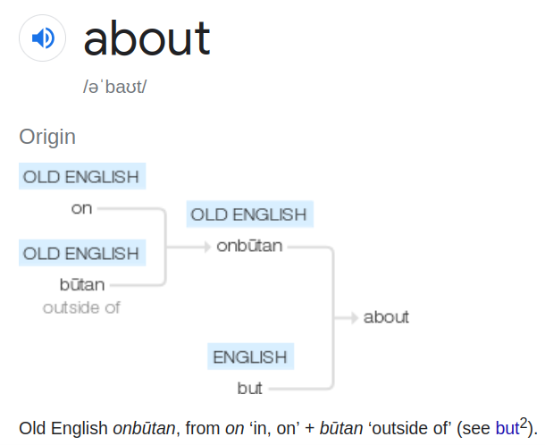

Here I copy-pasted the shortest latin words for later analysis.
Thanks to https://www.online-latin-dictionary.com
a
invariable feminine noun
1 first letter of the Latin alphabet
2 abbreviation of the praenomen [Aulus]
3 abbreviation of [absolvo], I absolve the judges wrote it on the small wax boards
4 abbreviation of [antiquo], I reject (told about a bill)
5 in the dates it means [ante]: a. d. = [ante diem] or [annus]
6 in the inscriptions it means [Augustus]
7 in calendar expression a. d. = [ante diem] = before the day
a Mutina = from, from the area of Modena
a natura = for nature
A littera tractim pronuntiata = the A vowel pronouced long
A litteram humi imprimo = to imprint letter A on the ground
aliquid a suis vel per suos potius iniquos ad te esse delatum
ā
preposition
1 (agency) by
2 (time) since
3 (time) from
4 (time) after
5 (named) after
6 on
7 in
8 (cause, reason) out of
9 (cause, reason) from
10 designating a charge
ab hoc = therefore, owing to this, for that reason || ab initio = from the beginning, from the start || ab ira = due to anger || a valetudinario = nurse || ab oriente = to the East || ab re = inopportune, useless, out of place || ab imo = from below || a me = from my house || accipio a = to receive from || ab summo = to start from the peak || aliquid ab aliquo || ab ovo || ab … ad (usque ad) || a bibliotheca = librarian || ab omni parte = from all sides, in every respect || ab omni, quod … = far from everything that … || ab reo dico = to speak in favor of the accused || ab Opis (aede) = on the side of the temple of Ops || ab re divina = after the sacrifice || ab ineunte aetate || a latere (or a lateribus or ex latere) = on the side, alongside || a Marcus Tullio sum = to come from M. Tullius || a materno genere = from the mother's side || ea abs te parvo curata sunt || a more maiorum = according to the customs of the ancients || a prima luce = since dawn || a primo mane = early in the morning || a re publica = by means of the State || a vero, a falso = for truth, for falsehood || ab ea parte = from this side || ab eo loco = starting from those words, from that passage || ab ovo usque ad mala = from the egg to apples (that is from appetizers to fruits, or from the beginning to the end) || ea abs te diligenter parvoque curata sunt || a medio ad summum = from the center to the extremities || a certo sensu et vero iudicare de aliquo = judge someone with a true and sure sentiment
ā
interjection
ah!, alas!, cripes! exclamation expressing surprise, joy, and pain
vae misero mihi ah || ah! pergisne? — iam iam desino || ah! vix tandem sensi stolidus
It seems like a stood for out (with all those absolvo and from and since and after. Even though some 7th translation is in, thus the oppositem, it could be depending on the context actually just translated from another position that it originally was: I check the examples, and it all supports this hypothesis: "a valetudinario" is literally "from hospital", and ab oriente is translated here as "to the east" but google translates it as "from the east" I wonder who's right, but I think a is from. Oh, I didn't even notice, but ab is not a, or is it? Why do they give ab in examples for a? Ab is also from, but in russian there's a similar word, об [ob] and it is about. out of out? not out? around? about.
just in case, the official etymology, and though we agree about out, I wonder why do they pull on to it, when it's naturally ab, but if they're correct, on is оп? об? to speak on something ~ говорить об чём-то.

and then of = off = out = от (is f=t? they meet in θ, that's for sure.
ăb (ā, ābs, aps)
preposition
1 (agency) by
2 (time) since
3 (time) from
4 (time) after
5 (named) after
6 on
7 in
8 (cause, reason) out of
9 (cause, reason) from
10 designating a charge
ab hoc = therefore, owing to this, for that reason || ab initio = from the beginning, from the start || ab ira = due to anger || a valetudinario = nurse || ab oriente = to the East || ab re = inopportune, useless, out of place || ab imo = from below || a me = from my house || accipio a = to receive from || ab summo = to start from the peak || aliquid ab aliquo || ab ovo || ab … ad (usque ad) || a bibliotheca = librarian || ab omni parte = from all sides, in every respect || ab omni, quod … = far from everything that … || ab reo dico = to speak in favor of the accused || ab Opis (aede) = on the side of the temple of Ops || ab re divina = after the sacrifice || ab ineunte aetate || a latere (or a lateribus or ex latere) = on the side, alongside || a Marcus Tullio sum = to come from M. Tullius || a materno genere = from the mother's side || ea abs te parvo curata sunt || a more maiorum = according to the customs of the ancients || a prima luce = since dawn || a primo mane = early in the morning || a re publica = by means of the State || a vero, a falso = for truth, for falsehood || ab ea parte = from this side || ab eo loco = starting from those words, from that passage || ab ovo usque ad mala = from the egg to apples (that is from appetizers to fruits, or from the beginning to the end) || ea abs te diligenter parvoque curata sunt || a medio ad summum = from the center to the extremities || a certo sensu et vero iudicare de aliquo = judge someone with a true and sure sentiment
ăc
conjunction
1 (usually before consonants) and, and also, and moreover
2 (connecting a more emphatic sentence element) and in particular, and what is more
3 (connecting a sentence element which strengthens or corrects the first element) and in fact
4 (in comparisons) than, as
atque ut (ne) … || aeque ac … || aliter atque aliter || aliubi atque aliubi || alius atque alius || atque etiam || atque eccum || etiam atque etiam || illa atque || simul atque || atque tamen || atque utinam … || adaeque atque || atque omnia or omnes || ac non = and not || ac si (+ subjunctive) = as if || atque adeo || alius atque or ac || aliud atque aliud efficiunt || anhelus atque pulvereus || catervae atque concentus || aliter atque ego existimo || aliquem repeto atque revoco || aucupium atque venatio || dense atque semel || atque increpat ultro || voluptas atque horror || rapio atque consumo || clades atque calamitas || ac si or quam si = that if || audi audi atque adtende || asta atque audi || clamore atque assensu || ave atque vale || alicui trado principatum atque imperium || civibus salvis atque incolumibus || pabulum studii atque doctrinae || classes optimae atque opportunissimae || aliquem hostem atque parricidam voco || ardor vultuum atque motuum || adhibeo studium atque aures || Caesare impulsore atque adiutore || civitas ignobilis atque humilis || aliter atque ostenderam facio || aliquid accipio aliorsum … or aliter atque … || ab oblivione atque silentio vindico = to tear away from oblivion || anxius animi atque incertus || ad decus atque ornamentum senectutis = to the decorum and ornament of old age || ad frigora atque aestus vitandos = to avoid the cold and the heat || aguntur omnia raptim atque turbate || o … correctorem atque emendatorem nostrae civitatis || audaciae satelles atque administer tuae || toto corpore atque omnibus ungulis || Cingetorigi … principatus atque imperium est traditum || cineri atque ossibus alicuius solacium reporto || apud aliquem pudor atque officium valet || habeo certam viam atque rationem || annum unum atque octogesimum implevit || ceterorum … tela atque incursum refugit || atque deos atque astra vocat crudelia mater || atque ibi sudes stipitesque praeacutos defigit || avi cur atque parentis praeclaram stringat rem || cinis exarsit repente … atque in multam noctem pertinaciter luxit
ăd
preposition
1 to, up to, towards
2 near, at until, on, by almost
3 according to
4 about with
ad hoc, ut (+ subjunctive) = in view of … , for … || ad meam rationem = with regards to what concerns me || ad horam = at the same time || ad exemplar (+ genitive) = in accordance with the example of … || ad cetera = etcetera || ad arma = to arms! || ad libidinem (+ genitive) = arbitrarily, at a whim, of one's choosing || ad spem (+ genitive) || ad nostrum arbitrium || ad id = moreover || ad imum = until the end || ad id locorum = until that moment || ad vivum || ad tibicinem || ad tempus || ad haec (or ad hoc or ad id) = beyond this, further || ad diem = on the establlished day || ad me = at my house, my place || ad libitum = arbitrarily, at a whim, of one's choosing || quo ad || apud or ad mensam || impello ad bellum || ad hos efflatus = to these drafts || ad rem conduco || ad or apud se || ad (or apud) inferos || ad id loci venio = to arrive at that place || ad rem flecto || ad aliqua re incipio = to begin with something || ad rem inclinatio || ad nullam rem || ad rem (or in re) erudio || ad rem pertineo || ad rem recurro || ad rem (or in rem) alicui conduco || aliquid aliquid ad aliquam rem reservo || ad dextram, ad laevam = to the right, to the left || spectans ad meridiem || ad mensam consisto = to place oneself at the table || ad rem callidus || ad unum (omnes) || ad rem respondeo || ad rem perpello || aliquid ad se recipio || ad rem divinam adsum || ad rem momentum habeo || ad quintum lapidem est sepultus || ad augusta per angusta = towards the pinnacle going through narrowness (= glory is not easy to achieve) || ab hora octava ad vesperum || a medio ad summum = from the center to the extremities || ad septentrionem sum (or specto, or verto, or vergo)
āh
interjection
ah!, alas!, cripes! exclamation expressing surprise, joy, and pain
vae misero mihi ah || ah! pergisne? — iam iam desino || ah! vix tandem sensi stolidus
ai
interjection
1 alas
2 exclamation expressing grief
ăn
conjunction
1 (introduces question expecting negative answer, further question) can it be that
2 whether
valens an imbecillus longus an brevis || cogito utrum esset utilius suisne servire an || ean ingenua an festuca facta e serva libera est || hac parte an illa || cogitemus an expediat || Cn Octavius est an Cn Cornelius quidam || anne oportuit? || cogito utrum me dicam medicum ducere an fabrum || an audivisti? || an vos paenitet quod … ? || an censes ? || an existimas ? || an vero ? || an non || an te auspicium commoratum est ? || an sis abitura a tuo viro || an tu haec non credit? || an vero obliti estis? || an ille vir id omisisset curare in hospitem? || an ergo oblitus es? || an praeverti in Thessaliam posset || an profecturus sim nescio || anne nec aequom anne iniquom imperet cogitabit || an toto pectore deciderim || an vero vos soli ignoratis? || an per costas exigat ensem || an te beneficiorum memoria comitetur || an fortasse paululum debeo? || an sol maior quam terra || an ortus sit ab aliquo temporis principatu || an te conscientia timidum faciebat ? || albus an ater sit non curo || an obstrictum esse me crederem obeunti vadimonia mea … ? || an dolus aliquis suspectus fuerit incompertum est || an ipse pecuniam inspurcavit? || an inde quo cohibitus es accedere? || an villa sit apta puellae? || an tu dialecticis ne imbutus quidem es? || an adhuc experiretur dubitans || collibus an plano melius sit ponere vitem quaere || anne tu dicas qua e causa vindicaveris? || faciat finem an accipiat || hactenus consultans veneno an ferro || ubi ego sum? hicine an apud mortuos? || an ut cibos ac potiones percolarem? || an ut conquirat undique suavitates? || vosne vero L. Domitium, an vos L. Domitius deseruit? || ambiguus an urbem intraret || albus an ater sis nescio || pacem an bellum agitaturus foret || an … inultus ut flebo puer? || an patris triumphum decorare fugiendum fuit ? || an populum teneri te unum exlegem esse? || an velint vitam per obscurum transmittere || Gabinio dicam anne Pompeio an utrique || ea res nunc in discrimine versatur utrum an || vos existimate facta an dicta pluris sint || comoediae spectandae an exigendae sint vobis prius || pacem an bellum gerens perniciosior esset || cohortibus abire an manere mallent data potestate || pacemne huc fertis an arma? || an recto stet fabula talo || bonine an mali sint id hau quaeritant || an tu me in viola putabas aut in rosa dicere? || an tu haec non credis? — minime vero || an nescis longas regibus esse manus? || an paenitet vos quod salvum atque incolumem exercitum traduxerim? || an tu haec ita confundis et perturbas ut … ? || an ut ad reliquias Asiaticae negotiationes proficiscare (= proficiscaris) || an tactum sapor arguet oris? || an vero vos hospites in hac urbe versamini? || armis cum hoste certo an venenis || addubitavere (= addubitaverunt) an in urbem subducerent copias || anne de nobis trahere spolia foederatis licebat? || an non putas aliquid esse discriminis inter sterilem et fecundam? || an nova tristitiae causa puella tuae? || an toti morimur nullaque pars manet? || qua in discrimine fuerunt, an ulla post hunc diem essent || an te sibi generum Tethys emat omnibus undis || an tanta sit eius (= animi) tenuitas ut fugiat aciem? || clauserant portas, incertum vi an voluntate || an tum bracchia consuescunt firmantque lacertos? || an Stygia sontes dubitavit mergeret unda || agitur liberine vivamus an mortem obeamus || an exspectas ut pronus supplice dextra sternar? || an venit in votum Attalicis ex urbibus una? || an vero non iusta causast ut vos servem sedulo? || ea res haesitationem attulit ignaris adhuc an impetrassent impetravissent || an temperantia sinet te immoderate facere quicquam? || an causam susceptam adfligeret? an se domi contineret ? || an rudis dici potuerit materia expostulo || an reticere possim tribunos tantum licentiae sumpsisse? || an quisquam poterat probare quod cognitum non habet? || an potest cognatio propior ulla esse quam patriae … ? || an partus ancillae sitne in fructu habendus disseretur || an quod a sociis eorum non abstinuerim iustam querellam habent || an dubitamus quin Romani ad nos interficiendos concurrant? || an haec inter se iungi copularique possint || an cuiuslibet auris est exigere litterarum sonos? || an ratio parum praecipit nec bonum illud esse nec … ? || an faces admovendae sunt quae excitent tantae causae indormientem? || an hunc (= tactum) confutabunt nares oculive revincent? || an potius optem ut malaxandos articulos exoletis porrigam? || an obsequium senatus an studia plebis reperiret anxius || an intentione rei familiaris obeundae crebris excursionibus avocaris? || captivus interrogatus auditune an oculis ea comperta haberet || an Serapis potest nobis praescribere per somnum curationem valetudinis … ? || an patris auxilium sperem quemne ipsa reliqui … ? || an te paenitet in mari quod elavi ni hic in terra iterum eluam? || an inanem credulitatem tempore ipso vanescere sineret || an mediocre discrimen opinionis secuturum ex hac re putatis? || certatur, utrum honestati potius an utilitati consulendum sit || ea (pecunia) quaeritur unde profecta sit, ab accusatore an ab reo || an non sensistis vestras coniuges vestros liberos traductos per ora hominum? || an omnis tempestas aeque mare illud contorqueat || auri navem evertat gubernator an paleae nihil interest || an collegam subrogabis quem ne in demortui quidem locum subrogari fas est? || argentum et aurum propitiine an irati dii negaverint dubito || an quod corporis gravitatem et dolorem animo iudicamus animi morbum corpore non sentimus? || Cleanthes Zenonis vitae interfuit et observavit illum an ex sua formula viveret || an quisquam tam procul a concipiendis imaginibus rerum abest ut … ? || an etiam Theseus Marathonii tauri cornua comprehendit iratus? || an tu aequum censes militia semenstri solidum te stipendium accipere? || an quicquam stultius quam ex nominum propinquitate vim similem rerum coniectam? || an quoquam mihi adire licet ubi non maiorum meorum hostilia monumenta plurima sint? || bellum adversus patrem agitaverit an opes veresque adversus fratrem in incerto fuit || an vero P. Scipio Tib. Gracchum privatus interfecit Catilinam vero nos consules perferemus? || an restrictius arbitraris per orbem terrarum legendum dare duraturam memoriam suam quam … ? || an vero P. Scipio T. Gracchum privatus interfecit Catilinam vero nos consules perferemus? || nam quod rogas, ut respiciam generum meum, an dubitas quin ea me cura sollicitet || an Scythes Anacharsis potuit pro nihilo pecuniam ducere nostrates philosophi non potuerunt? || nam postea quae fecerit incertum habeo pudeat magis an pigeat disserere || M. Curtium castigasse ferunt dubitantes, an ullum magis Romanum bonum quam arma virtusque esset || qua quidem haud scio an, excepta sapientia, nihil melius homini sit a dis immortalibus datum
ăr
preposition
1 to, up to, towards
2 near, at until, on, by almost
3 according to
4 about with
ad hoc, ut (+ subjunctive) = in view of … , for … || ad meam rationem = with regards to what concerns me || ad horam = at the same time || ad exemplar (+ genitive) = in accordance with the example of … || ad cetera = etcetera || ad arma = to arms! || ad libidinem (+ genitive) = arbitrarily, at a whim, of one's choosing || ad spem (+ genitive) || ad nostrum arbitrium || ad id = moreover || ad imum = until the end || ad id locorum = until that moment || ad vivum || ad tibicinem || ad tempus || ad haec (or ad hoc or ad id) = beyond this, further || ad diem = on the establlished day || ad me = at my house, my place || ad libitum = arbitrarily, at a whim, of one's choosing || quo ad || apud or ad mensam || impello ad bellum || ad hos efflatus = to these drafts || ad rem conduco || ad or apud se || ad (or apud) inferos || ad id loci venio = to arrive at that place || ad rem flecto || ad aliqua re incipio = to begin with something || ad rem inclinatio || ad nullam rem || ad rem (or in re) erudio || ad rem pertineo || ad rem recurro || ad rem (or in rem) alicui conduco || aliquid aliquid ad aliquam rem reservo || ad dextram, ad laevam = to the right, to the left || spectans ad meridiem || ad mensam consisto = to place oneself at the table || ad rem callidus || ad unum (omnes) || ad rem respondeo || ad rem perpello || aliquid ad se recipio || ad rem divinam adsum || ad rem momentum habeo || ad quintum lapidem est sepultus || ad augusta per angusta = towards the pinnacle going through narrowness (= glory is not easy to achieve) || ab hora octava ad vesperum || a medio ad summum = from the center to the extremities || ad septentrionem sum (or specto, or verto, or vergo)
You can notice, that a and ab have exactly the same translation and examples, and so do ad and ar.
d and r reflecting eachother in the k-symmetry, huh.. does it all make sense now? no, not yet.
keep on digging.
ās
masculine noun III declension
1 penny, copper coin
2 a pound
3 one, whole, unit
4 circular flap or valve
5 round slice
as librarius || aliquid assis aestimo || asses ferio || perdo omnia ad assem || ab asse (or ex parvo) crevit = it rose from nothing (= with just one beam) || as erat libra pondo || assis aliquid aestimo or facio || assem habeas assem valeas || assem sese negat daturum || assem elephanto do || aes grave or as libralis || assem in partes centum diduco || asse modium populo do || assem discunt in partes centum diducere || assem para et accipe auream fabulam fabulas immo
SINGULAR PLURAL
Nom. ās Nom. asses
Gen. assis Gen. assĭum, assum
Dat. assi Dat. assĭbus
Acc. assem Acc. asses
Abl. asse Abl. assĭbus
Voc. ās Voc. asses
ăt
conjunction
1 but, but on the other hand
2 on the contrary
3 while, whereas
4 but yet
5 at least
at … e contrario || at … bat || at vero? || at saltem || at non || at ego … || at certe || at anim or enim || at vero! || at enim … bat enim … || at enim vero || at vero voltu || at (sed) enim … || at vos or superi audite … || auctor at dux mei reditus || at vos or superi quaeso miserescite regis || etsi tamen or at tamen or certe or at certe or verum tamen || brevis a natura vita nobis data est; at memoria bene redditae vitae sempiterna
au
interjection
oh! ow! oh dear! goodness gracious!, used by women to express consternation
ab ac ad an as at
which I found in one source as all the biliteral latin starting with a seems to be incomplete.
ab ac ad ah ai an ar as at au
is the whole line.
Can you imagine! indeed, no biliteral words beginning with b! thus ab is just a, just as об is just о.
(is it some etruscan influence, or were those absurd abecedaries without b telling something true?)
cĕ
conjunction
demonstrative enclitic appended to pronouns and adverbs (like colloquial English here, there, with this or that)
Ci is the imperative "Move!" from the following verb:
cĭo
transitive verb IV conjugation
1 to move
2 to shake
3 to rouse, to stir, to call up
4 to disturb
5 to provoke
6 to invoke
7 to produce
8 to discharge
ACTIVE FORM:
INDICATIVE
PRESENT
I sing. cĭo
II sing. cis
III sing. cit
I plur. cīmus
II plur. cītis
III plur. cĭunt
IMPERFECT
I sing. ciēbam
II sing. ciēbas
III sing. ciēbat
I plur. ciebāmus
II plur. ciebātis
III plur. ciēbant
FUTURE
I sing. cĭam
II sing. cĭes
III sing. cĭet
I plur. ciēmus
II plur. ciētis
III plur. cĭent
PERFECT
I sing. civi
II sing. civisti
III sing. civit
I plur. civĭmus
II plur. civistis
III plur. civērunt, civēre
PLUPERFECT
I sing. civĕram
II sing. civĕras
III sing. civĕrat
I plur. civerāmus
II plur. civerātis
III plur. civĕrant
FUTURE PERFECT
I sing. civĕro
II sing. civĕris
III sing. civĕrit
I plur. civerĭmus
II plur. civerĭtis
III plur. civĕrint
SUBJUNCTIVE
PRESENT
I sing. cĭam
II sing. cĭas
III sing. cĭat
I plur. ciāmus
II plur. ciātis
III plur. cĭant
IMPERFECT
I sing. cīrem
II sing. cīres
III sing. cīret
I plur. cirēmus
II plur. cirētis
III plur. cīrent
PERFECT
I sing. civĕrim
II sing. civĕris
III sing. civĕrit
I plur. civerĭmus
II plur. civerĭtis
III plur. civĕrint
PLUPERFECT
I sing. civissem
II sing. civisses
III sing. civisset
I plur. civissēmus
II plur. civissētis
III plur. civissent
IMPERATIVE
PRESENT
II sing. ci
II plur. cīte
FUTURO
II sing. cīto
III sing. cīto
II plur. citōte
III plur. ciunto
PARTICIPIO
PRESENT
ciens, –ientis
FUTURO
citūrūs, –a, –ūm
INFINITIVE
PRESENT
cīre
PERFECT
civisse
FUTURO
Singular: citūrūm, –am, –ūm esse
Plural: citūros, –as, –a esse
GERUNDIO
Genitivo: ciendi
Dativo: ciendo
Accusativo: ad ciendum
Ablativo: ciendo
SUPIN
citum
PASSIVE FORM:
INDICATIVE
PRESENT
I sing. cĭor
II sing. cīris, cīre
III sing. cītur
I plur. cīmur
II plur. cimĭni
III plur. ciuntur
IMPERFECT
I sing. ciēbar
II sing. ciebāris, ciebāre
III sing. ciebātur
I plur. ciebāmur
II plur. ciebamĭni
III plur. ciebantur
FUTURE
I sing. cĭar
II sing. ciēris, ciēre
III sing. ciētur
I plur. ciēmur
II plur. ciemĭni
III plur. cientur
PERFECT
I sing. citus, –a, –um sum
II sing. citus, –a, –um es
III sing. citus, –a, –um est
I plur. citi, –ae, –a sumus
II plur. citi, –ae, –a estis
III plur. citi, –ae, –a sunt
PLUPERFECT
I sing. citus, –a, –um eram
II sing. citus, –a, –um eras
III sing. citus, –a, –um erat
I plur. citi, –ae, –a eramus
II plur. citi, –ae, –a eratis
III plur. citi, –ae, –a erant
FUTURE PERFECT
I sing. citus, –a, –um ero
II sing. citus, –a, –um eris
III sing. citus, –a, –um erit
I plur. citi, –ae, –a erimus
II plur. citi, –ae, –a eritis
III plur. citi, –ae, –a erunt
SUBJUNCTIVE
PRESENT
I sing. cĭar
II sing. ciāris, ciāre
III sing. ciātur
I plur. ciāmur
II plur. ciamĭni
III plur. ciantur
IMPERFECT
I sing. cīrer
II sing. cirēris, civirēre
III sing. cirētur
I plur. cirēmur
II plur. cirēmini
III plur. cirentur
PERFECT
I sing. citus, –a, –um sim
II sing. citus, –a, –um sis
III sing. citus, –a, –um sit
I plur. citi, –ae, –a simus
II plur. citi, –ae, –a sitis
III plur. citi, –ae, –a sint
PLUPERFECT
I sing. citus, –a, –um essem
II sing. citus, –a, –um esses
III sing. citus, –a, –um esset
I plur. citi, –ae, –a essemus
II plur. citi, –ae, –a essetis
III plur. citi, –ae, –a essent
IMPERATIVE
PRESENT
II sing. cīre
II plur. cimĭni
FUTURO
II sing. cītor
III sing. cītor
II plur. –
III plur. ciuntor
PARTICIPIO
PERFECT
citus, –a, –um
INFINITIVE
PRESENT
cīri
PERFECT
Singular: citus, –a, –um esse
Plural: citi, –ae, –a esse
FUTURO
citum esse
GERUND
ciendus, –a, –um
SUPIN
citu
and all these suffixes may be priceless source of research, but let's leave it to italians.
da is a form of do (see further)
dē
preposition
1 down, away from, from, off
2 about, of, concerning
3 according to
4 with regard to
de sub || de suo
di is plural form of deus:
dĕus
masculine noun II declension
1 God
2 god
3 divine essence, divine being, supreme being
4 statue of god
aliquis deus || clinicus Deus || colo deos || volucer deus || at te di perdant! || bellator deus || bivii (dii) || caelestes dii || adfari deos || caerulus deus || Maenalius deus || aliquem deum adhibeo || fabricator deorum || ad honorem deum = to honour the gods || aliquid extraneum deo || adiurare per deos || vota suos habuo deos || ad deos accedo = to resemble the gods || agnosco deos || afflanta est numine dei || aliquid a diis precor || alicui deo aliqua re (or aliquid aliquo deo) immolo || pacem deum || adorati dii, ut … || ales deus || o di boni || alipes deus || cognitio deorum || cognitiones deorum || advoco deos || damnosissimi dii || puto deos || eamque esse Dei visionem ut || faciamus deos non esse || dis iuvantibus || deorum praesentiae || voco deos || benedicendus est deus || fabricae deum || auctoribus diis || aliquem deum dico || adoro deos || Arcadius deus || cede deo || Aonius deus || ad deos propius accedunt = to be closer to be godlike || a deo ad materias avocant = to remove matter from a god || caste placo deos || a deo nomen traho = to take one's own name from a god || ad deos abiit Hercules = Hercules went among the gods || vos celebrem cantate deum || catholica bonitas Dei || adoro large deos || cauponor verbum Dei || accepto ferent dii vestri, quod … = your gods will be grateful that … || do exta deo || voce deos voco || pro di immortales! || si dis placet || alloquor inefficaces deos || adhibeo odores ad deos || eam alitem eius dei nuntiam venisse || habeo deos aeternos || habeo deos faciles || habeo notitiam aliquam dei || anhelum proflabant deum || aggrego deorum numero || anima factura Dei est || in deorum numero colloco || deus ex machina || ales dei nuntia || a dis immortalibus optare ut = ask the immortal gods that || adoptio filiorum Dei || ad deorum servant supplicia = they reserve (the Italian bovines) to be sacrificed in honour of the gods || Caesarem ut deum adoro || caeruleus deus or frater || audivere di mea vota || antra dei fumantis || balbutiens de natura deorum || aliquem cum deorum laude coniungo || cogitationes omnium hominum penitus insedit deum esse || cogitatio de vi et natura deorum || clavigerum adloquor ipse deum || votis vocare deos || votis … fatigare deos || votis or in vota or per vota voco deos || cohibeo parietibus deos || amoliri deum dona || color albus praecipue decorus deo est || cara deūm suboles || vae puto deus fito || pro deum fidem || adsigno praeceptum deo || facio alicui deo aliqua re || facilis amicitia abl di rel || faciles deos habuistis || voco deos in verba || aliquid deos immortales exposco || volubilis et rotundus deus || aliquem ut deum colo || beatos esse deos sumpsisti || alicui deorum honores habeo || o sanguen dis oriundum || alicuius rei causam verto in deos || aedes labentis deorum || pacem deum adoro || sacra diis facere || raptus a dis Ganymedes || sacer totusque dei || sacra deum lego || sacris deos lito || adorare pacem deūm || vota diis fero || adflata est numine dei || additus numero deorum || circa Deum idoneus fideiussor || civitas deorum indulgentiam promerita || e caelo deripit ille deos || iam senior sed cruda deo viridisque senectus || circumitione quadam deos tollens || circa deum delubra discurrunt || circa deos ac religiones neglegentior || iacit verba minora deo || tacendo forsitan quae di immortales vulgari velint || habeo deos aeternos ac beatos || sacrifico deo alicui maioribus hostiis || sacram et dei ministram insulam || sacerdotes suos cuique deorum praeficere || habeas faciles in tua vota deos || pacem veniamque precor deorum || o Meliboee, deus nobis haec otia fecit || vota tamen tetigere deos || pacem deorum (deum) precibus exposco || comitibus suis responsum ut Alexandrum pro deo non pro rege colerent || certatam lite deorum Ambraciam || ancipiti deum irae devotus || cano laudes deorum ad citharam || a dis immortalibus hominibus provisum sum = (it would be understood) that gods take care of men || canem et faelem ut deos colunt || alicui ture quasi deo supplicatur || C. Mario per hostias dis supplicanti || a suis diis penatibus praeceps eiectus = expelled from his house || ad deorum religionem et sanctimoniam demigro = to be included in the worship and the sanctity of the gods || ad patrios arma refero deos || boves quos ad deorum servant supplicia || at te Iuppiter dique omnes perdant! || at tibi di dignum factis exitium duint || arx Capitoliumque sedes deorum || alterum nobis cum dis alterum cum beluis commune est || arae et alia diis sacrata || audentes deus ipse iuvat || celebrant carminibus antiquis deum || animus qui deorum cognatione deorum tenetur || apparuisse numen deorum laetandum est || adiutores dei tresviri capitales || aliquem in Deorum numero or numerum or in Deos repono or refero || Anaximandri opinio est nativos esse deos || animus dis hominibusque infestus || Xenophanes unum esse omnia et id esse deum || auctius atque di melius fecere || antefixa fictilia deorum Romanorum rido || vocavit Deus firmamentum caelum || Dalmatis di male faciant || anima ancillata or exancillata falsis dis || paedagogus datur deus inferioris notae || eadem insculpsit in mentibus ut deos aeternos et beatos haberemus || anser quem dis hospitibus mactare parabant || alios (deos) votis ex urbe sua evocatos || bonos exitus diis immortalibus attribuo || caesis hostiis placo (mentes deorum) || o deorum quidquid in caelo regit terras || iam reor hoc ipsos edidicisse deos || Aegypti qui canem et felem ut deos colunt || si omnes deos hominesque celare possimus || at sperate deos memores fandi atque nefandi || clamabant fore ut ipsi se di immortales ulciscerentur || ab dis immortalibus pacem ac veniam petunt = they ask the immortal gods for benign help || o di immortales, avertite ac detestamini hoc omen || ceteri, qui dii ex hominibus facti esse dicuntur || adfers haec omnia argumenta, cur dii sint || a natura deorum haustos animos et libatos habemus = we have a soul that is derived from divine nature || caput esse interpretari quae voluntas deorum immortalium esse videatur || adhibeo cultus, honores, preces diis immortalibus || aut quisnam ignarum nostris deus appulit oris? || o ne ille agere gratias dis omnibus debet || audita maior humana vox excedere deos || habebam in animo insitam informationem quandam dei || sacerdos ter centum tonat ore deos || alii plane humanius et verisimilius solem credunt deum nostrum || Galba fatigabat alieni iam imperii deos || calendis Iuniis fabatam pultem dis mactant || cavisse deos ut tuto libertas defendi posset || atque deos atque astra vocat crudelia mater || Cleanthes quattuor modis formatas in animis hominum putat deorum esse notiones || caste iubet lex adire ad deos, animo videlicet || animadverto deos ipsos innocentia et sanctitate (adorantium) laetari || animos imperitorum ad deorum cultum a vitae pravitate converto || beneficio deorum immortalium et virtute eorum expiato incommodo || nam te scire, deos quoniam propius contingis, oportet || ob merita virtutis deos habitos Euhemerus exsequitur || o Romule, Romule die, qualem te patriae custodem di genuerunt || baptismus, aeque dei census, ab omnibus exerceri potest || vox Lethaeos cunctis pollentior herbis excantare deos || ambrosia cum dulci nectare mixta contigit os fecitque deum || albi greges et taurus Romanos ad templa deum duxere triumphos || argentum et aurum propitiine an irati dii negaverint dubito || adversus morem militarem et numen deorum ausus es cum hoste confligere || atque etiam supplicatio diis immortalibus pro singulari eorum merito meo nomine decreta est … || sacra diis aliis Albano ritu, Graeco Herculi … facit || adorati dii, ut bene ac feliciter eveniret quod bellum populis Romanus iussisset || ob haec, quibus maiora nec sperare nec optare ab dis immortalibus poteramus || arbitror multas esse gentes sic immanitate efferatas ut apud eas nulla suspicio deorum sit || at hic quem gemimus felix hominesque deosque et dubios casus et caecae lubrica vitae effugit || a collegio pontificum impeditus est, negante unam cellam duobus diis recte dicari = he was prevented by the college of pontiffs, which denied that a single chapel could reasonably be dedicated to two gods || Cicero illam inter deos Romuli receptionem putatam magis significat esse quam factam || qua quidem haud scio an, excepta sapientia, nihil melius homini sit a dis immortalibus datum
SINGULAR
Nom. deus
Gen. dei
Dat. deo
Acc. deum
Abl. deo
Voc. dee, deus, dive
PLURAL
Nom. dei, dii, di
Gen. deōrum, deum
Dat. deis, diis, dis
Acc. deos
Abl. deis, diis, dis
Voc. dei, dii, di
do
transitive verb I conjugation
1 to give
2 to dedicate
3 to sell
4 to pay
5 to grant, to bestow, to impart, to offer, to lend
6 to devote
7 to allow
8 to make
9 to surrender, to give over
10 to send to die
11 to ascribe, to attribute
12 to give birth, to produce
13 to utter
do aliquid alicui || collum dat || aliquid alicui do || do aliquem ad terram || do aliquem alicui in consilium || do aliquem in ruborem || do aliquem in timorem || ad (or in) terram aliquem do || ad supplicium do || ad pistores aliquem do || ad mortem aliquem do = to kill someone || ad aliquid ansas do = to give the means, the pretext or occasion to do something || do aliquem in vincula || do aliquem intricatum || do aliquem leto || do aliquem ad iniurias alicuius || a me argentum dedi = I paid for it myself || alicui augurium do || alicui aliquid vitio do || alicui aliquid laudi do || alicui aliquid in manum in manus do || do alicui turdum || ad remum do || ad ludendum me do = to indulge in amusements || do alicui tutorem || veniam do || tempus do || scutum do alicui || sanguinem do || alicui commeatum do || do aliquid alicui precanti || do aliquid famae || alicui successorem do || do diem alicui || alicui solacia do || alicui poculum do || do dolorem || alicui impunitatem do || do fabulam || alicui epulum do || alicui dubitationem do || alicui damnum do || alicui crimini do || alicui aliquid crimini do || do curas alicui || alicui tussim do || aliquam alicui do uxorem || do aliquid in conspectum alicuius || do aliquid in profundum || do aliquid muneri || do aures alicui || do bibere || do caepas vescendas || do cenam alicui || alicui litteras ad aliquem do || do civitatem alicui || do cuneum || alicui vitam do || alicui verba do || alicui concilium do || dabimus sermonem iis || dat stragem || date operam || date tela || do (alicui) vulnus or vulnera || casus dandi || in solutum do || alicui negotium do || manus do || do mandata ut … || iudicem do || fidem do || do actionem || dat saltus || da femina ne sim || dat lora || dabis nobis diem aliquem || dabat et famae || damnas sunto dare || damnum dabis || da quod castigo || dant impressionem || dare denegaris (= denegaveris) || da mihi te talem || dare denego || do occasionem, ut … || darent convenit … || dat colla || consilium do || do alicui … gladium || aliquid in aleam do || aliquid dotem do || aliquid dono do alicui || aliquem in caveam do || aliquem depexum do || aliquem defensum do || alicui veniam dare ut … || do alicui negotium ut … || alicui iura do || alicui gratiam do || alicui de aliqua re mandatum do || alicui do diem || aliquid potui do || do alicui mandata ad aliquem || an iis me dem qui potiuntur? || do me in aleam || do alicui accessum || do alicui aliquem diem || adiunxit se dedisse || do alicui aliquid in manus || do alicui amplexus || do alicui cervices || do alicui copiam || do alicui curationem || do alicui facultatem ut || do alicui laetitiam || do alicui litteras ad aliquem || alicui malum do || do praedae || do operam alicui rei || do vulnera || do operam alicui || do operam || do nuptum || operam do ut ne (+ subjunctive) || do nomen || do murmur || do sententiam || do motus || do me vento || do me obvium alicui || do me iucunditati || do me in sermonem || do me in familiaritatem alicuius || do sermonem alicui || do me alicui placidum || operam do (+ infinitive or ut + subjunctive) || do operam ut (+ subjunctive) || do potis sunt || ansam do || do pugnam || aquam do || arraboni do || auspicium do || do poenas || do plausum || do vela || aliquid oblivioni do || pugnam aliquam do || terga do || do pecuniam alicui || do pecuniam || aliquem civitatem dare || do salutem || do me in adoptionem || do me aegritudini || do me fugae or in fugam || do labem || do iura || obviam alicui me do || do veniam || do plangorem || do inter nos || do in splendorem || do utendum || aliquid in sortem do || do id alicui cogitandum || do gemitum || alicui coheredem dare || aliquid alicui mancipio dare || gemitum dat pectore ab imo || do frenos || do fragorem || do lacrimas || do tus || do laudatores || iacto me (do) || somno me do || do sonum || do lora || cessum do || chirographum do || e manibus in manus do || do verba alicui || do manum alicui || date dexteras || do terga || do templum || do tabellam de aliquo || date pudori praemium || date operam adiutabilem || do ventis … comas || do or dono aliquid alicui dono or donum || do or dedo manus || do vela famae || do verbera ponto || do, accipio motus || do verba curis || datis referuntur habenis || do, accipio preces || do stragem satis || dant negotium ut eum interficiant || pacem do in has leges || pacem demus animo || dant animos plagae || dant accipiuntque manus || dando, sublevando, ignoscendo || dandi et accipiendi beneficii || tabellam do or committo alicui || coepta coniuratione in quam nomina dederant senatores || dabunt Academici pugnacitatem || dabit mandata reverti || dabit grandes bolos || eadem biberis eadem dedero tibi ubi biberis savium || cineri medicinam dare || dare obiectum parmae || labantes iuncturas do || date bibat tibicini || dat posse moveri || dat tibi iustam excusationem || do, ministro bibere alicui || dat signum tuba || do, recipio merita || dat regimen ventis || do, reddo beneficium || dabo egenti sed ut ipse non egeam || dat nataliciam in hortis || fac id te dedisse mihi quod non ademisti || dat census honores || dat actum et factum || vadem te ad mortem tyranno dabis pro amico || do fidem, iusiurandum || do litteras or epistulam alicui or ad aliquem || do locum colloquio || do locum loquendi || do boves experiendos || do locum suspicioni || do ansas ad reprehendendum || do animum in luctus || do animos or spiritus || do filiam alicui nuptum || do me salutationi amicorum || do litem secundum aliquem || do colla catenis || do concilium or contionem || do funera in rogos || do hunc populo || do exta deo || do et recipio merita || do diripiendam urbem || do diem colloquio || do iter alicui per provinciam || do latus mollius || do legem vitae || do lintea retro || do motus incompositos || do naufrago tabulam || do nomen in coniurationem || do ruinas arboribus || do senatus copiam || do alicui facultatem ad dicendum || do alicui canem munus || do spatium comparandi || do alicui aliquid laudi, vitio || do suspicionem fugae || do aera militibus || do aditum conveniundi (=conveniendi) alicui || do or insinuo me in consuetudinem alicuius || do risus iocosque || do quippiam alicui per intervalla || do pro corpore nummos || do alicui viam per fundum || do iudicem or iudicium || do operam valetudini || do pabula morbo || do partes (amicis) || do pecunias in fenus || do pia tura || do alicui spatium ad scribendum || do alicui pila coniiciendi || do precibus eventum || do or facio locum || dabimus aliquod laxamentum || amori operam do || Caesio renuntiat se dedisse || Bitiae (pateram) dedit increpitans || bellum do or defero alicui || catervatim dat stragem || basia da nobis pressa || neci do or mitto || assem elephanto do || aris tura do || aliquid alicui vitio et culpae do || arbitrum de finibus do || aliquem quaestorem sors dedit || nomen do or edo || brachia cervici do || brachia experienda do || da ab Delphio cantharum circum || caecum do vulnus || praeceps do or traho || aliquam suspicionem infirmitatis do || Cerealis cenas dat || censuram senecta dabat || do tempus exponendi || amico operam do || adnotaret, quid dedisset || alicui recte ad aliquem litteras do || auctoritatem alicui do or praescribo || alicui liberalitatis facultatem do || ad ignoscendum facultatem dare = to give the possibility to forgive || alicui nequam do or facio || ad hoc mandata verbis dat = he adds then oral recommendation || alicui senatum do or praebeo || alicui togam puram do || alicui medicamentum bibendum do || alicui librum ad aliquem perferendum do || alicui aures do or praebeo || a summo do (bibere) = to pour something to drink starting from the higher side of the table || aditum ad caelum alicui do || aliquem praemio afficio or do || solo adaequo or do || alicui optionem muneris do || aditum religioni do || aliquid alicui condono or dono or do || aliquid pro carmine do || alicui successus prosperos do || alicui iusiurandum do || alicui terga do or praesto || ad praetores vinum do || amori do ludum || da requiem terrae || da, quaeso, ac ne formida || verba in ventos do || saltum or saltus do or facio || bene mensum do || da operam ut valeas || amnicam stipem do || da nobis qui fiamus liberi || aliquid muneris pro sua missione do || da savium etiam || alicui facultatem do or offero || da salutiferam opem || adulescentis (= adulescentes) somno se dedisse || vitio do or verto || in planum do or effundo || ansas alicui ad reprehendendum do || aliquem do in aleam casus || Alcinoo dare poma || da mihi alterum tantum || dabat omnia tellus || aeternam iuventam do || amicabilem operam do || da locum melioribus || aequom postulat: da veniam || nascenti cui tris animas mater dederat || alicui filiam nuptum or in matrimonium do || ubi illaec quae dedi ante? abusatus || do hostes in fugam, in deditionem || alicui existimandi non nihil loci do || spem alicui affero or do, or facio || Cincius eam mihi abs te epistulam reddidit, quam tu dederas || Q. Tuberonem videbamus, philosophiae cum operam daret || facile omnes quom valemus recta consilia aegrotis damus || vacationem augures quo minus iudiciis operam darent non habere || Cnosia bina dabo levato lucida ferro || alicuius virtuti debitum testimonium do || alicui lucrandi ansam offero or do || adulescentulo filiam do in seditionem || certum est dare lintea retro || ubera admoveo or praebeo or do || do foras librum or edo librum || quadrantem rei publicae nostrae dedit || certum atque decretum est (mihi) non dare signum || alicui liberam potestatem ad credendum do || aliquem in custodiam do or conicio or condo || Caesari imperium extraordinarium dedi || arraboni has dedit minas || do tamquam ansas ad reprehendendum || do omen plebeio consuli || aurum dedimus lignum tenemus || me confero or conicio, or do in pedes or pedibus || beneficium do socialis res est || do oscula sine invidia || biforem dat tibia cantum || do retrorsus terga metu || do rem inclinandam fortunae || bello dat signum bucina || Caere intactum inviolatumque … darent || adulatoribus latus praebere or dare || Nabidi eam velut fiduciariam do || alicui dextram porrigo or tendo or do || do operam ne incidamus in iram || alicui rei primas concedo or do || fabulae huic operam do || alicui salutem do or fero or affero || alius alium confirmare ne nomina darent || ali do vitalis aeris auras || aliquid pignori oppono or do or pono or obligo || do magna experimenta virtutis || bene penitus sese dare in familiaritatem alicuius || Apollo augurium citharamque dabat || stragem do or edo, or facio || agger ascensum dat Gallis || da … pignus, ni omnia menimi || da mihi quemquam, qui magnificentius dominum servaverit || do or praebeo concilium legatis || iura or ius do or dico, or reddo || dant operam ut mihi falso maledicatur || fabulam ago or do, or doceo || arbitrium quid darent quid adimerent || dant operam ne cenet senex || dant manibus famuli lymphas || do alicui crimini pecuniam accepisse || dant lignum navigiis utile || do or doceo or facio fabulam || da mihi nunc, satisne probas ? || da diem hunc sospitem || date ferrum, qui (= quo) me animà privem || dat eam libertatem, ut quod velint faciant || da flammam evadere classi || da illi quod bibat || cenam dabat apud villam || Cereri do motus incompositos || date viam qua fugere liceat || da mihi hoc ; concede, quod facile est || dare vulnera possumus hosti || abs te satis accipiam; ego autem tibi satis non dabo = I will accept from you the guarantee; but I won't give mine to you || benigne omnia cumulata do || accepto fero (or facio) (+ dative) = to credit to the account of || accipere se putavit beneficium, cum daret = he thought of receiving a benefit (while) giving || ad me velim … ut se initia dederint, perscribas = I would like you to write to me in detail how it was started ([your tribuneship]) || abs te peto des operam ut te sistas = I ask you to find a way to reach me || damus alternas accipimusque preces || ab libertate in servitutem vindicias do = to decide the condition of serfdom of a freeman || damnum do or infero or affero || asse modium populo do || alicui iugulum do or porrigo or praesto || dabit in laqueum vestigia noster perfidus || aditum petentibus conveniendi non dabat || aetas eius dare potuit suspicioni locum || audaciam dare sua signa et posse praenosci || tacite dat lex potestatem defendendi || da mihi ex ista arbore quos seram surculos || Casinam ego uxorem promisi vilico nostro dare || dat de lucro, nihil detrahit de vivo || vulnus do or facio, or infero, or infligo || dat puellam ei servo exponendam ad necem || vixi et quem dederat cursum fortuna peregi || dabit ipsa feracem spes animum || da viam domino ad prehendendum mancipium! || dabunt veniam votis irasque remittent esse || dat ingentem fluctu latus icta fragorem || dat facies animos: facie violenta Corinna est || arbitrum inter Academiam et Zenonem do aliquem || aliquem in fugam converto or conicio or do or impello || ob aes alienum paternum nexum me do || Caesar petentibus Haeduis dat veniam || fabulam do or ago or perago or doceo || dant claram auro gemmisque coronam || Fabio … callidissimo imperatori dedit verba || aurum sumpsit quod L. Luccei servis daret || agros locupletium plebi colendos do || dant clara incendia lucem erranti || Volusi annales scombris dabunt tunicas || caestibus bracchia per lusus experienda dabant || da sane hanc virgam lauri || dant sonitum frondes ramique fragorem || da mihi, si quid ea est, hebetantem pectora Lethen || da mihi tantum aquae quantum vini || cervices tribunus plebis privato … daret? || aestuare illi qui pecuniam dederant || do tempus iis ad receptum nimus pertinacis sententiae || ceteram multitudinem ad supplementum remigum dedit || civitatem sine suffragii latione do || amicitias rei publicae concedo or do || aeternum da dictis, diva, leporem || date hanc tribuno plebis licentiam || ad id unde aliquis flatus ostenditur, vela do = I will unfurl the sails in the direction where some wind flows || aurem or aures praebeo or admoveo or commodo or do || aurigenae comitem Tritonia fratri se dedit || ad Hirtium dederam epistulam sane grandem = I gave Hirtius a rather long letter || apri dabant equitum peditumque ruinas || alicui me ob aes alienum paternum nexum do || Canuleius … qui in portu Syracusis operas dabat || an (darem) de moneta Caesaris decem flavos || alicui praemium do or tribuo or persolvo or reddo || bibere da usque plenis cantharis || alicui pretium do or exsolvo or persolvo or rependo || do facultatem per provinciam itineris faciendi || alicui suspicionem do ficte reconciliatae gratiae || volneraque alterna dantque feruntque manu || cenam hodie dare volo viaticam || cenam isti dabat apud villam in Tyndaritano || aequom est vestimentum dare foras, virum virilem || alicui inferias adfero or mitto or do or persolvo || actionem do, (or excludo, or concedo, or nego) = to deny the faculty to act || ad consilium de re publica dandum caput est nosse rem publicam = to give an opinion on public affairs it is essential to know public affairs || ad confirmandos animos salutare laxamentum do = to grant a healthy relief, truce || aliquem neci (or ad necem) do or dedo or mitto or demitto || aquarum inductionibus terris fecunditatem damus || mugitus cieo or do, or edo, or tollo || accipio excusationem tuam, qua usus es, cur … dedisses = I accept your apologies, that you need to explain why you placed back … || absentibus secundum praesentes facillime dabat = in case of absence (of one party), he easily agreed with those present || do or facio copiam pugnandi or dimicandi || habenas effundo or immitto or remitto or do or laxo || aliquando vectatio iterque et mutata regio vigorem dabunt || dant cuneum densaque ad muros mole feruntur || ansas dabat quibus reconditos eius sensus tenere possemus || cervices praestantissimus vir profligatissimo homini daret ? || da, Thymbraee, fessis et genus et mansuram urbem || ad bestias aliquem mitto (or condemno, or mando, or damno, or do) = to condemn someone to fight wild beasts (of the circus) || vela do or deduco, or facio, or pando, or solvo || da veniam fasso, studiis quoque frena remisi || qua venti incubuere, fugam dant nubila caelo || qua (se) dedit, spumantem undam sub vertice torsit || qua (se) dedit, spumantem undam sub vertice torsit || do dimidium praesens, dimidium pensionibus decem annorum || ubi adsuetis biforem dat tibia cantum || Bellona si nobis victoriam duis, ast ego tibi templum voveo || Cicero cruci civis Romani … suas lacrimas dedit || vota concipio or suscipio, or do, or facio, or nuncupo || aut dabis aut contra edictum fecisse damnabere || dare in discrimen legiones haud imperatorium ratus || dabat tacitis animo responsa quieto noctibus || aliquis mihi venenum dedit sed vim suam remixtum cibo perdidit || dat populus, dat gratus eques, dat tura senatus || dat negotium Blaeso ceteros … ad spem proliceret || date naufragio litora tuta meo, neve … trepidate || causae quae plurimos exitus dant ad eius modi digressionem || causam belli contra patriam ferendi dedisti || brachia collo (circum) do or implico or inicio || do vacationem sumptus, laboris, militiae, rerum denique emnium || Caesar dum victor per populos dat iura || alicui rei nomen impono or do or pono or indo || dat stragem late sparsosque recolligit ignes || do virginibusque tribus gemino de Cecrope natis || dat veniam corvis, vexat censura columbas || addita insequens nox spatium dedit et alios emittendi || Caesar dum … victor … volentis per populos dat iura || dabant hae feriae tibi oportunam facultatem ad explicandas tuas litteras || da mi basia milla, deinde centum, deinde usque altera mille || clamorem edo or tollo or profundo or do or facio or effero || alteri (consuli) populationem finium Aequorum provinciam dedit || volt te novos erus operam dare tuo veteri domino || Arcadas ut vidit Pallas Latio dare terga sequaci || certae pacis argumentum Ianus geminus clausus dedit || vulnere sanguis inustus terribilem stridore sonum dedit || ubi ille poscit denegavit dare se granum tritici? || ad tibicinis modos saltantes, haud indecoros motus dabant || Gallica acies nullum spatium respirandi recipiendique se dedit || Bellona, si hodie nobis victoriam dius (= des), ast ego tibi templum voveo || castra nunc - inquit - vobis hostium urbemque praedae do || argenti probi talentum Atticorum duodecim milia dato || Agrippina quae filio dare imperium tolerare imperitantem nequibat || testes adhibeo or do, or edo, or facio, or induco, or profero || Volusi annales laxas scombris saepe dabunt tunicas || do operam, ut duae partes civium Romanorum, tertia sociorum esset || vota concipio or do or facio or nuncupo or suscipio or voveo or fero || volo hoc oratori contingat, ut … gratiosi scribae sint in dando et cedendo loco || arbitros inter civitates dat qui litem aestiment poenamque constituant || animus suus cuique ante aut post pugnandi ordinem dabat || bestiis dedit natura accessum ad res salutares, a pestiferis recessum || abstulere (= abstuterunt) me velut da spatio Graeciae res immixtae Romanis = the vicissitudes of Greece, bound with those of Rome, have led me astray so to speak || Claudius flamen Dialis quod exta perperam dederat flamonio abiit || da spatium tenuemque moram, male cuncta ministrat impetus || vobis dedi bona certa, mansura, quanto magis versaverit aliquis … meliora maioraque || alicui suspicionem alicuius rei praebere afferre or inferre or inicere or facere or movere or do || animus dat quidem operam ut in hac statione qua positus est honeste se atque industrie gerat || dandum aliquid comoedo quoque, dum eatenus, qua pronuntiandi scientiam futurus orator desiderat || an restrictius arbitraris per orbem terrarum legendum dare duraturam memoriam suam quam … ? || nam quo squamigeri poterunt procedere tandem, ni spatium dederint latices? || dat negotium Senonibus uti ea quae apud eos gerantur cognoscant seque de his rebus certiorem faciant || carbasus magnis intenta theatris dat crepitum malos inter iactata trabesque || date frenos impotenti naturae et indomito animali et sperate ipsas modum licentiae facturas || Galli occurrere Magnae Matris vaticinantes fanatico carmine deam Romanis victoriam dare || alicui insidias colloco or compono or do or facio or loco or pono or paro or comparo or tendo or struo || dabit enim nobis iam tacite vita acta in alterutram partem firmum et gravem testimonium || vadem te tyranno dabis ut Pythagoreus ille Siculo fecit tyranno
ACTIVE FORM:
INDICATIVE
PRESENT
I sing. do
II sing. das
III sing. dat
I plur. dāmus
II plur. dātis
III plur. dant, danunt
IMPERFECT
I sing. dābam
II sing. dābas
III sing. dābat
I plur. dabāmus
II plur. dabātis
III plur. dābant
FUTURE
I sing. dābo
II sing. dābis
III sing. dābit
I plur. dabĭmus
II plur. dabĭtis
III plur. dābunt
PERFECT
I sing. dedi
II sing. dedisti
III sing. dedit
I plur. dedĭmus
II plur. dedistis
III plur. dedērunt, dedēre
PLUPERFECT
I sing. dedĕram
II sing. dedĕras
III sing. dedĕrat
I plur. dederāmus
II plur. dederātis
III plur. dedĕrant
FUTURE PERFECT
I sing. dedĕro
II sing. dedĕris
III sing. dedĕrit
I plur. dederĭmus
II plur. dederĭtis
III plur. dedĕrint
SUBJUNCTIVE
PRESENT
I sing. dem, duim
II sing. des, duis, duas
III sing. det, duit
I plur. dēmus
II plur. dētis
III plur. dent
IMPERFECT
I sing. dārem
II sing. dāres
III sing. dāret
I plur. darēmus
II plur. darētis
III plur. dārent
PERFECT
I sing. dedĕrim
II sing. dedĕris
III sing. dedĕrit
I plur. dederĭmus
II plur. dederĭtis
III plur. dedĕrint
PLUPERFECT
I sing. dedissem
II sing. dedisses
III sing. dedisset
I plur. dedissēmus
II plur. dedissētis
III plur. dedissent
IMPERATIVE
PRESENT
II sing. da
II plur. dāte
FUTURO
II sing. dāto
III sing. dāto
II plur. datōte
III plur. danto
PARTICIPIO
PRESENT
dans, –antis
FUTURO
datūrūs, –a, –ūm
INFINITIVE
PRESENT
dāre
PERFECT
dedisse
FUTURO
Singular: datūrūm, –am, –ūm esse
Plural: datūros, –as, –a esse
GERUNDIO
Genitivo: dandi
Dativo: dando
Accusativo: ad dandum
Ablativo: dando
SUPIN
datum
PASSIVE FORM:
INDICATIVE
PRESENT
I sing. dor
II sing. dāris, dāre
III sing. dātur
I plur. dāmur
II plur. damĭni
III plur. dantur
IMPERFECT
I sing. dābar
II sing. dabāris, dabāre
III sing. dabātur
I plur. dabāmur
II plur. dabamĭni
III plur. dabantur
FUTURE
I sing. dābor
II sing. dabĕris, dabĕre
III sing. dabĭtur
I plur. dabĭmur
II plur. dabimĭni
III plur. dabuntur
PERFECT
I sing. datus, –a, –um sum
II sing. datus, –a, –um es
III sing. datus, –a, –um est
I plur. dati, –ae, –a sumus
II plur. dati, –ae, –a estis
III plur. dati, –ae, –a sunt
PLUPERFECT
I sing. datus, –a, –um eram
II sing. datus, –a, –um eras
III sing. datus, –a, –um erat
I plur. dati, –ae, –a eramus
II plur. dati, –ae, –a eratis
III plur. dati, –ae, –a erant
FUTURE PERFECT
I sing. datus, –a, –um ero
II sing. datus, –a, –um eris
III sing. datus, –a, –um erit
I plur. dati, –ae, –a erimus
II plur. dati, –ae, –a eritis
III plur. dati, –ae, –a erunt
SUBJUNCTIVE
PRESENT
I sing. der
II sing. dēris, dēre
III sing. dētur
I plur. dēmur
II plur. demĭni
III plur. dentur
IMPERFECT
I sing. dārer
II sing. darēris, darēre
III sing. darētur
I plur. darēmur
II plur. daremĭni
III plur. darentur
PERFECT
I sing. datus, –a, –um sim
II sing. datus, –a, –um sis
III sing. datus, –a, –um sit
I plur. dati, –ae, –a simus
II plur. dati, –ae, –a sitis
III plur. dati, –ae, –a sint
PLUPERFECT
I sing. datus, –a, –um essem
II sing. datus, –a, –um esses
III sing. datus, –a, –um esset
I plur. dati, –ae, –a essemus
II plur. dati, –ae, –a essetis
III plur. dati, –ae, –a essent
IMPERATIVE
PRESENT
II sing. dāre
II plur. damĭni
FUTURO
II sing. dātor
III sing. dātor
II plur. –
III plur. dantor
PARTICIPIO
PERFECT
datus, –a, –um
INFINITIVE
PRESENT
dāri
PERFECT
Singular: datus, –a, –um esse
Plural: dati, –ae, –a esse
FUTURO
datum esse
GERUND
dandus, –a, –um
SUPIN
datu
e
invariable feminine noun
1 out of, from
2 by reason of
3 according to
4 because of, as a result of
e plenissimum dico
I think they are mistaken about that e being a noun, either way it is invariable.
ē
preposition
1 out of, from
2 by reason of
3 according to
4 because of, as a result of
e vi || ex ordine || ex occasione || ex me nata || ex lege || ex lento || ex itinere || ex intervallo || ex instituto || ex infinito || ex foedere || ex quo efficitur ut || ex pacto || ex persona alicuius || ex postfacto || ex voluntate || ex vano || ex transverso || ex toto || ex testamento || ex supervacuo || ex sententia || ex scriptione || ex quo? || ex primo || ex praeparato || ex disposito || ex longo || ex commodo || ex animo || ex aequo || ex accidenti or per accidens || ex aperto || ex abundanti || ex audito || ex abrupto || ex alto || ex conventione || ex destinato || ex confesso || aliud ex alio || alius ex alio || haurio ex aerario || deus ex machina || aliqui ex nostris || omni ex parte || ex propinquo or vicino || a latere (or a lateribus or ex latere) = on the side, alongside || a principio ex quo = from the first moment that || aliquid ex flamma servo || aliquot ex veteribus || ex or ex, or per occulto || per or ex insidiis || ex hoc nascitur ut (+ subjunctive) || heres ex asse || ex vita discedo || ex pedibus laborare || ex eo or illo || ex astris decido || ex meo more || ex mea sententia || ex ante praeparato || ex copia (rerum) || ex or in parte || ago lege or ex iure || ex in omni genere || ex or pro eo quod … || ex or pro tempore et ex or pro re || laboro ex aere alieno || clamor … dictatorem quoque ex somno excivit || qua … ex re hominum multitudo cognosci potuit || P. Clodius a Milone … circa Bovillas contracta ex occursu rixa iugulatus est
ĕā
adverb
1 there
2 that way
ei
interjection
Ah! Woe!, oh dear, alas, exclamation expressing anguish, grief or fear
(see the other form of ei in is, I wonder why this sie didn't list it here)
ĕm
interjection
1 (of wonder) there!
2 here!
em tibi || em vobis
ēn
interjection
behold! see! lo! here! hey! look at this!
cerne en || fabulam ad auris vestras adferre decrevi et en occipio
ĕo
anomalous intransitive verb
1 to go, to walk
2 to march, advance
3 to pass
4 to flow
5 (time) to pass
6 to ride
7 to sail
eat eant irent || itur || de Attica optime it || itum est || eamus visere || i, ite, eatis || eat omnis inter luctus dies || eat tutusque sacerque qualibet || venum eo || in orbem eo || rus eo || pedibus eo || iam in eo sum ut (+ subjunctive) || in oblivionem eo || ad praetorem eo || ad hostem eo = to march against the enemy || ad libros eo = to consult the sybilline books || ad iudicium eo = to take legal steps || eo cubitum || eo per exempla alicuius || in crucem eo || in duplum eo || acriter eo = to hurl oneself with impetus || equis eo || adversum eo (alicui) || ad saga eo || ad quietem ire || ad forum eo = to go to the forum || accubitum eo = to go to eat || ad saccum ire || Afros eo || in sententiam alicuius ire || i vero || certus eundi || eo in consilium || aliquem eo ut redigo || sacrificatum eo || commisso proelio ite cessim || eamus ad me || eamus in forum et pecunias mutuemur || eamus Iovi gratulatum || eat ad labores hic quoque Herculeos labor || i tu secundum || eo alicui subsidio || i dum || i foras || i mecum — fiat || i secundo omine || damnatum iri videbatur || comoedia cum per omnes et personas et adfectus eat || super equos eo || in malam rem eo || eo spectatum ludos || circa domos eo || i (abi) prae || eo de fumo ad flammas || i, pedes quo te rapiunt || vultum per omnem pallor iit || i sane e abi sane || in fastidium eo or venio || quadrato agmine eo || advorsum eo or venio alicui || adversus hostem eo || ad Orientisne partes (ibit)? || pedibus eo in sententiam alicuius || ad Graeciam ire permissus est = he had permission to go to Greece || Bibracte ire contendit || amicitiam … non infitias eo || ad illas ibo ut purgem = I will go to them to apologize || obviam eo periculis || per vices eo || ad aures arcuit ire (+ infinitive) = to prevent from reaching the ear || voltisne eamus visere? || age, i tu secundum || abi (or i) prae = go on || abi (or i) dierecte (or dierectus) = go to have yourself crucified || addit se occisum iri || ab eundo nomen est ductum = the name (of Janus) derives from the verb [ire] || arbitrantur se beneficos visum iri || bonorum praemia ereptum eunt || artifices cum fidibus sui generis ibant || i, sequere illos, ne morère || ceteri circumstrepunt, iret in castra || pessum abeo or eo, or sedeo || antequam seges in articulum eat || cantantes licet usque eamus || i qualis facies et quali digna tabella! || animos involat cupido eundi || i modo, venare leporem || i in malam rem or in malam crucem || abi (or i) in malam crucem = go to the gallows, to hell || i prae; (iam ego te) sequar || agite ite mecum || i pedes quo te rapiunt et aurae || asperis maris obviam eo || age sis, eamus, nos curemus; plaudite || ad Capuae liberandam obsidionem ire = to come to remove the siege in Capua || ea ibo opsonatum, eadem referam opsonium || abrupto sidere nimbus it ad terras = the elements gone wild, the cloud falls to the ground || vulgabat ire in melius valetudinem principis || ancillas iubet aliam aliorsum ire || animos cupido involat eundi in hostem || eunt in pugnam irarum speique pleni || i nunciam istuc quo properabas, nil moror || i nunc et longam esse vitam nega! || i nunc et dubita ferre quod ille tulit || alicui obviam or obvium prodeo or eo or progredior or vado || a Sequanis impetrat ut per fines suos Helvetios ire patiantur = he obtains from the Sequanis permission to … || nascitur exiguus sed opes adquirit eundo amnis || vos hortor ne ignoscundo (= ignoscendo) malis bonos perditum eatis || alios ad proelium ire videas Chattos ad bellum || cantantes licet usque, minus via laedit, eamus || amnis super ripas utroque exstantior ibat aggere || volucres animae sumus, inque ferinas possumus ire domus || Alexandrum eo dimittitis quod adhuc quid sit disputatur?
ACTIVE FORM:
INDICATIVE
PRESENT
I sing. ĕo
II sing. is
III sing. it
I plur. īmus
II plur. ītis
III plur. eunt
IMPERFECT
I sing. ībam
II sing. ības
III sing. ībat
I plur. ibāmus
II plur. ibātis
III plur. ībant
FUTURE
I sing. ībo
II sing. ībis
III sing. ībit
I plur. ibĭmus
II plur. ibĭtis
III plur. ībunt
PERFECT
I sing. ii o ivi
II sing. iisti o ivisti
III sing. iit o ivit
I plur. iĭmus o ivĭmus
II plur. istis o ivistis
III plur. iērunt o ivērunt
PLUPERFECT
I sing. iĕram o ivĕram
II sing. iĕras o ivĕras
III sing. iĕrat o ivĕrat
I plur. ierāmus o iverāmus
II plur. ierātis o iverātis
III plur. iĕrant o ivĕrant
FUTURE PERFECT
I sing. iĕro o ivĕro
II sing. iĕris o ivĕris
III sing. iĕrit o ivĕrit
I plur. ierĭmus o iverĭmus
II plur. ierĭtis o iverĭtis
III plur. iĕrint o ivĕrint
SUBJUNCTIVE
PRESENT
I sing. ĕam
II sing. ĕas
III sing. ĕat
I plur. eāmus
II plur. eātis
III plur. ĕant
IMPERFECT
I sing. īrem
II sing. īres
III sing. īret
I plur. irēmus
II plur. irētis
III plur. īrent
PERFECT
I sing. iĕrim o ivĕrim
II sing. iĕris o ivĕris
III sing. iĕrit o ivĕrit
I plur. ierĭmus o iverĭmus
II plur. ierĭtis o iverĭtis
III plur. iĕrint o ivĕrint
PLUPERFECT
I sing. iissem o ivissem
II sing. iisses o ivisses
III sing. iisset o ivisset
I plur. iissēmus o ivissēmus
II plur. iissētis o ivissētis
III plur. iissent o ivissent
IMPERATIVE
PRESENT
II sing. i, ei
II plur. īte
FUTURO
II sing. ĭto
III sing. ĭto
II plur. itōte
III plur. eunto
PARTICIPIO
PRESENT
iens, euntis
FUTURO
itūrūs, –a, –ūm
INFINITIVE
PRESENT
ire, irier
PERFECT
iisse o ivisse
FUTURO
Singular: itūrūm, –am, –ūm esse
Plural: itūros, –as, –a esse
GERUNDIO
Genitivo: eundi
Dativo: eundo
Accusativo: ad eundum
Ablativo: eundo
SUPIN
itum
(it seems like this verb doesn't have any passive form: one cannot go passively, I suppose)
ĕō
adverb
1 therefore, for that reason, consequently
2 by that degree
3 so much the more or less
4 there, to or toward that place
5 in that direction
6 to that object, point or stage
atque eo magis si … || atque eo magis quod … || obviam eo alicui || Agesilaus cum suis eo venit || ex eo or illo || annum et eo diutius fuit in Gallia || causa nostra eo iam loci erat, ut… || an eo descensum credebant ut pereundum Neroni esset || an eo egestatem ei tolerabis si quid ab illo acceperis? || at quo tempore futurum est (iudicium)? nempe eo cum || ad mille fere armati … per silentium eo deducti = around one thousand armed (men) (were) lead there quietly || Caelius Romam euntem ab Ereto devertisse eo Hannibalem tradidit
ēr
masculine noun III declension
hedgehog
coalescere otio animus non potest nisi desit circumspicere er errare
SINGULAR
Nom. ēr
Gen. eris
Dat. eri
Acc. erem
Abl. ere
Voc. ēr
PLURAL
Nom. eres
Gen. erum
Dat. erĭbus
Acc. eres
Abl. erĭbus
Voc. eres
google's translator doesn't know this word, but it's funny, that russians read that r in chinese manner.
es
ĕdo (anomalous transitive verb [to eat] present imperative II person singular)
es
sum (anomalous intransitive verb present indicative II person singular)
es
sum (anomalous intransitive verb present imperative II person singular)
sum
anomalous intransitive verb
1 to be
2 to exist
3 (+ genitive of possession) to belong to, pertain to, be characteristic of, be the duty of
4 (+ genitive or ablative of quality) to be of, be possessed of, have
5 (+ genitive or ablative of value) to be valued at, cost
6 (+ dative) to belong to
7 (+ ab) to belong to
8 (+ ad) to be designed for
9 (+ ex) to consist of
10 est (+ infinitive) it is possible to, it is permissible to
11 est (+ ut) it is possible that
comitiorum et contionum significationes sunt interdum verae sunt nonnumquam vitiatae atque corruptae || clipeis antea Romani usi sunt dein postquam stipendiarii facti sunt scuta pro clipeis fecere || vaco et ubicumque sum ibi meus sum || coepit ferocius agitare quam solitus erat || comparatum more maiorum erat ne || ea rhetorice quae sit a bono viro seiuncta || commovere se non sunt ausi || sum aliquem || coli soliti erant || Avitaci sumus || cogita quis sis || facile erat prospicere in urbem ut || eadem quae somnio visa fuerant || eaque quae sunt profutura in summa || de caelo nuntium erit || de capite meo sunt comitia || de capite sunt comitia sunt capiti comitia || ea sunt omnia non a natura verum a magistro || ea quae sunt esculenta || cohortes supra solitum firmatae sunt || zelo zelatus sum pro Domino || clementia illi malo fuit || Cleomenem persecuti sunt || iamne exta cocta sunt || comitate sum alicui || cogito ergo sum || comes alicuius alicui sum || ea sunt demum non ferenda quae || cohortes quae in supplementum scriptae fuerant || aliquid or aliquem sum || collis erat leniter ab infimo acclivis || age, esto || sit sane || foris sum || ea sunt in communibus infixa sensibus || mihi est aliquid cum aliquo || sum in tuto or tutum || ea se nec ut indicta sint revocare posse || cohortes praelatos hostes ab tergo adortae sunt || pro sum || comites illi tui manus erant tuae || alicui saluti sum || commenti sunt se de terra exstitisse || sum minimi || commonefacit quae sint dicta || commoti animi sunt omnium || meum est || collocata verba sunt accuratius modulatiusque || comparat quanto plures deleti sint homines || sum cordi || comitia sortis sunt alterius consulis || cohortes quae praesidio castris relictae intritae ab labore erant || complures erant in castris ex legionibus aegri relicti || abunde sum || id est || de alieno liberalis sum || sum parvi || ea quae a nobis facta sint iustissime facta || vultus erectior sit necesse est || hac Troiana tenus fuerit fortuna secuta || qua sunt facie? — scitula || tuus es || iam dies consumptus erat || sacer esto || iam illi declivis cursus erat ad cetera || iam in eo sum ut || vulgus fuimus || iam mei testes veri sunt || iam non is es qui fuisti || sunt qui (+ subjunctive or indicative) || iam perfunctus sum || iam sera erat || clementiam illi malo fuisse || iam valida numero manus erat || istic sum || vulneribus fecunda suis erat illa || hac sum suspicione percussus || Cn Scipionis femur tragula confixum erat || cogniti sunt inter se quidam Arpinique et Romani || eademque erat castrensis ratio ac militaris || cerno erat || zonae textum elegeon erat || fac sis || at fuit fama || eadem erit verum alia esse adsimulabitur || facilem sum alicui || alii … sunt alias || eadem clades municipio Verulamio fuit || ea quae sunt amissa reficio || gelida sum tibi vilior Illyria || coeptus sum || clepsydris sunt additae quatuor || cognoveram facundia Graecos ante Romanos fuisse || cognoveram gloria belli Gallos ante Romanos fuisse || Cn Marcius cui cognomen postea Coriolano fuit || Clodius tribunus plebis felix in evertenda re publica fuit || cogita quam nihil sit mortale sub ictu nostro positum || cogitato mus pusillus quam sit sapiens bastia || Clodio interfecto eo nomine erat damnatus || iam illa quae natura non litteris adsecuti sunt || Cn Pompeius erat oratione satis amplus || cognito qui fuisset exitus || collecto sum pallio || coloniam metus erat defecturam || columnae machina adposita deiectae sunt || hac oratione habita conversae sunt omnium mentes || hac ego religione non sum ab hoc conatu repulsus || habitet tecum et sit pectore in isto || habita ut erat res prodigii loco est || gaudia principium nostri sunt doloris || facilior erit mihi quasi decursus mei temporis || earum templa sunt publice vota et dedicata || eam vitam quo haec adiecta sint || hae leges primo rudibus hominum animis simplices erant || hae artes ut sit consummatus orator iuvabunt || iam sublatum erat ferculum || iam res Romana adeo erat valida || iam instructa sunt mi in corde consilia omnia || iam inclinatae erant tyrannorum copiae || iam faxo hic erit || iam fames quam pestilentia tristior erat || iam erat in aspectu Messalina || hae notae sunt optimae || eam rem consules rati ut erat perniciosam || eam rem magno usui rei publicae fuisse || commentationes hasce ludere ac facere exorsi sumus || commentariis in quos ea quae aliis declamantibus laudata sunt regerunt || commentarii in quos ea quae aliis declamantibus laudata sunt regerunt || commendabilia apud Africanum sum || commeatus ex montibus invecti erant || comitia decemviris creandis in trinum nundinum indicta sunt || comites secuti scilicet sunt virginem || comes meus fuit illo miserrimo tempore et omnium itinerum navigationum laborum || commentatum in quadam testudine cum servis litteratis fuisse || comminus stabilior Romanus erat || eae leges ad parietem sunt fixae clavis ferreis || eae hypothecae commissae sunt || eadem ratio fuit Sesti in necessitate defendendae salutis suae || ea verba quae erant proinde ac cognomina || ea sunt a te dicta quibus ego adsentior || de argento somnium erit || complura et ingentia saxa fortuito superne delapsa sunt || communi bono erat regnum humani generis relaxari || valeas beneque ut tibi sit || adlocuti sunt horridius || hora quota est? || apud me sum || quod plus est || Aethiopiae duae sunt || adtentiores sumus ad rem || aliqua tamen ratio fuisset || hoc meum est || ea corporis sublimitas erat || est ubi cum || a septentrione Nasamones sunt = there are Nasamones to the North || amicitiarum sunt satietates || acta est fabula || quis homo est? || acerbae linguae fuit = was of malicious tongue || non temere est || alicui suum sum || si fas est || caecum erat crimen || anni sunt octo cum … || sum in potestate mentis || avarus erit sed finite || ceteris silentium fuit || civis indidem erat || cito conieci Lanuvi te fuisse || voluptatis temperatores erimus || iam die per diei vesper erat || aptius omen erit || complexus sum cogitatione te absentem || ut nunc est || annus pestilens erat || alea iacta est || fabulae placitae sunt || ea tempestate flos poetarum fuit || aliquot procellis submersi paene sumus || earum rerum quae subiectae sensibus sunt || iam fere in exitu annus erat || facile erat huius metus remedium || aedilicia largitio haec fuit || ad vesperum secreto collocuti sumus || aures sunt adhibendae mihi || iam ludi publici sint corporum certatione || acturi sumus Menandri Eunuchum = we will perform the ''Eunuch'' by Menander || completi sunt animi auresque vestrae me obsistere || facetiae sunt condimenta sermonum || eas partis quae quasi fenestrae sint animi || ea res longe aliter ac ratus erat evenit || eam multae sunt causae quamobrem cupio abducere || caelum erit exitus illi || ambo legati Romae fuerant || hae gallinae ad partiones sunt aptiores || hae litterae infularum loco sunt || eadem cotidie quae iam iamque ipsa contrita sunt || garrulus in primo limine rivus erat || eae miserae ad parietem sunt fixae clavis ferreis || iam nihilo mea turba quam ullius conspectior erit || hae sunt impiis assiduae et domesticae Furiae || ad mercedem pii sumus, ad mercedem impii = we behave in an honest manner or not (= as it is most convenient for us) || ea ultima fuit causa cur bellum Tiburti populo indiceretur || eadem sunt membra sed paulo secus a me atque ab illo partita ac tributa || alius ac (atque) alio mense ac fas erat || ea res P Africano vituperationi fuit || ea res magnae initium cladis fuit || bonorum ferramentorum studiosum fuisse || eae leges sunt quas apparitiores nostri volunt || Cn Pompeius imperii populi Romani decus ac lumen fuit || castigandi eos … nullius potestas erat || iam sicco subductae erant litore puppes || collegae eius Pauli una contio fuit verior quam gratior populo || collegium in quo nemo e decem sana mente sit || collibus an plano melius sit ponere vitem quaere || volgus … ingenio mobili (erat) || vobis erit hospita tellus || coloniam ingens metus erat defecturam || centum erant fortassis episcopi || cognoscit LX naves eodem unde erant profectae revertisse || coacti sunt ab iis stare quos reliquerant || coctum ego huc non vapulatum conductus fui || cocus ille qui oblitus fuerat porcum exinterare || Cicero erat avidus laudum || ceterorum miserabilior oratio fuit || vadimonium tibi cum Quinctio nullum fuit || cognitio quae cuiusque rei causa sit || vultus erat multa et praeclara minantis || comae eius sunt elatae palmarum || iam praesentior res erat || aliquis albus aterne fuerit ignoro || iam medias operum partis evectus erat sol || amori uxoris obnoxius erat || annumque intervallum regni fuit || ager erit nulli proprius || Belgae proximi sunt Germanis || comitiorum significationes nonnumquam vitiatae sunt || commemorat ut cygni qui non sine causa Apollini dicati sint || commemorat quo sit eorum usus studio || clementiae civilitatisque eius multa documenta sunt || aperienda nimirum ianua fuit || commeatus petendi causa missi erant || comae hirsutae et intonsae sunt || hoc meum non est || amplius quod desideres nihil erit || Caesaris imperio restituendus erat || ager frugum erat vacuos || aut bellum inter eos populos aut belli praeparatio fuit || vacuos si sit digesta per agros || canorum oratorem et volubilem … fuisse dicebat || hac victoria Lysander elatus cum antea semper factiosus audaxque fuisset || auctores Bibulo fuerunt tantundem pollicendi || vulnifico fuerat fixurus pectora telo || iam lucescebat omniaque sub oculis erant || C. et L. Fabricii gemini fuerunt ex municipio Aletrinati || hactenus fuit quod caute a me scribi posset || iam explorata nobis sunt ea quae ad domos nostras pertineant || ambiguam victoriam Volscorum pro sua amplexi fuerant || iam de corpore exierunt et carnis indumento exspoliati sunt || iam anni prope quadringenti sunt cum || alterius factionis principes erant Haedui || hae sunt amicitiae quas temporarias populus appellat || iam postquam in urbem crebro commeo dicax sum factus || vah quemquamne hominem in animo instituere quod sit carius quam ipse est sibi || altera quod porro fuerat cecinisse putatur || hae ideae inmortales inmutabiles inviolabiles sunt || iam tum erat suspicio dolo malo haec fieri omnia || caput rei Romanae Camillus erat || iamne sentis quae sit hominum querela frontis tuae || hactenus quietae utrimque stationes fuere || candidus et felix proximus annus erit || an consules in praetore coercendo fortes fuissent? || comitiis in Campo quotiens potestas fuit || bestiarum animi sunt rationis expertes || comoediae spectandae an exigendae sint vobis prius || eadem fuit causa quae maioribus nostris nihil de hac re lege sanciundi sanciendi || hae res mihi dividiae et senio sunt || abhinc annos prope trecentos fuit = they lived almost three hundred years || ab iis qui videbantur aut in diversis aut in neutris fuisse partibus = from those who seemed to have served in the opposing party or stayed neutral || ea quae sunt usui ad armandas naves ex Hispania apportari iubet || ante ad mortem quam ad vitam praeparandi sumus || ea tributa vix in faenus Pompei quod satis sit efficiunt || ea tempora nostra sunt ut ego iis mederi non possim || apud Herodotum sunt innumerabiles fabulae || ad paullo superiorem aetatem revecti sumus || ubi alienae superbiae ludibrio fueris || civitas praedae tibi et quaestui fuit || certum erat Spurinnae non venisse Caecina || ea erat confessio caput rerum Romam esse || aculeata sunt (verba), animum fodicant = they are stinging words, they torture the soul || anseris et tutum voce fuisse Iovem || collega in alteram causam praeceps erat || Cato adlatrare magnitudinem eius (= Africani) solitus erat || comes minore sum futurus in metu qui maior absentis habet accompagnando || cadus erat vini, inde implevi hirneam || iam enim exercitatae aures oneri ferundo ferendo sunt || C. Claudius, adhibitis omnibus Marcellis qui tum erant || vulnerum quoque sanitas facilis est dum a sanguine recentia sunt || calceus, si pede maior erit, subvertet || vocis mutationes totidem sunt quot animorum || iam filii prope puberem aetatem erant || Aristides unus omnium iustissimus fuisse traditur || aequius huic Turnum fuerat se opponere morti || eandem oro et quaeso ut eiius mihi sit copia quem amo || iam decem et septem legionum potentes erant || altius his nihil est; haec sunt fastigia mundi || eae partes quae quasi fenestrae sunt animi || animis usi sumus virilibus consiliis puerilibus || C. Laelii unum consulatum fuisse et eum quidem cum repulsa || hae meae tibi ineptiae fateor enim ferendae sunt || earum epistolarum in altera erat adscripta Novarum Aprilium || Carpetanorum cum appendicibus Olcadum Vaccaeorumque centum milia fuere || earum rerum historiam quae erant Athenis gestae perscripsit || Apronium Veneriosque servos administros rapinarum fuisse dico || iam non aestatis nec hiemis discrimen esse ne ulla quies unquam miserae plebi sit || Caesar ipse, qui illis fuerat iratissimus, tamen || an hoc probabis sine pretio varium ius et disparem condicionem fuisse? || ceteri non exornatores rerum, sed tantum modo narratores fuerunt || annuum spatium vacuum a bello atque ab hoste otiosum fuerat || colles enim sunt qui cum perflantur ipsi tum adferunt umbram vallibus || alii Ahalam magistrum equitum eo anno fuisse scribunt || Cato … quo erat nemo fere senior temporibus illis || aperte laetati sumus Deinde habent in ore nos ingratos || audeo dicere amicitiam meam voluptati pluribus quam praesidio fuisse || Caesar existimabat eo proelio excellentissimam virtutem Crastini fuisse || hae copiae quas videtis ex dilectibus in citeriore Gallia sunt refectae || ad eas artis, quibus a pueris dediti fuimus, celebrandas inter nosque recolendas = to practice those arts I started in when I was a child and resume them with you || circumspiciebat omnia, inquirens oculis ubinam bellum fuisset || Atheniensium res gestae aliquanto minores fuere quam fama feruntur || ad omnes casus subitorum periculorum magis obiecti sumus quam si abessemus || Atheniensium res gestae sicuti ego aestumo satis amplae fuere || ad patres censeo revertare (= revertaris): plebeii quam fuerint importuni vides || absurdum fuerit non cedere imperio ei, cuius filium adoptaturus essem, si ipse imperarem = it would be foolish not to yield the command to him, whose son I would adopt if I were the emperor || habui rationem eorum annorum per quos iste in Sicilia fuisset || an me censetis decreturum fuisse ut inexpiabiles religiones in rem publicam inducerentur … ? || auctores sumus tutam ibi maiestatem Romani nominis fore || bestiarum terrenae sunt aliae, partim aquatiles, aliae quasi ancipites || Fabius … quarum legum auctor fuerat, earum suasorem se haud dubium ferebat || sacerdotum duo genera sunto : unum quod praesit caerimoniis et sacris, alterum quod … || faciles partes eae fuerunt duae quas modo percucurri vel potius praeterii || aut exigendi reges non fuerunt aut plebi re non verbo danda libertas || cognitio contemplatioque manca quodam modo atque inchoata sit si nulla actio rerum consequatur || apud patres plebemque longe maximo honore Servius Tullius erat || adeo varia fortuna belli ancepsque Mars fuit, ut proprius periculum fuerint qui vicerunt || hae sunt eius faces hi stimuli propter quos iuvandi et emerendi cupiditate flagrat || earum quattuor rerum sic in omni mundo partes omnes collocatae sunt ut nulla pars huiusce generis excederet extra || compono et struo verba sic ut neve asper eorum concursus neve hiulcus sit sed quodam modo coagmentatus et levi || cohortes adeo incompositae ut vindices praedarum prope ipsi praedae fuerint
ACTIVE FORM:
INDICATIVE
PRESENT
I sing. sum, esum
II sing. es
III sing. est
I plur. sumus
II plur. estis
III plur. sunt
IMPERFECT
I sing. eram
II sing. eras
III sing. erat
I plur. erāmus
II plur. erātis
III plur. erant
FUTURE
I sing. ĕro
II sing. ĕris, escis
III sing. ĕrit, escit
I plur. erĭmus
II plur. erĭtis
III plur. erunt, escunt
PERFECT
I sing. fui
II sing. fuisti
III sing. fuit
I plur. fuĭmus, fuvimus
II plur. fuistis
III plur. fuērunt, fuēre
PLUPERFECT
I sing. fuĕram
II sing. fuĕras
III sing. fuĕrat
I plur. fuerāmus
II plur. fuerātis
III plur. fuērant
FUTURE PERFECT
I sing. fuĕro
II sing. fuĕris
III sing. fuĕrit
I plur. fuĕrimus
II plur. fuĕritis
III plur. fuĕrint
SUBJUNCTIVE
PRESENT
I sing. sim, siem, fuam
II sing. sis, sies, fuas
III sing. sit, siet, fuat
I plur. sīmus
II plur. sītis
III plur. sint, sient, fuant
IMPERFECT
I sing. essem, forem
II sing. esses, fores
III sing. esset, foret
I plur. essemus, forēmus
II plur. essetis, forētis
III plur. essent, forent
PERFECT
I sing. fuĕrim
II sing. fuĕris
III sing. fuĕrit
I plur. fuerĭmus
II plur. fuerĭtis
III plur. fuĕrint
PLUPERFECT
I sing. fuissem
II sing. fuisses
III sing. fuisset
I plur. fuissemus
II plur. fuissetis
III plur. fuissent
IMPERATIVE
PRESENT
II sing. es
II plur. este
FUTURO
II sing. esto
III sing. esto
II plur. estōte
III plur. sunto
PARTICIPIO
PRESENT
–
FUTURO
fūtūrūs, –a, –ūm
INFINITIVE
PRESENT
esse
PERFECT
fuisse
FUTURO
Singular: fūtūrūm, –am, –ūm esse
Plural: fūtūros, –as, –a esse
GERUNDIO
Genitivo: –
Dativo: –
Accusativo: –
Ablativo: –
SUPIN
–
once again, no passive forms for thi one, nor even supin or gerundio
ĕdo
anomalous transitive verb
1 to eat
2 to consume, to devour
3 to spend money on food
4 to destroy, gnaw, consume
vomunt ut edant, edunt ut vomant || ardor edendi || de patella edo || amor edendi || rabies ventris or rabies edendi || bibite … este effercite vos || ave ave aves esse aves? || bibe, es, disperde rem || ardor edendi per viscera regnat || amici forsitan pariter ac nunc essemus || ardor edendi per avidas fauces regnat || capitur cibus … ut amorem obturet edendi || auctor essem senatui populoque Romano ut eam vos habere sinerent || Maeander in sinum maris editur qui inter Prienem et Miletum est || qua quisque actione agere volet, eam prius edere debet
ACTIVE FORM:
INDICATIVE
PRESENT
I sing. ĕdo
II sing. ĕdis, edes
III sing. ĕdit, est
I plur. ĕdĭmus
II plur. ĕdĭtis, estis
III plur. ĕdunt
IMPERFECT
I sing. ĕdēbam
II sing. ĕdēbas
III sing. ĕdēbat
I plur. ĕdebāmus
II plur. ĕdebātis
III plur. ĕdēbant
FUTURE
I sing. ĕdam
II sing. ĕdes
III sing. ĕdet
I plur. ĕdēmus
II plur. ĕdētis
III plur. ĕdent
PERFECT
I sing. ĕdi
II sing. ĕdisti
III sing. ĕdit
I plur. ĕdĭmus
II plur. ĕdistis
III plur. ĕdērunt, ĕdere
PLUPERFECT
I sing. ĕdĕram
II sing. ĕdĕras
III sing. ĕdĕrat
I plur. ĕderāmus
II plur. ĕderātis
III plur. ĕdērant
FUTURE PERFECT
I sing. ĕdĕro
II sing. ĕdĕris
III sing. ĕdĕrit
I plur. ĕderĭmus
II plur. ĕderĭtis
III plur. ĕdĕrint
SUBJUNCTIVE
PRESENT
I sing. ĕdam, ĕdim
II sing. ĕdas, ĕdis
III sing. ĕdat, ĕdit
I plur. ĕdāmus, ĕdīmus
II plur. ĕdātis, ĕdītis
III plur. ĕdant, ĕdint
IMPERFECT
I sing. ĕdĕrem, essem
II sing. ĕdĕres, esses
III sing. ĕdĕret, esset
I plur. ĕderēmus, essemus
II plur. ĕderētis, essetis
III plur. ĕdĕrent, essent
PERFECT
I sing. ĕdĕrim
II sing. ĕdĕris
III sing. ĕdĕrit
I plur. ĕderĭmus
II plur. ĕderĭtis
III plur. ĕdĕrint
PLUPERFECT
I sing. ĕdissem
II sing. ĕdisses
III sing. ĕdisset
I plur. ĕdissēmus
II plur. ĕdissētis
III plur. ĕdissent
IMPERATIVE
PRESENT
II sing. ĕdĕ, es
II plur. ĕdĭte, este
FUTURO
II sing. ĕdĭto, esto
III sing. ĕdĭto, esto
II plur. ĕditōte, estōte
III plur. ĕdunto
PARTICIPIO
PRESENT
ĕdens, –entis
FUTURO
esūrūs, –a, –ūm
INFINITIVE
PRESENT
ĕdēre, esse
PERFECT
ĕdisse
FUTURO
Singular: esūrūm, –am, –ūm esse
Plural: esūros, –as, –a esse
GERUNDIO
Genitivo: ĕdendi
Dativo: ĕdendo
Accusativo: ad ĕdendum
Ablativo: ĕdendo
SUPIN
esum
PASSIVE FORM:
INDICATIVE
PRESENT
I sing. ĕdor
II sing. ĕdĕris, ĕdĕre
III sing. ĕdĭtur, estur
I plur. ĕdĭmur
II plur. ĕdimĭni
III plur. ĕduntur
IMPERFECT
I sing. ĕdēbar
II sing. ĕdebāris, ĕdebāre
III sing. ĕdebātur
I plur. ĕdebāmur
II plur. ĕdebamĭni
III plur. ĕdebantur
FUTURE
I sing. ĕdar
II sing. ĕdēris, ĕdēre
III sing. ĕdētur
I plur. ĕdēmur
II plur. ĕdemĭni
III plur. ĕdentur
PERFECT
I sing. esus, –a, –um sum
II sing. esus, –a, –um es
III sing. esus, –a, –um est
I plur. esi, –ae, –a sumus
II plur. esi, –ae, –a estis
III plur. esi, –ae, –a sunt
PLUPERFECT
I sing. esus, –a, –um eram
II sing. esus, –a, –um eras
III sing. esus, –a, –um erat
I plur. esi, –ae, –a eramus
II plur. esi, –ae, –a eratis
III plur. esi, –ae, –a erant
FUTURE PERFECT
I sing. esus, –a, –um ero
II sing. esus, –a, –um eris
III sing. esus, –a, –um erit
I plur. esi, –ae, –a erimus
II plur. esi, –ae, –a eritis
III plur. esi, –ae, –a erunt
SUBJUNCTIVE
PRESENT
I sing. ĕdar
II sing. ĕdāris, ĕdāre
III sing. ĕdātur
I plur. ĕdāmur
II plur. ĕdamĭni
III plur. ĕdantur
IMPERFECT
I sing. ĕdĕrer
II sing. ĕderēris, ĕderēre
III sing. ĕderētur, essetur
I plur. ĕderēmur
II plur. ĕderemĭni
III plur. ĕderentur
PERFECT
I sing. esus, –a, –um sim
II sing. esus, –a, –um sis
III sing. esus, –a, –um sit
I plur. esi, –ae, –a simus
II plur. esi, –ae, –a sitis
III plur. esi, –ae, –a sint
PLUPERFECT
I sing. esus, –a, –um essem
II sing. esus, –a, –um esses
III sing. esus, –a, –um esset
I plur. esi, –ae, –a essemus
II plur. esi, –ae, –a essetis
III plur. esi, –ae, –a essent
IMPERATIVE
PRESENT
II sing. ĕdēre
II plur. ĕdemĭni
FUTURO
II sing. ĕdĭtor
III sing. ĕdĭtor
II plur. –
III plur. ĕduntor
PARTICIPIO
PERFECT
esus, –a, –um
INFINITIVE
PRESENT
ĕdi
PERFECT
Singular: esus, –a, –um esse
Plural: esi, –ae, –a esse
FUTURO
esum esse
GERUND
ĕdendus, –a, –um
SUPIN
esu
and a couple of outher edos as we brought it here:
(but because they don't have biliteral forms, they're in grey)
ĕdo
masculine noun III declension
food, the act of eating, glutton, greedy, gluttonous
SINGULAR
Nom. ĕdo
Gen. edonis
Dat. edoni
Acc. edonem
Abl. edone
Voc. ĕdo
PLURAL
Nom. edones
Gen. edonum
Dat. edonĭbus
Acc. edones
Abl. edonĭbus
Voc. edones
ēdo
transitive verb III conjugation
1 bear, generate, give birth to
2 do, produce, make, cause,
3 disclose, disseminate
4 reveal, report, declare, demonstrate, disclose
5 publish the writings
6 right to declare formally designate, propose, establish, fix
7 pronounce an oracle
8 bring up, raise
9 prepare, prepare games or shows
10 (passive, rivers) result, come out
gemitus alto de corde petitos edidit || alicui sortes edere || alicuius nomen edo || candidam edo || voces edo || vitam edo || animam edo || aliquid pugnae edo || caedem edo || clamores edo || funera edo || edo ludos || circenses edo || annuam operam ede || antiquam edimus comoediam || annales alicuius emendo et edo || cachinnum tollo or edo || nomen do or edo || do foras librum or edo librum || sacerdos edit responsa versibus || clanculum ex aedibus me edidi foras || ad munus gladiatorium edendum rediit = returned to prepare the gladiatorial performance || arma gravi numero edo || alicui ludos apparo or edo or facio || apes gyros volatu edunt || tumultum edo or facio, or moveo || stragem do or edo, or facio || aliquanto praefractius perseverantiae exemplum edidit || Apollo Pythius oraculum edidit || aliquid operis edere quod monumentum esset dictaturae cupiens || carmina sub alieno nomine edo || annua aera habes operam ede || Cerberus … tres latratus semel edidit || mugitus cieo or do, or edo, or tollo || Apollo oraculum edidit Spartam … esse perituram || Ariovistum in eos omnia exempla cruciatusque edere || celerem super edere corpus audet equum || apud eosdem edant quid in magistratu gesserint || anima edo or efflo or emitto or exhalo or expiro || auctorem doctrinae eius falso Samium Pythagoram edunt || caedem facio or efficio or perpetro or edo or committo || animam ago or edo or efflo or emitto or exspiro || capram sex haedos uno fetu edidisse || testes adhibeo or do, or edo, or facio, or induco, or profero || clamorem edo or tollo or profundo or do or facio or effero || animam or vitam or extremum spiritum effundo or efflo or edo || capram sex haedos uno fetu edidisse ex Piceno nuntiatum est
ACTIVE FORM:
INDICATIVE
PRESENT
I sing. ēdo
II sing. ēdis
III sing. ēdit
I plur. ēdĭmus
II plur. ēdĭtis
III plur. ēdunt
IMPERFECT
I sing. ēdēbam
II sing. ēdēbas
III sing. ēdēbat
I plur. ēdebāmus
II plur. ēdebātis
III plur. ēdēbant
FUTURE
I sing. ēdam
II sing. ēdes
III sing. ēdet
I plur. ēdēmus
II plur. ēdētis
III plur. ēdent
PERFECT
I sing. edidi
II sing. edidisti
III sing. edidit
I plur. edidĭmus
II plur. edidistis
III plur. edidērunt, edidēre
PLUPERFECT
I sing. edidĕram
II sing. edidĕras
III sing. edidĕrat
I plur. ediderāmus
II plur. ediderātis
III plur. edidĕrant
FUTURE PERFECT
I sing. edidĕro
II sing. edidĕris
III sing. edidĕrit
I plur. ediderĭmus
II plur. ediderĭtis
III plur. edidĕrint
SUBJUNCTIVE
PRESENT
I sing. ēdam
II sing. ēdas
III sing. ēdat
I plur. ēdāmus
II plur. ēdātis
III plur. ēdant
IMPERFECT
I sing. ēdĕrem
II sing. ēdĕres
III sing. ēdĕret
I plur. ēderēmus
II plur. ēderētis
III plur. ēdĕrent
PERFECT
I sing. edidĕrim
II sing. edidĕris
III sing. edidĕrit
I plur. ediderĭmus
II plur. ediderĭtis
III plur. edidĕrint
PLUPERFECT
I sing. edidissem
II sing. edidisses
III sing. edidisset
I plur. edidissēmus
II plur. edidissētis
III plur. edidissent
IMPERATIVE
PRESENT
II sing. ēdĕ
II plur. ēdĭte
FUTURO
II sing. ēdĭto
III sing. ēdĭto
II plur. ēditōte
III plur. ēdunto
PARTICIPIO
PRESENT
ēdens, –entis
FUTURO
editūrūs, –a, –ūm
INFINITIVE
PRESENT
ēdĕre
PERFECT
edidisse
FUTURO
Singular: editūrūm, –am, –ūm esse
Plural: editūros, –as, –a esse
GERUNDIO
Genitivo: ēdendi
Dativo: ēdendo
Accusativo: ad ēdendum
Ablativo: ēdendo
SUPIN
editum
PASSIVE FORM:
INDICATIVE
PRESENT
I sing. ēdor
II sing. ēdĕris, ēdĕre
III sing. ēdĭtur
I plur. ēdĭmur
II plur. ēdimĭni
III plur. ēduntur
IMPERFECT
I sing. ēdēbar
II sing. ēdebāris, ēdebāre
III sing. ēdebātur
I plur. ēdebāmur
II plur. ēdebamĭni
III plur. ēdebantur
FUTURE
I sing. ēdar
II sing. ēdēris, ēdēre
III sing. ēdētur
I plur. ēdēmur
II plur. ēdemĭni
III plur. ēdentur
PERFECT
I sing. editus, –a, –um sum
II sing. editus, –a, –um es
III sing. editus, –a, –um est
I plur. editi, –ae, –a sumus
II plur. editi, –ae, –a estis
III plur. editi, –ae, –a sunt
PLUPERFECT
I sing. editus, –a, –um eram
II sing. editus, –a, –um eras
III sing. editus, –a, –um erat
I plur. editi, –ae, –a eramus
II plur. editi, –ae, –a eratis
III plur. editi, –ae, –a erant
FUTURE PERFECT
I sing. editus, –a, –um ero
II sing. editus, –a, –um eris
III sing. editus, –a, –um erit
I plur. editi, –ae, –a erimus
II plur. editi, –ae, –a eritis
III plur. editi, –ae, –a erunt
SUBJUNCTIVE
PRESENT
I sing. ēdar
II sing. ēdāris, ēdāre
III sing. ēdātur
I plur. ēdāmur
II plur. ēdamĭni
III plur. ēdantur
IMPERFECT
I sing. ēdĕrer
II sing. ēderēris, ēderēre
III sing. ēderētur
I plur. ēderēmur
II plur. ēderemĭni
III plur. ēderentur
PERFECT
I sing. editus, –a, –um sim
II sing. editus, –a, –um sis
III sing. editus, –a, –um sit
I plur. editi, –ae, –a simus
II plur. editi, –ae, –a sitis
III plur. editi, –ae, –a sint
PLUPERFECT
I sing. editus, –a, –um essem
II sing. editus, –a, –um esses
III sing. editus, –a, –um esset
I plur. editi, –ae, –a essemus
II plur. editi, –ae, –a essetis
III plur. editi, –ae, –a essent
IMPERATIVE
PRESENT
II sing. ēdĕre
II plur. ēdimĭni
FUTURO
II sing. ēdĭtor
III sing. ēdĭtor
II plur. –
III plur. ēduntor
PARTICIPIO
PERFECT
editus, –a, –um
INFINITIVE
PRESENT
ēdi
PERFECT
Singular: editus, –a, –um esse
Plural: editi, –ae, –a esse
FUTURO
editum esse
GERUND
ēdendus, –a, –um
SUPIN
editu
ĕt
conjunction
1 and, and even
2 also, even
3 et... et = both... and
eu
interjection
1 well done! bravo!
2 (sometimes ironic) splendid!
ēx
preposition
1 out of, from
2 by reason of
3 according to
4 because of, as a result of
e vi || ex ordine || ex occasione || ex me nata || ex lege || ex lento || ex itinere || ex intervallo || ex instituto || ex infinito || ex foedere || ex quo efficitur ut || ex pacto || ex persona alicuius || ex postfacto || ex voluntate || ex vano || ex transverso || ex toto || ex testamento || ex supervacuo || ex sententia || ex scriptione || ex quo? || ex primo || ex praeparato || ex disposito || ex longo || ex commodo || ex animo || ex aequo || ex accidenti or per accidens || ex aperto || ex abundanti || ex audito || ex abrupto || ex alto || ex conventione || ex destinato || ex confesso || aliud ex alio || alius ex alio || haurio ex aerario || deus ex machina || aliqui ex nostris || omni ex parte || ex propinquo or vicino || a latere (or a lateribus or ex latere) = on the side, alongside || a principio ex quo = from the first moment that || aliquid ex flamma servo || aliquot ex veteribus || ex or ex, or per occulto || per or ex insidiis || ex hoc nascitur ut (+ subjunctive) || heres ex asse || ex vita discedo || ex pedibus laborare || ex eo or illo || ex astris decido || ex meo more || ex mea sententia || ex ante praeparato || ex copia (rerum) || ex or in parte || ago lege or ex iure || ex in omni genere || ex or pro eo quod … || ex or pro tempore et ex or pro re || laboro ex aere alieno || clamor … dictatorem quoque ex somno excivit || qua … ex re hominum multitudo cognosci potuit || P. Clodius a Milone … circa Bovillas contracta ex occursu rixa iugulatus est
fi is another imperative, and imperatives are the basic forms, the forms english dictionary gives. For whatever reason latin dictionaries are all in first person (which can be seen in english dictionaries too, to be honest)
and that fi is most probable related to fac, not fio, but făcĭo, but that you see for yourself.
fīo
anomalous intransitive verb
1 to happen, to come about
2 to result (from)
3 (event) to take place, to be held, to occur, to arise
4 to be made, to be created, to be instituted, to be elected, to be appointed, to be given
5 to be prepared, to be done
6 to develop
7 to be made, to become
fit ut … || eane fieri boni consulitis || comitia nisi ubi adsolent fieri possunt || comiter a me fiet || i mecum — fiat || ut fit || quid fit? || pace quod fiat tua || cinerem fio || bipertito sum or fio || qui fieri non potest || fieri potest || vaccae fastidiosae fiunt || quid fiet? || ut solet (fieri) || fundum sum or fieri || melior fio || de caelo apud Etruscos multa fiebant || certior fio de aliqua re || annona fit durior || arcana cum fiunt sacra || quid (mihi) fiet? || agnus medicamine fiet || adornat ut maritus fias || alieni arbitrii sum (o fieri) || aliquid atrociter fieri videmus || aer fit morbidus || ab isto fiet numeratio = the payment will be made || accidit (or evenit, or fit) quod (+ ut, ne + subjunctive) = it so happened that, it happens that || da nobis qui fiamus liberi || fieri non potest ut (+ subjunctive) || eas legiones bello confecto missas fieri placere || compar eorum fias || qui fieri potest || quantum fieri potest || vadimonia fieri iusserunt || ubi apsinthium fit || Cn Pompeius excipitur ne decemvir fieri possit || bene or male fit quod (+ indicative or subjunctive) || sacrificia quae rite fiunt || vae puto deus fito || obvium sum or fieri, or venio alicui || cautiones fiebant pecuniarum || eas legiones bello confecto missas fieri placere || carinae ex levi materia fiebant || ab utrisque nihil reliquum fieri = nothing was neglected from both sides || bis in die saturum fio || casu fieri aut forte fortuna || accidit ut or contigit ut or evenit ut or fit ut (+ subjunctive) = it happens that … || Achillam, quae fieri vellet, edocuit = he informed Achillas of what he wanted from him || an hoc significas nihil fieri frigere te? || aliis omnibus quae ira fieri amat || vobis potestas fit ostendere || amplissimae pecuniae fit dominus || adprobant ita fieri oportere || brevis esse laboro, obscurus fio || carmine fit vivax virtus || animadvortit fugam ad se vorsum fieri || vobiscum una disceptatio est, licueritne per foedus fieri || ea comportatur praeda ut fiat auctio publicitus || aequitas fit ex iniqui contemplatione manifestior || angustus in ipso fit nodo sinus || qua fieri quicquid posset ratione resolvi || maceriae fiunt de assis, id est, siccis lapidibus || ampla domus dedecori domino fit si … || vix umquam fit ne vomitus sequatur || iam tum erat suspicio dolo malo haec fieri omnia || Amoris vitio non meo nunc tibi morologus fio || animadvertens ut ne quid ab eo fieret nisi honeste et decore || amphiboliam quoque fieri vitiosa locatione verborum || annus quo per leges ei consulem fieri liceret || blanditia, non imperio fit dulcis Venus || ambitio multos falsos fieri subegit || danda opera est ne qua amicorum discidia fiant || bonis quod bene fit, haud perit || ab Sidicinis deditio ad Romanos coepta fieri est = on the side of the Sidicini negotiations for their surrender to the Romans were started || a senatu quanti fiam, minime me paenitet = the esteem the Senate holds for me, does not displease me at all || adulescentulos existimo in scholis stultissimos fieri || aut opera benigne fit alicui aut pecunia || aut incendium oportet fiat aut aliquis animam abiciat || accidit, quod fieri necesse erat, ut milites ab signis discederent = it happened, something that was inevitable, that the soldiers deserted || ambitio multos mortalis (= mortales) falsos fieri subegit || ait quaedam tonitrua igne quaedam spiritu fieri || volo ipsius quoque voluntate haec fieri || addendo deducendoque videre, quae reliqui summa fiat || acriores fiunt (canes) propter saporem medullarum = (the dogs) become more aggressive for the relish they feel eating bone marrow || bene o male accidit or evenit or fit or est quod … || fac ita ut iussi — faciam — at diligenter — fiet — at mature — fiet || bonus tantummodo segnior fit, ubi neglegas || caedes fugientium pariter ac repugnantium fieri coepta est || capta urbe nihil fit reliqui victis || argumentum est ficta res quae tamen fieri potuit || Armeniam quoque diversis praesidiis vacuam fieri expostulabat || arbusta ubi traduces possint fieri vitium || animo male fit. Contine quaeso caput || qua se trudunt gemmae, angustus in ipso fit nodo sinus || e fero fit domesticus facile et e mansueto ferus numquam || a malis natura declinamus, quae declinatio si cum ratione fiet, cautio appelletur = we are avers to evil by nature, and if this aversion should happen in accordance with reason it may as well be called precaution || raphani radix, si super terram emerserit, dura et fungosa fiet || aer omne necessest (= necesse est), inter corpora quod fiat, possidat inane || alteram ut legum ante initum suffragium patres auctores fierent
ACTIVE FORM:
INDICATIVE
PRESENT
I sing. fĭo
II sing. fis
III sing. fit
I plur. fīmus
II plur. fītis
III plur. fĭunt
IMPERFECT
I sing. fiēbam
II sing. fiēbas
III sing. fiēbat
I plur. fiebāmus
II plur. fiebātis
III plur. fiēbant
FUTURE
I sing. fĭam
II sing. fĭes
III sing. fĭet
I plur. fiēmus
II plur. fiētis
III plur. fĭent
PERFECT
I sing. factus, –a, –um sum
II sing. factus, –a, –um es
III sing. factus, –a, –um est
I plur. facti, –ae, –a sumus
II plur. facti, –ae, –a estis
III plur. facti, –ae, –a sunt
PLUPERFECT
I sing. factus, –a, –um eram
II sing. factus, –a, –um eras
III sing. factus, –a, –um erat
I plur. facti, –ae, –a eramus
II plur. facti, –ae, –a eratis
III plur. facti, –ae, –a erant
FUTURE PERFECT
I sing. factus, –a, –um ero
II sing. factus, –a, –um eris
III sing. factus, –a, –um erit
I plur. facti, –ae, –a erimus
II plur. facti, –ae, –a eritis
III plur. facti, –ae, –a erunt
INDICATIVE
PRESENT
I sing. fĭam
II sing. fĭas
III sing. fĭat
I plur. fiāmus
II plur. fiātis
III plur. fĭant
IMPERFECT
I sing. fīrem
II sing. fīres
III sing. fīret
I plur. firēmus
II plur. firētis
III plur. fīrent
PERFECT
I sing. factus, –a, –um sim
II sing. factus, –a, –um sis
III sing. factus, –a, –um sit
I plur. facti, –ae, –a simus
II plur. facti, –ae, –a sitis
III plur. facti, –ae, –a sint
PLUPERFECT
I sing. factus, –a, –um essem
II sing. factus, –a, –um esses
III sing. factus, –a, –um esset
I plur. facti, –ae, –a essemus
II plur. facti, –ae, –a essetis
III plur. facti, –ae, –a essent
IMPERATIVE
PRESENT
II sing. fi
II plur. fīte
FUTURO
II sing. fīto
III sing. fīto
II plur. fitōte
III plur. –
PARTICIPIO
PRESENT
–
FUTURO
factūrūs, –a, –ūm
SUPIN
Attivo: factum
Passivo: factu
INFINITIVE
PRESENT
fieri
PERFECT
Singular: factus, –a, –um esse
Plural: facti, –ae, –a esse
FUTURO
Attivo: futurūm, –am, –ūm esse, fore
Passivo: facūm, –as, –a esse
GERUNDIO
Genitivo: –
Dativo: –
Accusativo: –
Ablativo: –
GERUND
faciendus, –a, –um
fu
interjection
phui!, (to express surprise) ooh!
and it looks like academic science is not lying about g being in c: no biliteral words begin with g
(but nevertheless many longer words begin with g)
ha
interjection
Ah!, an expression of distress, regret, pity, appeal, entreaty, surprise, joy, objection or contempt
ha ha hae (hahahae)
hi is plural form of hic:
hīc
demonstrative pronoun
this, such
hae sunt eius faces hi stimuli propter quos iuvandi et emerendi cupiditate flagrat || communem culpam hi in illos illi hos regerere posse confidunt || haec || collis adversus huic || hae sacris sedes epulis || praeter haec or hoc || eadem haec confirmabimus || ad haec adice or adicite = add unto this || ad haec cogita = think about it or find a solution, rather || cogitate multos ex his incommodis pecunia se liberasse liberavisse || hae copiae imponuntur || ad haec consultanda = to take cognizance of all this || ad hunc adgrediar = I will approach him || ad hunc modum = this way || an dubium tibi est eam esse hanc? || hoc triduo || hoc posito || ea or hac lege, ne (+ subjunctive) || ea or hac lege, ut (+ subjunctive) || ea quae observata sunt… haec || ad hoc aevi = until this moment || hoc interest, quod … || idem hic || ad haec mundana = to these wordly things || ab hoc aditu = due to this access || haec praecepta adripuit || hae militum clades || arridet hoc mihi || ad hanc manum = to this side || compages haec coaluit || ad haec te exerceas = that you train yourself in view of that || huius modi || haec anus adfixa foribus manet || haec benevolentia magis elucet inter aequales || summa haec est || ad hoc, ut (+ subjunctive) = in view of … , for … || ad hoc exemplum = this way || ad haec (or ad hoc or ad id) = beyond this, further || hae cohortes labare dicuntur || haec mea militia est || ad hanc diem = until today || ad hoc tempus = until today, until the present, until now || in hunc annum || ad hoc diei tempus = until this time || ab Andria est ancilla haec? = does this handmaid belong to Andros' woman? || absolve hunc, quaeso = pay him, please || bis hoc anno || a quo istorum nugamenta haec comparasti? = from whom did you beget these miseries? || bellum hoc bello || ab his historia commota est, ut = from these (writers) history was propelled to || ab his locis abeo = to move away from these places || ad hos efflatus = to these drafts || ab his sermo oritur = it is they who begin the speech || ab his haec eloquentia sevocanda est = this eloquence must be kept distinct from (the one of) these ones || ab his oratores exstiterunt = from them (Peripatetics) orators came about || usque ad hunc diem || ad haec ego naribus uti formido = at this point I am afraid to answer (him) with banter || ad hos hospitio devertitur = he has them host him || ad has res perspicax = perspicacious || ad haec illa dici solent = to that, usually we answer with this || ad huius solacium iniuriae = to repay this wrong || ad mala hoc mihi accedit = this is added to my illnesses || ad quem his vocibus usa est || ad haec quae interrogatus es responde = answer the questions I asked you || do hunc populo || ad haec igitur cogita = therefore think about this || ab his qui erant philosopho Tauro iunctiores = from those who were close to the phylosopher Taurus || abs te peto ut mihi hoc ignoscas = I beg you to pardon me for this || abigam hunc rus = I will send him to the countryside || acueram me ad exagitandam hanc eius legationem = I made myself able to criticize his message || acta haec res est! = it's over! || ad haec studia recolenda = to return to cultivate these studies || ad haec studia durus = rebel, insentitive to this kind of studies || ad hanc difficultatem explicandam = to solve this difficulty || ad huius criminis defensionem = to reject this accusation || ad saxa haec conqueror || haec Italia genus acre virum extulit || habitum hunc vestis isto squalore permuto || facilis coniectura huius somnii || eam vitam quo haec adiecta sint || eam multo haec vicit longitudine || eam misere amat propter eam haec turba evenit || iam inde a principio huius imperii || comitem hunc Ascanio addidit || comitem hunc Ascanio addidit || collis nascebatur adversus huic et contrarius || vos, his ingeniis homines || hae leges primo rudibus hominum animis simplices erant || hae manus propest prope est ut dicam ipsae locuntur || haec cura animalibus inest cunctis nec inseritur sed innascitur || haec vipera limam momordit || haec Italia genus acre virum extulit || hae tantae viri virtutes || hae spes Etruscos armaverant || hae notae sunt optimae || hae Iovis ad solium adparent || hae causae belli ferebantur || hae artes ut sit consummatus orator iuvabunt || hae Dirae iovis ad solium apparent || pace horum dixerim || ob hanc, eam causam, ob has, eas causas || ob hanc causam || haec vestis me decet || argumentum huius tragoediae || argumenta huius criminis || apud hunc servies || amentavit hanc sententiam || amatores huic desunt || adscribe hoc cito || annisi hoc idem || adhinnio equolam hanc || affinitatem hanc obstinavit || ea or hac re … || ex hoc nascitur ut (+ subjunctive) || claudicat hic versus || circumfunditur huic multitudo || circumagetur hic orbis || circiter haec loca || cesso hunc adoriri? || ea or hac causa or hac re or ob eam rem || centesima lux est haec ab … || causarium hoc corpus || hoc meum est || hoc ne feceris || accolae terrae huius = temporary inhabitants || aliquot hos dies manta || beneficii huius obtrectator || an tu haec non credit? || aut hoc aut illud || aliquid in hunc exit mensem || alia huius notae || aurum huic olet || ascribo hoc exemplum mihi || ardentes his studiis || affinis huic facinori || vultis et his mecum considere regnis || ante has meas litteras || aspernabantur hanc liberalitatem meam || ante hunc diem || an huic esse procuratorem liceat || an et hae simulare docentur || amore eum haec deperit || hae celeriter ignem comprehenderunt esse || gelidis haec evolvisse sub antris || gelidis haec evolvisse sub astris || aude hoc saltem dicere || ante hos sex menses || eadem sacerdos Veneria haec siquid amplius scit || caecis hoc satis clarum est || aliquot hos dies manta modo || colite observate talem hunc virum || adstrepebat huic alacre vulgus || bestiae hoc calore tenentur || earum litterarum sententia haec est || hoc autem non igitur illud || facile erat huius metus remedium || ea ad hos redibat lege hereditas || arma his ingenita quaedam || Athenis permansit hoc ius || accusant ii, qui in fortunas huius invaserunt = those usurping the possessions of this man are the accusers || audii hoc de parente meo puer || animis haec mea figite dicta || garrulus hunc quando consumet cumque || applicat hunc (asellum) ulmo || artes huius administrae virtutis || auctor et cognitor huius sententiae || aedilicia largitio haec fuit || arraboni has dedit minas || brevis hic est fructus homullis || ob haec beneficia quibus illi obstupescunt || datur … huic aliqui ludus aetati || datur haec venia antiquitati, ut … || ad hunc modum definito iuvene = the youth, deceased this way || ob eam rem or ob ea or ob haec or ob hoc || e quibus haec populum spectat, at illa larem || angiporta haec certum est consectarier (= consectari) || vobis inmunibus huius esse mali dabitur || civitates has sua diligentia adiuncturum || fabulae huic operam do || aniculae et hae quidem indoctae || Gallos post haec dilutius esse poturos || circum haec loca commorabor || cicatrix in hac arbore non coït || ceteros ex his incommodis pecunia se liberasse || cesso eram hoc malo impertiri || antequam ex hac vita migro || hunc perscrutavi, hic nihil habet = I searched him, he doesn't have anything || da mihi hoc ; concede, quod facile est || cogitare coeperunt nihilo minus hunc everti bonis posse || cogitanti autem haec fere succurrebant || epistulam hanc convicio efflagitarunt codicilli tui || hoc meum non est || benigna circa hoc natura || aliquid responde huic amabo commode || vos potentes huius consilii fecerunt || causa praecipua huius morbi || animus cum his habitans curis || ubi haec atque talia dissertavere (= dissertaverunt) || celsus haec corpore dicebat || centesima lux est haec ab interitu eius || sacrificium aequale huius urbis || avertit hic casus vaginam || certa res hanc est obiurgare || da diem hunc sospitem || vos autem, hoc est populus Romanus || a primis cunabulis huius urbis = since the birth of this city || vacuum esse istac ted aetate his decebat noxiis || ad haec tot tam necopinata = faced by many and such unforeseen events || haec corpora neque dissolvi plagis extrinsecus icta possunt || ad huius verbi vim et interpretationem = for (to clarify) the nature and the meaning of this noun || ad hoc vivit ad hoc vigilat ad hoc lucubrat = this is why he lives, this is why he stays awake, he thinks of this at night || aperite propere ianuam hanc || adeone ad eum et cum eo iniuriam hanc expostulem? || haec tragula casu ad turrim adhaesit || haec principia in dicendo non extrinsecus alicunde quaerenda || vobis huic iudicio praesidentibus || hae virtutes cernuntur in agendo || adiudicato cum utro hanc noctem sies || hae sunt impiis assiduae et domesticae Furiae || hae sententiae re inter se magis quam verbis dissident || candor huius te et proceritas … perpulerunt || vaesana haec tantum modo illa etiam cruenta seditio || ad hunc summa imperii respiciebat = the high command belonged to him || ad huius salutem defendendam stimulari = to be incited to defend this man's integrity || admonitus huius aeris alieni || ad haec Caesar, quae visum est, respondit = to these statements Caesar answered what seemed good (to him) || ad hanc te amentiam voluntas exercuit = willingness trained you for this folly || iam ego hunc decipiam probe || haec haud ab re duxi referre || ad haec unum modo respondet = he answers one way to these offers || ad hanc te amentiam natura peperit = nature produced you for such delirium || ad haec mala hoc mi accedit etiam = to these misfortunes even this is added unto me || ad hanc fortitudinem temperantia adiuncta = moderation that's added on this courage || ad haec magis opportunus nemo est = nobody is appropriate for this thing || ad eum hospitalem hanc tesseram mecum fero = I bring with me this hospitality card to deliver it ot him || hae praetexebantur causae ad continuandam potentiam || ad illius hanc orationem adhinnivit = he neighed out of joy (= he rejoyced) for his speech || an est aliquid quod huius fontis excursum repercutiat? || bene mane haec scripsi || hae causae Democritum restituerant Romanis || hae litterae infularum loco sunt || ab his indulgeri novis amicitiis = that these ones throw themselves into new friendships || amicus dignus huic ad imitandum || alio incredibili scelere hoc scelus cumulasti || ab ultimo principio huius praeceptionis = from the very fisrt beginnings of this teaching || hae naves Euro portum capere prohibebantur || hae gallinae ad partiones sunt aptiores || Aeneas haec de Danais arma || ab huius necessitudinis commemoratione orsi = starting with the memory of this bond || animus pervolabit in hanc sedem || actio est in auctorem his verbis = the accusation against the seller is conceived this way || alia ex his fontibus derivata || vix sustineo gravitatem huius caeli || hae deliciae quae vocantur mature enim et celeriter deflorescunt || audaciter hoc dico non temere confirmo || haec pars orationis intenta ac vehemens esse debet || alterum genus stultitiae huic varum || faciam ego hanc rem ex procliva planam tibi || atque harum effultus tergo stratisque iacebat velleribus || facile esse perspicuum quantum inter hunc et illum Numidicum interesset || o nox illa fausta huic urbi! || iam de artificiis et quaestibus haec fere accepimus || iam tum erat suspicio dolo malo haec fieri omnia || circumspicies quid haec epistula munusculi adtulerit || iam haec facio noctu apparabant || circumpositi sunt huic oppido magni … colles || hae ideae inmortales inmutabiles inviolabiles sunt || hae fundae Samaeos cohibuerunt ne tam crebro erumperent || aliae causae iustae haec necessaria est || agedum sume hoc tisanarium oryzae || haec tigna binis utrimque fibulis ab extrema parte distinebantur || advenio has miseras frater ad inferias || haec eloquendi vis nos a vita immani et fera segregavit || haec cornua urorum ab labris argento circumcludunt || vovisse hunc dicam … ut me ambulando rumperet? || cogita brevitatem huius spatii per quod citatissimi currimus || hae partes obstupescunt et sensum doloris amittunt || hae virtutes generi hominum fructuosae putantur || Commii auctoritas in his regionibus magni habebatur || hae sunt amicitiae quas temporarias populus appellat || aestimo harum omnium rerum pretia || haec tigna cum machinationibus immissa in flumen defixerat || hae casae celeriter ignem comprehenderunt || vobis animam hanc soceroque Latino devovi || paene deletrix huius imperii sica || haec oratio vel maxime vi amaritudine instantia placet || raditur haec elegis ultima meta meis || hae lacrimae per elisionem cadunt || tabula … his ferme incisa litteris fuit || bene colligit haec pueris esse grata || tabula his ferme incisa litteris || compello pater me voce videtur his verbis || ubi his ordinibus exercitus instructus esset || ubi ille dixit et discessit haec || hae res vitae me saturant || animo haec tenemus comprehensa non sensibus || Aristoteles translationi haec ipsa subiungit || ab his, non multo secus quam a poetis, haec eloquentia sevocanda est = this eloquence must be kept distinct from the style of these no lesser than that of poets || caduca semper et mobilia haec duxi || hunc admonet iter caute faciat || Cato solus huic legi obstitit || cave siris (= siveris) cum filia mea copulari hanc || adytis haec tristia dicta reportat || actum est, siquidem haec vera praedicat = it's over, at least of those things he says are true || alium portum propiorem huic aetati videbamus || Aeeta Iasoni hanc simultatem constituit || da sane hanc virgam lauri || adversus haec responsum anceps datum || an tu haec non credis? — minime vero || in hac causa mihi aqua haeret || animadvertere rectene hanc sententiam interpreter || accessit huic patellae … dignum operculum = a deserving cover suits this pot (= all peoples have the leaders they deserve) || accipitrum generis hanc Graeci faciunt = the Greeks consider her of the breed of the sparrows || anus huic indicium fecit de auro || an tu haec ita confundis et perturbas ut … ? || ab haec a custodiis classium loca vacabant || an tibi notitiam mora temporis eripit horum? || an haec me Nasonem scribere verba latet? || ab his fontibus profluxi ad hominum famam = starting from these beginnings I reached glory || auditis ille haec sic reddidit || aut (hunc) nunc cogitare aut molitum aliquando aliquid putas || aut in solem illum aut in hunc mundum || adeo atroces in has rogationes nostras cohortati sunt || adversus hunc metum emunivit animum || ad hunc se confestim a Pulione omnis multitudo convertit = the whole mass of enemies immediately turns against him, forgetting Pullo || caelum haec et conscia sidera testor || fabor … quando haec te cura remordet || fac animo haec praesenti dicas || habeat ergo huius tanti facti … testimonium || ad huius libri institutum illa nihil pertinent = they (= definitions) have no relationship with the object of this work || habent hunc morem plerique argentarii || ad hunc interficiundum (= interficiendum) talem iniit rationem = he conceived this plan to kill him || ad eum postridie mane vadebam, cum haec scripsi = I wrote this letter to you the morning after, before going to him || ad hanc rationem extremam necessariam devenio = to resort to this extreme and necessary measure || ad hunc summam totius belli deferri = that the high commend of the war was entrusted to this man || ad hanc urbem quam e suis faucibus ereptam esse luget = towards this city that he deplores was taken away from his clutches || hae res mihi dividiae et senio sunt || ad haec extrema et inimicissima iura decurrebas = you resorted to these extreme and hateful legal means || ad leniendam invidiam intercessit his verbis = for the purpose of diminishing hate he spoke these words || date hanc tribuno plebis licentiam || ad hunc gustum totum librum repromitto = I guarantee (to you) that the entire book corresponds to this essay || hae litterae hoc quantum est ex Sicilia frumenti hornotini exaraverunt || a quo haec omnis, quae est de vita et de moribus, philosophia manavit = (Socrates) from whom all this phylosophy pertinent to tradition and behaviour comes from || ad naturam saeculorum ac respectum immensi huius aevi = compared to the real duration of centuries and considering this immense period || ad eam sententiam cum reliquis causis haec quoque ratio eos deduxit = what pushed them to that decision, aside from the other grounds, was the following reason || an haec inter se iungi copularique possint || ad Brutum nostrum hos libros alteros quinque mitto = to dedicate this series of of books to the friend Brutus || aequius huic Turnum fuerat se opponere morti || ad hanc notionem nihil video quod potius accommodem, quam … = from this notion I don’t see a better conclusion than … || ad reliquos labores etiam hanc molestiam adsumo || bona huic omnia utenda ac possidenda tradiderat || ad hanc (regulam) omnem vitam tuam exaequa = adapt your life to this rule || ad haec extrema iura tam cupide decurrebas, ut … = you hurried to resort to this extreme law with so much fervour that … || ad huius vitae studium meditati illi sunt qui feruntur labores tui = to this kind of life your efforts have been directed || accidit huic ut inconsideratior in secunda quam in adversa esset fortuna = he happened to show himself reckless in good rather than in bad luck || accedendum huc ; Venus haec volo adroget te || hae disciplinae si sibi consentaneae velint esse || avidum hominem ad has discendi epulas recepi || volo ipsius quoque voluntate haec fieri || ad haec visa auditaque clamor ingens oritur = to this performance, to this words, screams rise || altius his nihil est; haec sunt fastigia mundi || hae meae tibi ineptiae fateor enim ferendae sunt || amissis sacris paternis in haec adoptiva venisti || ad referendam gratiam fides non cessat hanc pervellamus || ab his complures de improviso vulnerati proelio excedebant = many (of ours), suddenly injured by them, abandoned the fight || alias ut mittam miserias unam hanc vide || iam hunc non ausim praeterire quin consistam et conloquar || Catilinam huic urbi ferro flammaque minitantem || cape hoc flabellum ventulum huic sic facito || ceterae species in haec tria incident genera || classes centuriasque et hunc ordinem ex censu descripsit || callidum quendam hunc et nulla in re tironem || omnia haec iam pridem contra se parari || ubi haec fremere militem consul sensit || cave ne gratis hic tibi constet amor || ubi ea causa, quam ob rem haec faciunt, erit adempta || o terram illam beatam, quae hunc virum exceperit ! || e campo in cavam hanc viam demittimus equos || ob haec ipsi regi insidiae parantur || centesima lux est haec ab interitu P. Clodii et altera || qua in discrimine fuerunt, an ulla post hunc diem essent || Cerberus haec ingens latratu regna personat || vomere exercent collis atque horum asperrima pascunt || ob malefacta haec tantidem emptam postulat sibi tradier || vos fortasse, quod vos lex commonet, id in hoc loco quaeretis || certo haec mulier aut insana aut ebria est || aptius hae capiant vadimonia garrula cerae || adsiduitatis et operarum harum cotidianarum putat esse consulatum || bona venia huius optimi viri dixerim || namque ipsorum naves ad hunc modum factae armataeque erant || dabant hae feriae tibi oportunam facultatem ad explicandas tuas litteras || bacaliam appellant hanc (laurum) quae vulgatissima est bacarumque fertilissima || apud Philonem harum causarum cognitio exercitatioque celebratur || ad hanc scribendi operam omne studium curamque convertimus = we turn all interest and preoccupation to this occupation of writing || Brundisii omne certamen vertitur huius primi temporis || habes legis prooemium; enim haec appellat Plato || adversus haec imperator Romanus in hanc fere sententiam respondit || haberes magnum adiutorem, hunc hominem velles si tradere || ceu vero non tenebris noctium gaudia haec auferentibus || haec ratio ut imperet illi parti animi quae oboedire debet id videndum est viro || arbitrum me statuebat non modo huius rei sed totius consulatus sui || haec fama civitates nonnullas ab eius amicitia avertebat || fac huius odii tanti ac tam universi periculum || cito sanum facies hominem hac cura, expertum hoc est || P. Clodio gradus ad rem publicam hic primus est aditus ad … || hae copiae quas videtis ex dilectibus in citeriore Gallia sunt refectae || abesse hanc aetatem longe a sepulchro negant oportere = it is said that those who are my age should not stray far from their tombs || aiebat bonam partem sermonis in hunc diem esse dilatam || adice sextam iam felicis huius principatus stationem || apud antiquissimos scriptores una haec pugna invenitur || a magnitudine et pulchritudine creaturarum cognoscibiliter potest creator horum videri = the greatness and the beauty of creatures may leed to contemplation of their author by analogy || hac una fiducia civitatis quocumque venerint hanc sibi rem praesidio sperant esse futuram || a Planco deducta in hanc frequentiam loci opportunitate convaluit = (the colony) founded by Plancus became so densely populated due to the opportunities offered by the place || aer corruptus purum hunc liquidum maculat ac polluit || an hunc (= tactum) confutabunt nares oculive revincent? || Antonius id molitur id pugnat ut haec omnia perturbet evertat || causam siccitatis hanc ponit, quod obduruerit constricta tellus || laboremus ne hanc temporis pernicissimi celeritatem … relicti demum intellegamus || alternanda sunt solitudo et frequentia; illa nobis faciet hominum desiderium haec nostri || ante consulem haec dicentem corvus voce clara occinuit || qua in re praetereo illud quod mihi maximo argumento ad huius innocentiam poterat esse || adiecta huic parti regio Paeoniae, qua ab occasu praeter Axium amnem porrigitur || centum doctum (= doctorum) hominum consilia sola haec devincit dea || centum et viginti anni ab interitu Ciceronis in hunc diem colliguntur || ambit hunc ambulatio pressis varieque tonsis viridibus inclusa || Balatro suspendens omnia naso haec est condicio vivendi aiebat || aliisne artibus hunc Dionem instituit Plato aliis Isocrates Timotheum || ad hunc propter iustitiam prudentiamque summam totius belli deferor = to this (man), due to his supreme fairness and wisdom, was entrusted the high command of the war || ad hanc enervatam muliebremque sententiam satis docilem se Epicurus praebuit = he showed to be quite yielding to this soft and feminine opinion || ob haec, quibus maiora nec sperare nec optare ab dis immortalibus poteramus || cave Catoni anteponas Socratem: huius facta, illius dicta laudantur || tabula aenea … inventa est conscripta litteris verbisque Graecis hanc sententia || brevi spatio interiecto vix ut his rebus administrandis tempus daretur || adponam hercle urnam hanc in media via ; sed autem quid si hanc hinc abstulerit quispiam? || dat negotium Senonibus uti ea quae apud eos gerantur cognoscant seque de his rebus certiorem faciant || arma his imperata galea clipeum ocrea lorica tela in hostem astaque et gladius || certum est confidenter hominem contra conloqui, qui possim videri huic fortis, a me ut abstineat manum || ad haec peditum auxilia additi equites Libyphoenices, mixtum Punicum Afris genus quadringenti quinquaginta = to these infantry reinforcements (were) added 450 knights, of mixed Phoenician and African race || ea vis igitur ipsa quae saepe incredibilis incredibiles huic urbi felicitates atque opes adtulit || hac re cognita his rebus cognitis || hae manus suffecere suffecerunt desiderio meo nihil habenti nihil defuit
MUSCULINE
SINGULAR
Nom. hic
Gen. huius, huiius
Dat. huic, hoc
Acc. hunc
Abl. hoc
Voc. –
PLURAL
Nom. hi
Gen. hōrum
Dat. his, hĭbus
Acc. hos
Abl. his
Voc. –
FEMININE
SINGULAR
Nom. haec
Gen. huius, huiius
Dat. huic, hae
Acc. hanc
Abl. hac
Voc. –
PLURAL
Nom. hae
Gen. hārum
Dat. his, hĭbus
Acc. has
Abl. his
Voc. –
NEUTER
SINGULAR
Nom. hoc
Gen. huius, huiius
Dat. huic
Acc. hoc
Abl. hoc
Voc. –
PLURAL
Nom. haec
Gen. hōrum
Dat. his, hĭbus
Acc. haec
Abl. his
Voc. –
ia
ĭŏn (neutral noun II declension [flower] neutral plural nominative)
ia
ĭŏn (neutral noun II declension [flower] neutral plural accusative)
ia
ĭŏn (neutral noun II declension [flower] neutral plural vocative)
ĭŏn
neutral noun II declension
1 kind of violet
2 precious stone of a violet colour
NEUTER
SINGULAR
Nom. ion
Gen. –
Dat. –
Acc. ion
Abl. –
Voc. ion
PLURAL
Nom. ia
Gen. –
Dat. –
Acc. ia
Abl. –
Voc. ia
id
is (personal pronoun neutral singular nominative)
id
is (personal pronoun neutral singular accusative)
ii
ĕo (anomalous intransitive verb [verb] perfect indicative I person singular)
ii
is (personal pronoun masculine plural nominative)
in
preposition
1 (space) in, on, at
2 in accordance with, in regard to, in the case of
3 (time) within
4 into
5 about, in the mist of
6 (manner) according to, after
7 for to, among
in abscondito || in eo sum ut (+ subjunctive) || in quo || in dies || in die || ex or in parte || bis (in) die || in eo res sum ut (+ subjunctive) || in or sub ore || in or per vices || iaceo in moerore || ex in omni genere
ĭō
interjection
This word is an invariable part of speech
1 Yo!
2 Hurrah!, ritual exclamation of strong emotion or joy
3 Ho!
4 Look!
5 Quick!
Īō
feminine noun III declension
Io, daughter of Argive King Inachus, loved by Jupiter, changed into a heifer because of fear of Juno, and driven by Juno over the world
Argus quem Ioni Iuno custodem addidit
SINGULAR
Nom. Io
Gen. Ius, Ionis
Dat. Io, Ioni
Acc. Io, Ion
Abl. Io
Voc. Io
PLURAL
Nom. –
Gen. –
Dat. –
Acc. –
Abl. –
Voc. –
is
personal pronoun
he
complodet super eum manus suas et sibilabit eum de loco suo || complures ex iis occiderunt || cognomines eorum Veneti || habitum voltumque eius sectantur || complures ex iis || iamne enumerasti id quod ad te rediturum putes || a sponte (or de sponte) eius = in accondance with his will || eā re || complexu fortissimo arripit eius dexteram || eae labare dicuntur || ad id = moreover || adversus ea || eius modi || eae aedes serviebant || earum exemplum infra scriptum est || earum stellarum perennes cursus et perpetui || facilem eius rei veniam || comitabantur eum viginti sociae cohortes || earum rerum parens est educatrixque sapientia || is ipse || comminabatur sese concisurum eum || id est || eo or ea invito or invita || faciles aditus ad eum privatorum || faciles ad eum aditus privato rum || in eo sum ut (+ subjunctive) || commonefaciunt eum ut || alterutri eorum || eae quoque quae in aqua degunt || cohibuit spiritus eius || eae hypothecae commissae sunt || celeritas eius consilii || certabant quis eorum gubernaret || eae leges ad parietem sunt fixae clavis ferreis || ea te causa duco ut id dicas mih || collegium ad id novum condidimus || cognosces eum hominem officiosum || cognoscebant equos eorum tolerari || cognito eius consilio ad arma concurritur || cogitur in eius supplicium contra suam naturam || commonefaciunt eum ut utatur insituto suo || compar eorum fias || coeperunt hortari eum se hosti fuga eriperet || complures ex iis occiderunt deinde se in castra receperunt || comes esse eius amentiae noluit || ob eam rem || commercio eorum Hispani imprudentes maris gaudebant || in eo res sum ut (+ subjunctive) || ab eo loco = starting from those words, from that passage || ab ea parte = from this side || ob eam rem || Aristoteles eiusque amici || ab eorum oculis aliquo concederes = you would retire somewhere, far from their eyes || ad supplendam eius libidinem || earum templa sunt publice vota et dedicata || ad eius gloriam … infringendam = to injure (his) glory || ad eorum consuetudinem deducimur = we are induced not to stray away from their habit || earum urbium cives quae a regno abscedunt || earum hic alteram perit || atque alia id genus || adde eo quod … || eae terrae in quibus bellum acerbum versatum est || eam alitem eius dei nuntiam venisse || a fructibus eorum cognoscetis eos = you will recognise them from their fruits || eam laudis viam quam maiores eius ei tritam reliquissent || audaciam eorum demiror || aspiravit nemo eorum … || anxius gloria eius || vagina gladius eius elapsus decidit || A. Albinus, is qui scripsit = Aulus Albinus, he who wrote … || Xenophanes unum esse omnia et id esse deum || iam tempus est ad id quod instituimus accedere || iam omnes verbis eius defetigati pertaeduissent || commemorat quo sit eorum usus studio || earum rerum quae subiectae sensibus sunt || earum rerum A Licinius fructum a me repetere debet || earum villis confectis atque contextis || earum litterarum exemplum subscripseras || eae leges sunt quas apparitiores nostri volunt || eae miserae ad parietem sunt fixae clavis ferreis || eam diligentiam adhibeo ut nequando amare inciperemus eum quem || comitibus eorum sub hasta venditis || comitesque eius item apud ceteros hospites collocantur || comites eius apud ceteros hospites conlocantur || ad eius modi consilium descendo = to decide to take that step || cetera quae ei generi accidunt || civitates ab eius amicitia avertebat || cadaver eius … nutrix funeravit || ars earum rerum est quae sciuntur || ad excipiendas eorum (hominum) voluntates = to receive the sympathies of people || archimimus personam eius ferens || habes formam eorum philosophorum || e regione unius eorum pontium || ex or pro eo quod … || ob eam rem or ob ea or ob haec or ob hoc || tabefac audaciam virtutis eorum || id quod non spero || earum litterarum sententia haec est || comae eius sunt elatae palmarum || collegae eius Pauli una contio fuit verior quam gratior populo || aurum in sinu eius invenerunt || adventu eius partes convaluerant || bona inter eos partiam || coacti sunt ab iis stare quos reliquerant || clementiae civilitatisque eius multa documenta sunt || adit nomina eorum quibus conventis opus esset || earum civitatum principes donis pollicitationibusque adliciebat || vixdum coalescens foventis (eius) regnum || Ambiorigem ad eius modi consilium descendisse || earum rerum quas ceperant signa commutant || facile est bene agere cum eis a quibus etiam tacentibus flagitari videmur || ob eam rem noxam nocuerunt || commotis qui aderant ultroque spiritus eius mitigantibus || tabula sub eo (signo) fixa || valde mihi placebat sensus eius de re publica || ea tempora nostra sunt ut ego iis mederi non possim || eae civitates contra nos ambae faciunt in hoc tempore || hac ipsa eius subtilitate admodum gaudent || adulteros earum morte aut fuga punivit || Auximatibus agit gratias seque eorum facti memorem fore pollicetur || ad matrem eius devenias domum, expurges, iures = go to the house of his mother, clear yourself, take an oath || Ariovistum in eos omnia exempla cruciatusque edere || earum rerum historiam quae erant Athenis gestae perscripsit || iam castra in hostili solo molienti Corbuloni eae litterae redduntur || animus eius vultu flagitia parietibus tegebantur || aliquot eo proelio nobiles iuvenes capti caesique || eae viginti quinque tribuum numerum explevere esse || eae partes quae quasi fenestrae sunt animi || earum rerum quas libidine non ratione gesserat || communicatio quae est quasi cum eis ipsis apud quos dicas deliberatio || earum epistolarum in altera erat adscripta Novarum Aprilium || cetera eius tela … grandinis more dissultant || haec ratio ut imperet illi parti animi quae oboedire debet id videndum est viro || iam enim ita clam quidem mussitantes vulgo tamen eum appellabant || haec fama civitates nonnullas ab eius amicitia avertebat || iam vero Origines eius quem florem aut quod lumen eloquentiae non habent || faceret quod e re publica duceret dum ne quis eorum munere vacaret || beneficio deorum immortalium et virtute eorum expiato incommodo || Caesar, etsi nondum eorum consilia cognoverat, tamen … || cogere eum coepit sponsionem mille nummum facere cum lictore suo ni furtis quaestum faceret || cogit eum sponsionem II milium nummum facere cum lictore suo ni furtis quaestum faceret || earum rerum quas terra gignit educatio est non dissimilis animantium || accidunt arbores, tantum ut summa species earum stantium relinquatur = they cut trees, but only in such a way that the upper portion leaves the impression of upright plants || habui rationem eorum annorum per quos iste in Sicilia fuisset || iam infici debet iis artibus quas si conbiberit ad maiora veniet paratior || cervix eius saxo ita icta est, ut oculis caligine offusa collaberetur || faciles partes eae fuerunt duae quas modo percucurri vel potius praeterii || aggeres faciunt sine fossa: eos quidam vocant muros ut in agro Reatino || adsuescunt animi, neque admirantur neque requirunt rationes earum rerum, quas semper vident || ea res saepe temptata etsi impetus eius consiliaque tardabat tamen omnibus rebus in eo perseverandum putabat || hae sunt eius faces hi stimuli propter quos iuvandi et emerendi cupiditate flagrat || earum quattuor rerum sic in omni mundo partes omnes collocatae sunt ut nulla pars huiusce generis excederet extra || coepi observare ecqui maiorem filius mihi honorem haberet quam eius habuisset pater || compono et struo verba sic ut neve asper eorum concursus neve hiulcus sit sed quodam modo coagmentatus et levi || eae tabulae quae solae obtinent publicarum tabularum auctoritatem || Chrysippus, homo versutus et callidus (versutos eos appello, quorum celeriter mens versatur, callidos autem, quorum tamquam manus opere, sic animus usu concaluit) || eas neque partes neque earum usus nominibus appellant || earum rerum nullam sibi iste neque infitiandi rationem neque defendendi facultatem reliquit omnibus in rebus arguitur a me
MASCULINE
SINGULAR
Nom. is
Gen. eius
Dat. ei
Acc. eum
Abl. eo
Voc. –
PLURAL
Nom. ei, ii, i
Gen. eōrum
Dat. eis, iis, is
Acc. eos
Abl. eis, iis, is
Voc. –
FEMININE
SINGULAR
Nom. ea
Gen. eius
Dat. ei
Acc. eam
Abl. ea
Voc. –
PLURAL
Nom. eae
Gen. eārum
Dat. eis, iis, is
Acc. eas
Abl. eis, iis, is
Voc. –
NEUTER
SINGULAR
Nom. id
Gen. eius
Dat. ei
Acc. id
Abl. eo
Voc. –
PLURAL
Nom. ea
Gen. eōrum
Dat. eis, iis, is
Acc. ea
Abl. eis, iis, is
Voc. –
Russian ей is latin. Who would have known! but I wonder why it's ei across the genders, in russian it's not like it.
"it" is a form of eo and that it is exactly russian идёт [idyot] where -yot is a suffix.
(id in latin is it in english)
ma
interjection
that can not say a word
me is a form of ego
ĕgŏ
personal pronoun
1 (+ genitive and ablative) need, lack, want
2 require, be without
(I wonder if these translations are in any way correct, ego is not a verb, but personal pronoun it is. I it is. I wonder if I can trust them in the other parts, keep it in mind, no information is to be trusted 100%)
iam pridem ego me sensi nihili pendier pendi || valde me delectant nisi quod aere me obruerunt || eam tam facile novi quam me || vadem me do pro aliquo || vadatur hic me || clipeo me adlevo || eadem mihi usu venirent || comparo mihi aditum ad aliquid || coeo inter me || egomet || colligo me || ea res quam ego dico || certum est (mihi) (+ infinitive) || cognatione me excuso || o ego laevus || idem ego || eas cum lego minus mihi turpis videor sed tam diu dum lego || me nolente || me piget || mihi placeo || aliquid mihi quaero || mihi est aliquid cum aliquo || me taedet || me voveo || eamus ad me || coarguitur a me || de caespite me levo || comiter a me fiet || collibuit collibitum est mihi facere || comminata mihi mors || colapho me icit || cohibeo me || cohibeo in me || cohaereo mihi || comitem alicui in ulciscendis inimicis me praebo || commoda aliorum ad me rapio || commoveo me contra rempublicam || comparo me ad respondendum || cogito utrum me dicam medicum ducere an fabrum || coepit mihi velle pudorem extorquere || complico me || de Antonio Balbus quoque ad me cum Oppio conscripsit || me expurgare tibi volo || colloco me palam in meretricia vita || XVII dies de me declamitavit || gaudere aliqui me volo || mihi adiungo || alter ego || at ego … || vae me || abscessisse mihi = having evaded my law || vae me || vadimonium est mihi cum aliquo || auctoro mihi || me clepo || iam ego hic ero || ea sublevit os mihi paenissume || assumo mihi aliquid || arrogo mihi aliquid || ad me = at my house, my place || mihi destino || mihi iudico || me effero || mihi crede || volup est (mihi) || me loco || facio omnia ad me || a me = from my house || blandior mihi || Amphitruonem memet esse adsimulabo || comperce amabo me attrectare || committo me theatro || compendium ego te facere pultandi volo || valde est in me liberalis || iam me assequi non potes || committo me itineri || committo me itineri || vae misero mihi ah || facilior erit mihi quasi decursus mei temporis || eam navem nuper egomet vidi || faciem meam non averti a conspuentibus in me || gaudeo in me in tacito sinu || facio nil mihi reliqui || facio mihi crimen || facio me intimum apud aliquem || exemplum statuite in me || facetiae mihi habeo || eam navem egomet vidi Veliae || facio mihi fortunam || eadem omnia quae tute dudum me incusaveras || iam ego sequar || de cetero cum mihi scribes memento || iam ad regem recta me ducam || Cominii dicebant idem quod ego dico || ea sunt a te dicta quibus ego adsentior || hac ego si compellor imagine || hac ego religione non sum ab hoc conatu repulsus || hac ego mirer si flagret nostra iuventus || facio libita mihi || apud me sum || mihi vitam exhaurio || aliquem vectigalem mihi facio || quid (mihi) fiet? || heu me miserum || aliquem mihi imperatorem sumo || aliquem mihi liberalitate obligo || benevolentia mihi concilio || causa probabilis mihi || cerebrum mihi excutiunt || fabrico mihi mortem || habeo mihi hereditatem || aliquid mihi despondeo or destino || mortem mihi conscisco || ad cenam mihi promitte = promise me you will come to dinner at my place || abiudico mihi libertatem = to divest of the quality of free man || animos mihi addidisti || adiungo mihi aliquem beneficio || adiungo mihi benevolentiam || appono mihi praevaricatorem || alapam mihi duco || amicos mihi comparo || bene mihi facio || bene mihi, bene vobis || aliquem mihi coniungo or aliquem ad me perduco || clamo mihi ipse «numera annos tuos» || cogito quonam ego illum curram quaeritatum || cognomen mihi adripio ex || cognoscin tu me saltem Sosia Propemodum || coeperam itineri me praeparare || cohortis ad me in castra traduco || colaphos infregit mihi || collega in me perhonorificus || aduro mihi capillum || colligo me in unum locum || cogunt me preces descendere in omnes || eandem vim in me transmitto || habuisti rationem ut mihi consuleres || aures sunt adhibendae mihi || buccas rubrica intingo mihi || gaudeo et volupe est mihi si || cognosse me eloquentem adhuc neminem || iam ego hunc decipiam probe || iam ego venire atque adesse arbitror || agite ite mecum || comitia ista praeclara quae me laetitia extulerunt || iam istic gaudeo ut ut erga me est merita || iam me Pompei totum esse scis || committo me fortunae pugnae || iam pridem gubernare me taedebat || adiudico mihi controversiosam rem || vulnus hoc hominem esse me clamat || completi sunt animi auresque vestrae me obsistere || vae misera mi Immo mihi || facerem diutius nisi me lucerna desereret || eam sententiam dixissem ut me adversus populum Romanum facile possem defendere || o ego ter felix, si… || earum rerum A Licinius fructum a me repetere debet || arcesso mihi miserias et admoveo || coctum ego huc non vapulatum conductus fui || compertum ego habeo milites verba virtutem non addere || facetiae mihi habeo res divinas deridere || eadem sunt membra sed paulo secus a me atque ab illo partita ac tributa || iam ferme moriens me vocat || iam mihi deterior canis aspergitur aetas || Achillem Aristarchi mihi commentari lubet = I like to remember the Achilles of Aristarchus || abstrudo memet tectum inter et laquearia = to crouch between the roof and the vault || eam me advexisse nolo resciscat pater || Clitus utinam non coegisset me sibi irasci || certos mihi fines terminosque constituam || ea tempora nostra sunt ut ego iis mederi non possim || valde me memorderunt epistulae tuae || valde mihi placebat sensus eius de re publica || valeat res ludicra si me palma negata macrum reducit || callidus imposuit nuper mihi copo || iam intelleges multo me vigilare acrius ad salutem quam te ad perniciem rei publicae || cogitare coepi utrumnam solerent pueri in aliquo genere ludendi cantitare tale aliquid nec occurebat omnino audisse me uspiam || gaudeo tua gloria cuius ad me pars aliqua redundat || faciebant quo illam mihi lenirent miseriam || faciam ego hanc rem ex procliva planam tibi || ea tibi ego non debeo commendare sed commendo tamen || hactenus fuit quod caute a me scribi posset || compello pater me voce videtur his verbis || hae res mihi dividiae et senio sunt || hae res vitae me saturant || comparate nunc Quirites cum illorum superbia me hominem novom novum || in hac causa mihi aqua haeret || carpebat scrupulus contemplatione comminatae mihi mortis || facilem me indulgentemque praebebo rebus ad quas tendis || eandem oro et quaeso ut eiius mihi sit copia quem amo || Sabinum quod ego ipse testà conditum levi || tace, dum ego mihi consilia in animum convoco || hactenus mihi videor de amicitia quid sentirem potuisse dicere || valde me memorderunt epistulae tuae de Attica nostra eaedem tamen sanaverunt || iam provideo animo quidquid progredior in vastiorem me altitudinem ac velut profundum invehi || coepi observare ecqui maiorem filius mihi honorem haberet quam eius habuisset pater || earum rerum nullam sibi iste neque infitiandi rationem neque defendendi facultatem reliquit omnibus in rebus arguitur a me || cognosco natalis stamina nostri stamina de nigro vellere facta mihi
MASCULINE
SINGULAR
Nom. ego, egomet
Gen. mei, mis, meimet
Dat. mihi, mi, mei, me, mihimet
Acc. me, med, memet, mehe, mepte
Abl. me, med, memet, mepte
Voc. –
PLURAL
Nom. –
Gen. –
Dat. –
Acc. –
Abl. –
Voc. –
FEMININE
SINGULAR
Nom. ego, egomet
Gen. mei, mis, meimet
Dat. mihi, mi, mei, me, mihimet
Acc. me, med, memet, mehe, mepte
Abl. me, med, memet, mepte
Voc. –
PLURAL
Nom. –
Gen. –
Dat. –
Acc. –
Abl. –
Voc. –
mi is also a form of ego and of this:
mĕus
possessive pronoun
1 my
2 mine, of me, belonging to me
3 my own
4 to me
o mi Chreme || vita mea || commodo meo || cibo meo || mea sponte || cibum meum invasi || hoc meum est || pro meo modulo || ex mea sententia || ex meo more || hoc meum non est
MASCULINE
SINGULAR
Nom. meus, mius
Gen. mei
Dat. meo
Acc. meum
Abl. meo
Voc. mi, meus
PLURAL
Nom. mei
Gen. meōrum, meum
Dat. meis
Acc. meos
Abl. meis
Voc. –
FEMININE
SINGULAR
Nom. meă
Gen. meae
Dat. meae
Acc. meam
Abl. meā
Voc. –
PLURAL
Nom. meae
Gen. meārum, meum
Dat. meis
Acc. meas
Abl. meis
Voc. –
NEUTER
SINGULAR
Nom. meum
Gen. mei
Dat. meo
Acc. meum
Abl. meo
Voc. –
PLURAL
Nom. mea
Gen. meōrum, meum
Dat. meis
Acc. mea
Abl. meis
Voc. –
mū
interjection
that can not say a word
my
mȳs (feminine noun III declension [mussel] feminine singular vocative)
my
Mȳs (masculine noun III declension [proper noun] masculine singular vocative)
mȳs
feminine noun III declension
1 zoology pearl oyster
2 zoology mussel
SINGULAR
Nom. mȳs
Gen. myos
Dat. myi
Acc. mym, myn
Abl. myi
Voc. my
PLURAL
Nom. myes
Gen. myon
Dat. myĭbus
Acc. myes
Abl. myĭbus
Voc. myes
na is a form of no
some many different ne's coming:
nē
conjunction
1 (final) in order not, which does not
2 (after verbs that express command, prayer, hope, desire, such as empire, moneo, suadeo, hortor, fart, fire, etc..) That do not, do not, why not
3 (after verbs that express refusal, unavailability, deterrence, such impedio, prohibeo, caveo, recuso, etc..) That, of
4 (after verbs that express the idea of ​​taking into account) if ever
adnitor ne (+ subjunctive)
nĕ
adverb
1 (in simple direct interrogative sentences) perhaps?, Maybe not?
2 (in interrogative or exclamatory sentences) own, precisely
3 (in direct interrogative disjunctive sentences) perhaps?, Not
4 (in indirect simple interrogative sentences) if, rather
5 (in indirect interrogative disjunctive sentences) if, or if
ne quidem || ne quid || ne quidem sed
nē
adverb
1 (in independent sentence of prohibition + present subjunctive or + II person of the perfect subjunctive perfect or rarely + present imperative + or, in the laws, the imperative + future) not, no
2 (in independent sentence of supposition or concession + present or perfect subjunctive) admitted that, even if not, let's assume that
3 (in independent sentence that expresses desire + subjunctive) like it or would that not!, Oh if you do not!
4 (in dependent sentence introduced by [ut it, uti ne]) that not
5 (in independent sentence introduced by [qui ne, quin, quo ne]) so that not, why not
6 (in independent clause introduced by [dum ne, modo ne, dummodo ne, si ne]) provided that no
7 (in independent sentence introduced by [ne ne ... quidem or saltem]) nor even
non timeo ne || hoc ne feceris
nē
adverb
yes, really, of course
nī
adverb
not
quid ni? || da … pignus, ni omnia menimi || paene … decidi, ni adesses || paene in foveam decidi, ni hic adesses || nam quo squamigeri poterunt procedere tandem, ni spatium dederint latices? || tua cornu ni foret exsecto frons, quid faceres, cum sic mutilus minitaris?
nī
conjunction
1 that no, of no
2 if no, unless
nō
intransitive verb I conjugation
to swim, to float
ars nandi || celer nandi || nandi facilitas || nandi pavidus || nandi peritus || nant oculi || classi no || nabis sine cortice || nando evasit ad proximam navem
INDICATIVE
PRESENT
I sing. no
II sing. nas
III sing. nat
I plur. nāmus
II plur. nātis
III plur. nant
IMPERFECT
I sing. nābam
II sing. nābas
III sing. nābat
I plur. nabāmus
II plur. nabātis
III plur. nābant
FUTURE
I sing. nābo
II sing. nābis
III sing. nābit
I plur. nabĭmus
II plur. nabĭtis
III plur. nābunt
PERFECT
I sing. navi
II sing. navisti
III sing. navit
I plur. navĭmus
II plur. navistis
III plur. navērunt, navēre
PLUPERFECT
I sing. navĕram
II sing. navĕras
III sing. navĕrat
I plur. naverāmus
II plur. naverātis
III plur. navĕrant
FUTURE PERFECT
I sing. navĕro
II sing. navĕris
III sing. navĕrit
I plur. naverĭmus
II plur. naverĭtis
III plur. navĕrint
SUBJUNCTIVE
PRESENT
I sing. nem
II sing. nes
III sing. net
I plur. nēmus
II plur. nētis
III plur. nent
IMPERFECT
I sing. nārem
II sing. nāres
III sing. nāret
I plur. narēmus
II plur. narētis
III plur. nārent
PERFECT
I sing. navĕrim
II sing. navĕris
III sing. navĕrit
I plur. naverĭmus
II plur. naverĭtis
III plur. navĕrint
PLUPERFECT
I sing. navissem
II sing. navisses
III sing. navisset
I plur. navissēmus
II plur. navissētis
III plur. navissent
IMPERATIVE
PRESENT
II sing. na
II plur. nāte
FUTURO
II sing. nāto
III sing. nāto
II plur. natōte
III plur. nanto
PARTICIPIO
PRESENT
nans, –antis
FUTURO
–
INFINITIVE
PRESENT
nāre
PERFECT
navisse
FUTURO
Singular: –
Plural: –
GERUNDIO
Genitivo: nandi
Dativo: nando
Accusativo: ad nandum
Ablativo: nando
SUPIN
–
nu is a form of nus:
nūs
masculine noun IV declension
1 the understanding
2 one of the aeons of Valentinian
SINGULAR
Nom. nŭs
Gen. nūs
Dat. nui
Acc. nun
Abl. nu
Voc. nŭs
PLURAL
Nom. nūs
Gen. nŭum
Dat. nĭbus
Acc. nūs
Abl. nĭbus
Voc. nūs
ō
interjection
Oh!
o si… || o nos beatos || o me felicem! || o me miserum! || o mi Chreme || o tempora! o mores! || o me perditum! O affictum! || o ego ter felix, si… || o diem … laetum notandumque mihi candidissimo calculo! || o diva … praesens vel imo tollere de gradu mortale corpus vel …
ob
preposition
1 on account of, for the sake of, for
2 instead of
3 right before
ob eas causas || ob nostra effugia || ob aliquam rem gratia || ob meas iniurias || ob industriam || ob id ut adstaret || ob eam causam quamdiu potuerit tacuisse || ob eam causam || ob beneficium || ob Romam || ob oculos || ob accuso || ob oculos sum || ob stultitiam meam || ob industriam || ob rem || ob rem || ob easdem artis (= artes) || ob hanc, eam causam, ob has, eas causas || ob gravitatem caeli || ob furias Aiacis Oile || ob facta nefantia || ob factiones accusatorum || ob oculos versor || ob hanc causam || ob sitim impotens sui || ob rem facio || ob pervicaciam superstitionis || ob modestiam vitae || ob magnitudinem oneris || ob lacrimas incusabantur || ob id ipsum quod, quia || ob or propter eam causam || ob titulos inanes || ob eam rem iratus quod || quam ob rem || ob commoditatem itineris || ea or hac causa or hac re or ob eam rem || ob admissum foede || ob adulterium Iuliae || ob annonae causam || ob angustias familiares || ob conservationem civium || ob eam ipsam causam quod || ob eam rem || aliam ob causam || ob eam rem… quia (e eo… quia) || ob eam rem || ob eam rem, ob eam causam, || ob moderandas Tiberis exundationes || ob meritam noxiam mereo || ea quo maiore pugnabat ira ob erepta bona || ob inediam insolita vescentibus || ob agri adempti dolorem || ob iras graviter ultas || ob totius diei diritatem || ob obscuram linguam clarus || ob suggestus montium arduos || ob peccatum quoddam commotior || damnatur … exilio ob saevitiam || ob quaedam vitia maculosi || Valens ob lucra et quaestus infamis || ob egregiam victoriam de Hannibale || ob Romam legiones duco || ob iram praedae amissae || ob ipsorum interna mala || ob eam unam causam quia || ob idque villarum portis praefigunt || ob ingenii multa bona || ob id prodigium lustratum Capitolium esse || ob eam rem or ob ea or ob haec or ob hoc || ob hoc profice, ut amare discas || ob haec beneficia quibus illi obstupescunt || ob iniuriam agri abiudicati || ob insatiabilem aviditatem praedae || ob segnitiam non vindicatae fratris iniuriae || ob aes alienum paternum nexum me do || ob eam rem noxam nocuerunt || ob egregiam victoriam de Hannibale Poenisque || Cloeliam ob insignem audaciam tantum non in viros transcripsimus || ob eam unam causam quia decet || cepit pecunias ob rem iudicandam ut … || ob arrogantiam eorum victoriae gloriam in se rapientium || ob alternos accessus recursusque pelagi || ob infamem atque invidiosam senatus lectionem || ob amissum cum Quintilio Varo exercitum || ob amicitiam servatam maximam gloriam capio || ob malefacta haec tantidem emptam postulat sibi tradier || ob epotam in convivio propinante se vini amphoram || ob recens meritum levati aeris alieni || ob Romam noctu legiones ducere coepit || ob id adulterium quod cum Caesaris uxore in operto commiserat || ob atrocitatem morum in insulam Amorgum deportatur || ob haec ipsi regi insidiae parantur || ob rem conruptam domi poenas metuont (= metuunt) || cauponem quoque vicinum atque ob id aemulum deformavit in ranam || ob rem totiens infeliciter temptatam armis || ob hasce causas tot tamque varias || ob merita virtutis deos habitos Euhemerus exsequitur || ob haec, quibus maiora nec sperare nec optare ab dis immortalibus poteramus || hac re ob eam rem
ōh
interjection
(to express joy, satisfaction, pain, sadness, contempt, surprise) oh, ah, alas, alas! oh! ah!
ōs
neutral noun III declension
1 mouth, speech, expression
2 face
3 pronunciation
vada orum || narrantis ab ore || adapertum os || bene ora commetavi || per ora || alicui os includo || aliquid or aliquem in ore habeo || ad ora refero || ad aliquem ora converto = to turn the face (= one's eyes) to someone || sacrificum os || uno ore || Atellani orum || alicui os ostendo || alicui ante os sum || arida ora || cernuo ora || in ore sum or verso || os laedo alicui || vultum ab ore alicuius sumo || sublino os alicui || amnis os || aliquem in os laudo || componens oribus ora || faciam omnis uno ore Latinos || alicui merum in os suffundo || alicui iaculam in ore sisto || ab ore scintillae absistunt = sparks burst out of the face || alterno succinet ore || vomit ore cruorem || Cerberus trilingui ore || alio renascitur ore || iacit ore querellas || habent in ore nos ingratos || in or sub ore || iaculum sisto alicui in ore || linguae or oris titubantia || ad ora cibos admoveo || ad centuriones ora convertunt = they turn their eyes towards the centurions || in ore vulgi versor || Aeneas qui te ore referret || Chremes tumido delitigat ore || alicui in os grana congero || auras ore traho || ante ora coniugum || animae et olentia ora || avido recondo ore || aliquem ore supremo voco || rancidulo loquor ore || de amiticitiae utilitate omnes uno ore consentiunt || apposita ad os manu || calefacta per ora || volito per ora virum || os vultumque alicuius refero || radicem ore teneo || ardentes ore carbones haurio || in ora hominum (per)venio or abeo || albus ora pallor inficit || ante ora or ante os or per ora or praeter os (alicuius) || caterva in ore hominis imminens || aliud os amnis aperitur || ab ore tetigi triginta minis = and thus I fooled you of thirty mines || aliquid semper in ore atque animo habeo || aliquem in adversum os funda vulnero || animo ignavus procax ore || clava sedit in ore viri || alicuius postremum spiritum ore excipio || Aquilio aurum in os infudit || aspicite ipsum contuemini os || caret os umore loquentis || canit divino ex ore sacerdos || nares vicinitatem oris secutae sunt || agnam ore excutio lupi || aves avido recondidit ore || Caesar flexo in maestitiam ore || abire pro ludibrio in ora virûm (= virorum) || adsiduas iacere ore querellas || adversum os in hostem intendit || tabulam, in qua Meleagro Atalanta ore morigeratur || Gallica lupatis ora frenis tempero || censu Tullius oris emeritus fasces || ubi aliud os amnis aperitur || ales vigili provocat ore diem || castiora esse muliebria Octaviae respondit quam os eius || adrogantiam oris et contumacem animum incusavit || an tactum sapor arguet oris? || ad tribunum militum centurionesque ora convertunt || ante oculos evasit et ora parentum || cantibus iste tuis alterno succinet ore || averterat in se a curru dictatoris civium ora || sacerdos ter centum tonat ore deos || Cerberus … trilingui ore pedes tetigitque crura || ardebant oculi toto ex ore crudelitas eminebat || Britannicum «veram paterni oris effigiem» appellare || aper fulmineo rabidos cum rotat ore canes || animas et olentia Medi ora fovent illo (malo) || cicatrix saetosam laevi frontem turpaverat oris || Claudius Sanctus effosso oculo dirus ore, ingenio debilior || audivi inter os et offam multa intervenire posse || alacri et prompto ore atque voltu vagor toto foro || an non sensistis vestras coniuges vestros liberos traductos per ora hominum? || aperte laetati sumus Deinde habent in ore nos ingratos || amisit filiam quae non minus mores eius quam os vultumque referebat || ambrosia cum dulci nectare mixta contigit os fecitque deum || accedit uti mellis lactisque liquores iucundo sensu linguae tractentur in ore = in addition to that the fact that the fluids of honey and milk are savoured in the mouth with a palatable sensation in the tongue || an quoniam agrestem detraxit ab ore figuram Iuppiter idcirco facta superba dea es? || o terque quaterque beati, quis ( = quibus ) ante ora patrum Troiae sub moenibus altis contigit oppetere
SINGULAR
Nom. ōs
Gen. oris
Dat. ori
Acc. ōs
Abl. ore
Voc. ōs
PLURAL
Nom. ora
Gen. orum
Dat. orĭbus
Acc. ora
Abl. orĭbus
Voc. ora
ŏs
neutral noun III declension
1 bone
2 (nut) kernel
3 (tree) heartwood
4 (fruit) stone
5 (dead people) bones
calcet ossa mea! || albentia ossa || os iugale || alicui ossa lego || arborum ossa terebro || calor ossa reliquit || campi … ossibus albent || e pauxillis atque minutis ossibus || carnes recedunt ab ossibus || bibo in ossibus capitum || cippus imprimit ossa || albis informem ossibus agrum || o mihi tum quam molliter ossa quiescant || aro osse campum cereum || cineri atque ossibus alicuius solacium reporto || altum cinerem et confusa ruebant ossa focis || acer in extremis ossibus haesit amor = a pungent love seeped into the deepest part of the bones || candidaque ossa super nigra favilla teget || ante os ipsum portus ancoras iacit || fac lapis inscriptis stet super ossa notis || beluarum ferarumque membra praegrandia, quae dicuntur gigantium ossa || canis pascitur eduliis et ossibus, non herbis aut fronde
SINGULAR
Nom. ŏs
Gen. ossis
Dat. ossi
Acc. ŏs
Abl. osse
Voc. ŏs
PLURAL
Nom. ossa
Gen. ossĭum
Dat. ossĭbus
Acc. ossa
Abl. ossĭbus
Voc. ossa
Indeed, no biliteral words start with p, and q too, even though I'm not sure if I should consider qu for one letter or not, you know all those que and qui without me.
rēs
feminine noun V declension
1 thing
2 event, business
3 fact
4 cause
5 property
ea res saepe temptata etsi impetus eius consiliaque tardabat tamen omnibus rebus in eo perseverandum putabat || coepti inde ludi velut ea res nihil ad re religionem pertinuisset || earum rerum nullam sibi iste neque infitiandi rationem neque defendendi facultatem reliquit omnibus in rebus arguitur a me || hac re cognita his rebus cognitis || de aliqua re rem ad senatum refero || cognosco aliquid re a re e re || commuto aliquid aliqua re cum aliqua re || hac re ob eam rem || compenso aliquid cum aliqua re aliqua re || commisceo rem cum re || gaudeo aliqua re in aliqua re || de aliqua re commentor || de aliqua re dubium non est || ea tua laus pariter cum re publica cecidit || de aliqua re coniectura || de bonis rebus || de aliqua re ad aliquem dico || comes in aliqua re || cohortor aliquem de aliqua re ad aliquid || commixtus aliqua re || de aliquo de aliqua re recordor || de aliqua re coniecto || de aliqua re consolor || ea re quod || de aliqua re nuntio || commotus aliqua re || de aliqua re delibero || de aliqua re appello || de aliqua re alicui liquet || in rem sum alicui || ea res frustra sperata est || aliquem alicuius rei taedesco || collino aliquid aliqua re || e re sum || communis res || cogito de aliquo de aliqua re || commixtus ex aliqua re aliqua re || de aliqua re vido || comparo rem cum re || de aliqua re vereror || de aliqua re decido || de aliqua re indico || comparo rem rei rem cum re || facete ludo in aliqua re || de aliqua re suspicio || de aliqua re somnio || de aliqua re congruo || eas res insecare videamur in animis auditorum || qua ex re || hac super re scribam || comparatio alicuius rei cum aliqua re || de aliqua re fidem servo || commutare rem cum aliqua re || commodo alicui omnibus in rebus || de aliquo de aliqua re cogito || hac re pro suggestu pronuntiata || hac re publica || coeo adversus rem publicam || de aliqua re recordor || coactus omnibus eam rem praeverti || ad res redeuntes || hac re palam facta || de aliqua re scio sciscitor || de aliqua re cognosco || de aliqua re cognitio || de aliqua re certus || de aliqua re argumentor || de aliqua re caveo || ea re impetrata || de aliqua re alicuius rei contentio || de aliqua re absterreo || res suspensa || de aliqua re ad aliquem refero || de aliqua re ad unum iudicem dico || ad aliquam rem cohortor = to keenly urge someone || ad eam rem consultandam = to handle the matter || de aliqua re adfirmo || de aliqua re adtendo || de aliqua re ambigo || de aliqua re argutissime disputo || de aliqua re erudio || coalesco cum aliqua re || ad rem accommodatus || de aliqua re glorior || ad rem adiicio || de aliqua re expono || de aliqua re haesito || ad rem aliquam alicui prosum || eā re || de aliqua re indignor || de aliqua re libere vociferor || de aliqua re meditor || de aliqua re metuo || de aliqua re postulo || de aliqua re quaero || de aliqua re querimonia || de aliqua re explico || de aliqua re exerceor || de aliqua re est integrum alicui || de aliqua re conloquor || de aliqua re conscribo || de aliqua re consensio || de aliqua re consentio || de aliqua re cum aliquo contendo || de aliqua re cum aliquo exigo || de aliqua re decerto || adiutor ad rem (or ad aliquid, or alicuius rei, or in aliqua re) || de aliqua re detraho || de aliqua re digladior || de aliqua re disceptatur armis || de aliqua re discrepo || arduis in rebus || de aliqua re dispicio || de aliqua re dubito || de aliqua re recogito || alicui rei indicio sum || ob rem || ob rem || cogitationem alicui iniicio de re || qua re || cogito rem aliam ex alia || rem ago || rem agito || res adversae || res bellica || cognitio rerum consideratioque || extra rem || res capitalis || res creata || res divina || res divinae || res familiaris || cognosco de aliqua re || res gestae || nova res || ad subita rerum || habenae rerum || qua de re or qua de causa || qua de re vobis providendum est || actus (rerum) || actor rerum = executor of deeds (= man of action) || actio rerum = act of doing something || accisae res erant = (their) forces were destroyed || circumspectus rerum || abdita rerum = still unknown ideas || aliquid ad aliquam rem exigo || cetera, quae cognosse (= cognovisse) in rem erat || qua re ad ea primum || qua re impetrata || a re discedo = to depart from the topic || habeo rem cum aliquo || vox rerum || accipio ex aliquo ex aliqua re || coacti consules omnibus eam rem praeverti proficiscuntur || cognosco de re || cognosco ex aliquo ex aliqua re || cohaerere cum aliqua re || salva res est || sic res est || transacta re || commoveo contra rem publicam || alicuius rebus studeo || communico cum aliquo de aliqua re || communico cum aliquo de maximis rebus || ab aliqua re alienus = far from, estranged from something || ab aliquo (or ab aliqua re) aliquid depello = to remove somebody from someone or something || communiter de aliqua re || commutabilis res publica || ab re = inopportune, useless, out of place || ab re aliquid oro = to ask something disadvantageous (= contrary to interest) || commutationes rerum publicarum || accisae res = desperate situation || comperio de aliqua re || aliquid alicui rei or aliqua re intexo || commoror in aliqua re || commoratio una in re || commoneo aliquem de aliqua re || res ita est || cohonesto res turpes || res magni || res militaris || res navalis || colloquor cum aliquo de aliqua re || res novo || res parva || commemoro de re || res publica || commisceo aliquid cum aliqua re || res rustica || committo aliquid alicui rei cum aliqua re || affluentia rerum || commonefacio aliquem de aliqua re aliquem alicuius rei || res uxoria || commoneo aliquem aliquid de aliqua re || competens alicui rei cum aliqua re || de aliqua re relatio || eam rem non minus ex usu terrae Galliae quam populi Romani accidisse || adstruo rem alicui || assuefacio aliqua re or alicui rei or ad rem || causae rerum || addubito in re || in rem videor alicui || aliquem aliqua re munero or muneror || habet statum res publica de tribus secundarium || ad rem adhortor || aliqua re utor || ad rem adiuvo || universitas rerum || rerum scriptor || habitavit in eo genere rerum || Habonium porro intelligebat rem totam esse patefacturum || additamentum rei || ambiguae res || accumulo rem re = to accumulate something upon something || earum rerum parens est educatrixque sapientia || cavillor rem || ad rem accingo || quibus rebus confectis || accipio rem ab aliquo = to receive something from someone || res urbanae || rem solvo || res novae || res humanae || rem gero || res frumentaria || facio aliquid ex re || artae res || gargarizo aliqua re aliquid || adstruo rem rei || ad rem adlicio || facio ad aliquam rem alicui rei || hac re ad consilium delata || hac re nulla abest suspicio || agitatio rerum || hac re te omni turba evolves || amplitudo rerum || hac super re scibam ad te Regio || arbiter rerum || summa rerum || caput rerum || summae rerum || alicuius rei causa sum || deduco rem || intellego ex aliquo ex aliqua re || Zenonem cum Aristotele re consentire || agens in rebus || infectis rebus or re infecta || hac praesertim re publica || admiratio rei || in re praesenti || ad or in rem pertinere || nihil ad rem || atrocitas rei || rerum mutatio || arbitrium eius rei || arbiter rei || moneo aliquem de aliqua re || est modus in rebus || eo loco res est ut (+ subjunctive) || ad rem aliquid appono || in integro mihi res est || hac in re una dissimilis || de aliquo de aliqua re obicio || de aliqua re reticeo || de aliqua re de aliquo sententiam fero || ea res diem exemit || alicuius res familiaris || aliquid ex aliqua re or aliqua re pendo || aliquid ex aliqua re consequor || arbustiore res || e re publica sum || ea res quam ego dico || qua re animadversa || ea res siletur || e re publica aliquid facere || e re publica || aliquid in rem deputo || e re mea ago || attenti ad rem || disceo ex aliquo ex aliqua re || de aliqua re torqueor || de aliqua re scriptum relinquo || de aliqua re sententiam fero || de aliqua re sollicitor || de aliqua re sollicitus || captivae res || de aliqua re statuo || de aliqua re taceo || capita rerum || de aliqua re taceo || de aliqua re verissime iudico || de aliquo de aliqua re affirmo || de aliquo de aliqua re constituo || de aliquo de aliqua re consulo || de aliquo de aliqua re iudico || de aliquo de aliqua re rumor || aliquid in rem suam converto || e or pro re nata || abicio rem = to sell off the estate || alicui de re abnuo || certa res est (+ infinitive) || damno rem || e re consulo || bonae res || certamen est mihi cum illo pro hac re (cum illo de hac re) || iactata res erat in contione || aliquem a re publica submoveo || aliquem a re publica removeo || iacto rem in senatu || alicuius in rem publica merita || laboro ab re frumentaria || namque est in rebus inane || a nobis ut a confessis res repetuntur = they demanded from us the same satisfaction as those who confessed || volutatio rerum humanarum || inquirere de re capitali || ab initio rerum Romanarum = (since) the beginning of the Roman State || censenda nobis sit atque aestimanda res || cetera res expediet || Caesaris rebus faveo || adfecta res familiaris || a re frumentaria excludo = to cut provisions || habeo dissimilitudinem a re or cum re || acta rem ago = it is wasted effort || acta res est or actum est = there is not remedy, it's over (= the matter became final) || abutor rem patriam = dilapidate the patrimony || vocabula rebus impono || iacto me in respublica || a rebus maritimis remotissimus = absolutely inexperienced in seafaring || a pestiferis rebus recessus = loathing for damaging things || a reconditis abstrusisque rebus = from abstract and difficult matters || in eo res sum ut (+ subjunctive) || aliquid paucis re absolvo || ad Poenos rem trahere || a maiore re abstrahebatur = was distracted from an undertaking of greater importance || a bello quietis rebus = the situation being without wars || administro rem publicam || ea or hac re … || actus multarum rerum = conclusion of many things || in malam rem eo || ad cuius rei probationem = to demonstrate the matter || Gallicis rebus faveo || advigilo ad custodiam rei || ad senatum de aliqua re refero || o fortunatam rempublicam, si… || o rem … difficilem et inexplicabilem! || o rem visu foedam! || ob eam rem || ob eam rem iratus quod || ob eam rem, ob eam causam, || ob eam rem… quia (e eo… quia) || clamorem res secuta est || in rem domini verto || ab ipsa re exordior = to begin a speech entering the topic at once (foregoing the introduction) || ab re frumentaria laboro = to have difficulty to supply wheat || centesima rerum venalium || absumo satietatem rei = to take something to one's fill || ceterarum rerum prudens || ab rebus secundis incauti = (rendered) wreckless due to successes || ex copia (rerum) || ceterarum rerum sapientia || abstinentissimus rebus venereis = absolutely chaste || ceteris in rebus comis || rerum novarum cupidus || administro rem familiarem || civilium rerum peritus || acta haec res est! = it's over! || iacturis rei familiaris || a re publica = by means of the State || adfectanti res Africae || causa rei publicae || casus rei publicae || adfinis rei capitalis || affluo rebus omnibus || ad multas res adgressio = undertaking many things || e re publica fideque sua || causas rerum vestigo || adhuc tranquilla res est || accipio speciem rei = to assume someone's appearance || abalieno homines meis rebus = to drive away the men from one's side (= to make them hostile to oneself) || adicio oculos rei (or ad rem) || ab re divina = after the sacrifice || amplifico rem ornando || ad concordiam rem adduco = to come to a peaceful compromise || administro rem militarem || a re familiari destitutus = without possessions || actionem eius rei postulant = to advance the request that he may be subject to proceedings with this charge || causas rerum earumque praegressus || a re familiari destituere = to be without possessions || acriter rem ago = to fight tenaciously || ea res consilium diremit || acu rem tetigisti = you put your finger on it (= you guessed) || causam rei profero || acer in rebus gerendis = fiery in action || causam or rem ago || addo moram rebus || bonae res, malae || res vehicularia || bello res adgravatae || amicus rei publicae || abi in malam rem = go to hell || ea … de re duo sunt nostri libri || accommodo me ad rempublicam = to dedicate oneself to state affairs || quam ob rem || adrodo rem publicam || cedunt res Latio || ea … res P. Africano vituperationi fuit || ad rem publicam accedo || pro rei copia || popularis res publica || ad rem publicam adeo || ob eam rem || aegri aliquid esse in re publica || celebrata sermonibus res est || a rebus gerendis abstraho = to deter from politics || affecto res Africae || alicui ad rem divinam administro || adiuvo rem proclinatam || aliquid de re publica indago || alium rei adlegabo || aliquid de re communi dico || ad omnes res salubre est || cautus rei divinae || caveo de re chirographo || in rem praesentem venio || administratio rei publicae || abhorrens ab re uxoria = averse to marriage || in rem patris verto || alicui rei cum aliqua re || alicui gratias ago de re (or pro re) || abhorreo ab re uxoria = to abhor marrage || a rebus gerendis abducor = to be deterred from handling business matters || ad has res perspicax = perspicacious || amplector rempublicam || eadem mente res dissimillimas comprendimus ut colorem saporem calorem || eadem de re alias aliud defendo || eadem aetas rerum magni Alexandri || ea quae in re dispersa videntur esse sub uno aspectu pono || aegresco rebus laetis || ea una res arbitrium senatus reiecta est || bilem in res effundo || ea res Troianis spem adfirmabat || aliquid in maximis rebus habeo || amplitudo rerum gestarum || arbitrae fideles rebus meis || ea res ex qua animus aegrotat || agitatio naturae rerum || eadem res reprehensionem effugit || bustum reipublicae || audi quo rem deducam || qua de causa or re || aliquid pro aliqua re suppono || eas res iactari nolebat || eaque res utrisque est propemodum comparanda || omnibus rebus instruo || novis rebus studeo || eam rem litterae discusserunt || eam rem habeo religioni || eam rem consules rati ut erat perniciosam || eam rem magno usui rei publicae fuisse || ea res est Helvetiis per indicium enuntiata || ea res emptorem fugat || auctor rerum romanarum || de aliqua re expostulo querelor || artes severae or res severae || artas res nuntiaret || an in Hispania res gestas Caesaris non audistis? || amo te ob istam rem || amicum sustineo re || alicui secundiores res concedo || alicuius rei usu calleo || alicui alicuius rei or aliqua re rationem reddo || commuto novis monstrabant rebus || alicui (rei) nomen pono || apud auctores rerum || de aliqua re ieiune et exiliter disputo || ea res cunctas ex lubidine magis quam ex vero celebrat obscuratque || artificiosis rebus me delecto || alicui ombibus in rebus commodo || rerum divinarum contemplatio || aliquid de republica sentio || aliquem de possessione alicuius rei deicio || de aliqua re refertur ad senatum || bellicis rebus praesum || de aliqua re praetermittendum non putavi || auguria rerum futurarum || de aliqua re inter Marcellos et Claudios iudico || de aliqua re in senatu ago || alicui rei locum non relinquo || recenti negotio or re || vacationem sumptus laboris rerum denique omnium || animum rei adicio || adsum rei agendae || aestimationem rei inire || angustiae rei frumentariae || anticipas eius rei molestiam || arbitrium rei uxoriae || atrocitate rei terrentur || auctoritatem rei defugio || caritas rei frumentariae || abnuo de re relatum = to refuse to put a matter up for resolution || Vaga forum rerum venalium totius regni maxime celebratum || re ipsa or vera || callidus rei militaris || hac re per speculatores cognita || iam tempus agi res || iam res Romana adeo erat valida || iam rebus luce retectis || iam non ex intervallo nec missilibus gerebatur res || auspico super re || summa rerum potior || sua causa or re facio || se res sic habet || callidissimi rusticarum rerum || res prospere cesserunt || agendae rei tempus || callidus rei rusticae || habuisset res fortunam || agrariam rem tempto || amoenae res et voluptariae || aliqua re utor et fruor || aliter res cecidit ac putaram || res ad triarios rediit || voco rem ad senatum || ante rem acta re || attrecto rem alienam || ambiguae domi res || facio periculum in aliqua re || aliquid ante rem aliquam pono || facio contentionem cum aliquo de aliqua re || facio alicui deo aliqua re || rem familiarem augeo || aequam rem imperito || aliqua res reperibitur extricabor aliqua ope || habita ut erat res prodigii loco est || aedifico rem publicam || capessite rem publicam || capesso rem publicam || rem publicam gero || ante res prolatas || res nullius momenti || agitat rem militarem || habet res deliberationem || rem in medium voco || agitur res in scaenis || aliquid post rem duco || alicuius rei memoriam or aliquid memoria repeto || cogitatio quantum res utilitas esset habitura || sacram esse rem publicam || ad rem publicam dilacerandam || ad rem publicam praecipitandam || ad istas res probus = suitable to these things || ad rem (or in rem) alicui conduco || ad rem (or in re) erudio || qua re obduretur hoc triduum || ad Capuam res compositae (sunt) = the matters concerning Capua have been placed in order || animum ad rem adiungo || ad aedificandam rem publicam = to build the State || ad populum rem revoco || cogebatur senio torpescere rerum || ad summam rem consulo || coepimus adnotare quis rem aliquam generoso animo fecisset || taceo de re tanta || coactus rerum necessitudine statuit armis certare || Clodius tribunus plebis felix in evertenda re publica fuit || Cleanthes Zenonis auditor solem dominari et rerum potiri putat || vosmet rebus servate secundis || ubi loci res est? || ad rem callidus || ad rem conduco || ad consilium rem deferunt = to submit the matter to the council of war || ad rem recurro || aliquid aliquid ad aliquam rem reservo || ad rem respondeo || ad verba rem deflecto || reditus ad propositum or rem || ad restim mihi (or miquidem) res redit || ad meridiem res erat perducta = the battle extended until noon || P. Verginius rem non vulgabat || ob rem facio || ad rastros res redit || ad rem pertineo || ad rem faciendam adhortor || ad aliquam rem fastidium habeo = to be repulsed by something || ad rem flecto || ad aliqua re incipio = to begin with something || ad rem inclinatio || ad interregnum res rediit = they resorted to an interregnum || ad licitationem rem deduco = to come to the judiciary sale || ad nullam rem || ad rem perpello || ad eum de re publica rettulisti? = did you relate to him the situation of the State? || aeger rerum temere motarum || appositus custodiae alicuius rei || aliud (alias res) ago || aliena in suam rem converto || alienis rebus curas || administro rem navalem || adiutamur ab certis rebus || cohibeo adsensionem a rebus incertis || cognitio rerum aut occultarum aut admirabilium || alias res geris || alias in aliam rem accommodari || comedo aurum rem familiarem || committendam rerum summam in discrimen utcumque ratus || adversus te et rem tuam inexorabilis || adversus rem impenetrabilis || adtentiores sumus ad rem || committo nefarias res || comminus eminusque rem gero || ago de aliqua re in senatu || admirando rerum successu || aetati alicuius res absurda || adultero rebus ceteris || adeo res rediit || adflictis melius confidere rebus || alicui de re familiari impartio || cognata vocabula rebus || alicui res dolori et timori est || alicuius res gestas obtineo || alicui facio potestatem rei || adfluentia omnium rerum || cogitationem de aliqua re suscipio || qua in re laudem modestiae venentur || cives utiliores rebus suis publicis || habuisse sott coloniam privilegium arbitro suo rem publicam administrare || iam praesentior res erat || circa res adhunc tenues moramur || de aliqua re ad pontificum collegium refero || ob eam rem or ob ea or ob haec or ob hoc || cicatrix rei publicae obducta || clades rei navalis accipitur || commonemus quibus de rebus verba fecerimus || qua de re animum debet advortere || qua de re Charidemum testimonium dicere auditis || eadem narrabo tibi res Spartiaticas || communicato inter se consilio partes ad rem agendam divisere || o cunctis finitor maxime rerum || hac re frumentaria alimur ac sustinemur || hae sententiae re inter se magis quam verbis dissident || negotium or rem male gero || haec haud ab re duxi referre || clarissimis rebus tenebras obducere || o rem inexplicabilem! atqui explicanda est || habuisset tanto impetu coepta res fortunam || paene incredibilem rem polliceor || o hominum rerumque aeterna potestas || o pauci, rebus succurrite laesis || civilis ratio or res or scientia || habetis de inveniendis rebus quid sentiam || uberem et prolixam rem familiarem || earum rerum quae subiectae sensibus sunt || cella penaria rei publicae || earum rerum A Licinius fructum a me repetere debet || ea res magnae initium cladis fuit || i in malam rem or in malam crucem || Cerialis turbidis rebus intrepidus || eam rem nos locus admonuit || vos universi a me conservatam esse rem publicam conclamastis || habeo quaestui rem publicam || ea res quasi in membra discerpitur || certa res hanc est obiurgare || coetibus ad eam rem consultandam habitis || do rem inclinandam fortunae || cogitatione rerum novarum abstineo || eadem acie mentis qua rerum omnium vim naturamque viderat || cogitatio diuturna nihil esse in re mali || tactis inducit marmora rebus || ea res longe aliter ac ratus erat evenit || facetiae mihi habeo res divinas deridere || collegium ad eam rem M Furius dictator constitueret || ea res P Africano vituperationi fuit || cervicibus suis rem publicam sustinere || certis rebus certa signa praecurrunt || cognitiones capitalium rerum sine consiliis exercebat || vos plus in re publica vidistis || gaudet fructui sibi rem publicam esse || voragines scopulique reipublicae || de animo meo erga rem publicam bene facis quod non dubitas || narrationis loco rem stringat || de bonis regiis quae reddi ante censuerant res integra refertur ad patres || narratio est rerum gestarum aut proinde ut gestarum expositio || quadrantem rei publicae nostrae dedit || iacturas rei familiaris facio || iacturae rei familiaris sunt faciendae || ea (res) magnum habet casum || tabula fixa, monumentum rerum gestarum || ea verba non ut videntur easdem res significant || ambigua sunt in verbo posita non in re || arma quīs Galba rerum adeptus est || abusus sum tantam rem patriam = I have dilapidated such a great patrimony || arma nitentia ante rem || ars earum rerum est quae sciuntur || attentiores sumus ad rem omnes quam sat est || auctor actor illarum rerum fuit || auctorem pro re posui || audita et percelebrata sermonibus res est || ab gubernacula rei publicae sedeo = to be at the helm of the state || ab re frumentaria Romanos excludo = to prevent the Romans from supplying wheat || apparata domus rebus omnibus || Academici et Peripatetici rebus congruentes = the Academicians and the Peripateticians were in agreement on the foundations || acciti (sunt) … ad res suas noscendas recipiendasque = (they were) invited to identify their belongings and take them back || certamen adiuvandae rei publicae || amici res in tutum ut conlocetur || ad rerum dignitatem apte loqui || an me taciturum tantis de rebus existimavistis? || actio illarum rerum aperta = accomplishing these things on the great day || angusta re frumentaria utor || angusta re frumentaria utebatur || acta publica (or urbana, or rerum urbanarum, or absolute acta) = official registry of public acts || animo prospicere quibus de rebus auditurus sis || aperte rem publicam petis || aut consolando aut consilio aut re iuvero || aut consilio aut re iuvero || bibe, es, disperde rem || augendis rebus et contra abiciendis || bene et e re publica iudico || a rei publicae peste aliquem depello = to prevent someone from causing the collapse of the state || a rei publicae muneribus requiesco = to rest from public office || a periculo prohibeo rem publicam = defend the state from danger || a re publica non deicere oculos = not to avert the eyes from the condition of the State || a res spectatur, non verba penduntur = we pay attention to concepts, we do not judge words || aeternitas rerum et pax gentium || aliquid et reipublicae et amicitiae tribuo || a rebus gerendis senectus abstrahit = old age deters from politics || beneficium do socialis res est || bene de re publica sentio || beatos esse, quibus ea res honori fuerit a suis civibus || beatissima rerum verborumque copia || bella res est vulpis uda || bona sua rei publicae eorum … reliquerat || bonis tuis rebus meas res inrides malas || capio laetitiam memoria rei || a viro optimo et istis rebus instructissimo = from an excellent man and well learned on this topics || Caesaris commentarii rerum gestarum || arcus cum inscriptione rerum gestarum || bene de republica spero || a rebus occultis avoco philosophiam = to remove philosophy from occult matters || ad ultimum dimicationis res veniet || ad nullam rem loci satis || ad perturbandam rem publicam stimulo || ad liberandam rem publicam conspiravit = conspired to free the state || aliquem ad capessendam rem publicam perurgeo || adversarum rerum onera sustollo || aequabilius sese res humanae haberent || ad rem divinam adsum || aestimatio aequis rerum pretiis || aer corpora retribuat rebus || ad rem probandam adiuvat adulescentia || adversus te et rem tuam et liberos tuos exorabilis es || adversus rem publicam facio || animum traduco ad rem veritatemque || ad servos res publica venisset || ad usus civium res utilis || ad respectum suarum quemque rerum vertere || ad universae rei dimicationem ventum est || adumbrare omnia quae in rerum natura sunt || ad evertenda fundamenta rei publicae = to upset the foundations of the state || adversa in rem publicam casura || angustiae ad Ilerdam rei frumentariae || adversis rerum immersabilis undis || adversis probitas exercita rebus || arbitrium rerum Romanarum ago || ad rem momentum habeo || alicuius rei memoriam posteris trado || alicui rei primas concedo or do || ad eam rem consummandam … profectus Hasdrubal = Hasdrubal having left to complete that project || ad eamque degendam praeparat res necessarias = and provides necessary things to live it (= life) || alicuius rei prospectum or rationem habeo || alicui rei publicae causa resisto || alicuius rei si non perfectio at conatus tamen || ad eas res conficiendas Orgetorix deligitur = Orgetorix was chosen to do these things || ad eam rem habeo omnem aciem = I pay undivided attention to that end || alii rem incredibilem rati || ad exprimendam festinatae rei velocitatem = to indicate something's speed if in a hurry || ad fidem tam laetarum rerum = as confirmation of such happy deeds || alicuius rei fama per provincias innotescit || ad subsellia tribunorum res agebatur || alias aliud isdem de rebus sentiunt || alienis (rebus) nimis implicor || ad patres etiam excessit re || alicuius de rebus ab isto cognitis iudicatisque || alicui pro rerum magnitudine gratulari || ad sublevandam omnium rerum inopiam || adsumpto in partem rerum Vespasiano || alicuius consilia torpent re subita || ad eum scribam de ea re nos inter nos locutos = I will write him that we talked about it among ourselves || ad divinarum rerum cognitionem rapi = to be inclined to the study of divine matters || avita ex re praeberi sumptus || aliqua possessione rem publicam demoveo || aliquid pro re comperta habeo || tracto gubernacula rei publicae || triumviratus rei publicae constituendae || admiratio tam atrocis rei || aliquo rei publicae munere fungor || admitto in rapinam rei publicae || auctoritate vestra res publica exsurget || capessendae rei publicae habilis || bene facio rei publicae || aut honoribus aucti aut re familiari || ars medica or res medicina || armis recepta re publica || addico rem nummo sestertio || admoveo Drusum summae rei || armis et castris rem tento || adiuvo rem proclinatam (or inclinatam) || angustiis rei frumentariae compulsus || Alexander qui erit exitio rei patriae suae || adversae res admonuerunt religionum || addo res novas in edictum || aliter rem publicam se habentem … || auro res aurum copulat una || abundantis earum rerum quae prima ducunt = due to the abundance of those possessions they consider primary || Ameriam re inorata reverterunt || amicitia res plurimas continet || absurda res est caveri foedere, ut = it is absurd that in a treaty there is an article that … || animus excellit rebus secundis || afui simul cum re publica || breviter attingo o] tango rem || abalienaverant ab sensu rerum suarum animos = they became insentive to the destiny of their matters || aliquem rei capitalis reum facio || adhibeo in rem omnem diligentiam || adiudico mihi controversiosam rem || armatae rei scientissimus et togatae || caecae nubes reipublicae || arcesso or accuso aliquem capitis (or rei capitalis) || vocibus magis quam rebus inserviunt || agendarum rerum … licentiam alicui permittere || aliquid in rem publicam conservandam confero || avida in novas res ingenia || rem comedo or conficio, or dissipo || asperarum rerum iucundissimum lenimentum || res bonae or prosperae, or secundae || negotium or rem bene gero || avida in novas res sunt ingenia || adulescens in incremento rerum decessit || a contemplandis rebus perquirendisque deterreo = to distract from contemplation and peculiar investigations || alius in alia est re magis utilis || antecedo fidem rerum magnitudine || ex or pro tempore et ex or pro re || a me conservatam esse rem publicam conclamastis = you proclaimed that the state owed me its safety || a rebus incertis assensionem cohibeo = to deny approval for unsure matters || Bomilcar … novas res cupere || alienissimo rei publicae tempore || aeternà res ea pressa notà || non verbis sed re || astra non re sed vocabulo errantia || adnitimini mecum et capessite rem publicam || alacritas defendendae rei publicae || adorna, ut rem divinam faciam || adsciscet nova (vocabula rerum) || ab Albanis socordius res acta (est) = the Albanians (their ambassadors) acted with with greater slowness || ad vim spectare res coepit || ad eam rem ut apertis obscura adsequamur = for the purpose of knowing what is obscure through what is clear || agitas sat tute tuarum rerum || album calculum alicui rei dico || aliquam perniciem rei publicae molior || animus audax quoius rei lubet simulator || audendo atque agendo res Romana crevit || alienis (rebus) nimis implicari molestum sum || hae res mihi dividiae et senio sunt || arguit se solacia e complexu rei publicae petivisse || agendi rebus hoc auspicatissimum initium credunt || vocem pro republica mitto || ad Syracusas terra marique geritur res || adulescentulus studio ad rem publicam latus sum || adulescentulos imperitos rerum in fraudem illicis || valeat res ludicra si me palma negata macrum reducit || adversus rem publicam orationem habeo || ago aetatem procul a re publica || valde mihi placebat sensus eius de re publica || cogitatione magis a virtute potest quam re separari || aliquando una res pro duabus valet || advorsae res etiam bonos detrectant || aegrota et paene desperata re publica || bene vocas! verum vocata res est || aetas tantis rebus abunde sufficiens || volui, si possem, prodesse rei publicae || hae res vitae me saturant || aeribus binis quoniam res confit || ad ultimum dimicationis rati rem venturam || ea res minime firmam veneni suspicionem habet || Bruti rem sic ago ut suam ipse non ageret || animus non est multarum rerum actu fatigandus || non aliunde mutuatus est laudem ab (or ex) alio, ab (or ex) alia re = he did not his glory from others or other things || audite consulem de re publica cogitantem || Bruti praestantissimum meritum in rem publicam || Athenienses maxime in eam rem idonei visi sunt || aestimo harum omnium rerum pretia || alterius rebus opimis invidus macrescit || aliquid opis occidenti rei publicae tulissemus || de aliqua re stabilem et certam sententiam habeo || capitali crimine or rei capitalis or capitis accusor || ea res nunc in discrimine versatur utrum an || ea tempestate seditionibus tribuniciis atrociter res publica agitabatur || ea res dedit existimandi copiam cotidianae vitae consuetudinem || de capitalibus rebus vetusto Macedonum modo inquirebat rex iudicabat exercitus || vobis exponam quid de quaque re sentiam || bene de omni re publica spero || argutiae operum custoditae in minimis quoque rebus || Alexander nondum mersus secundis rebus || eadem fuit causa quae maioribus nostris nihil de hac re lege sanciundi sanciendi || Caesar … pollicitus est sibi eam rem curae futuram || earum rerum quas ceperant signa commutant || alicui summam omnium rerum fidem habeo || augenti rem privatam militi favit || de aliis quidem rebus haud magnopere audiebantur || altera res contristabit vires et exhauriet || caput rei Romanae Camillus erat || alicui rei plagam impono or inicio or infligo || alicuius (or alicuius rei) munia obeo or impleo or servo || alicuius imperio rem publicam tuendam permitto || amicitias rei publicae concedo or do || habes res urbanas invicem rusticas scribe || alteram rem effero de re altera mentionem non facio || eas res tueor animi non corporis viribus || anxia res est humanorum condicio bonorum || anteponere amicitiam omnibus rebus humanis || antecepta animo rei quaedam informatio || animalia quae habent suos impetus et rerum appetitus || faciam ego hanc rem ex procliva planam tibi || avibus magnae res impetriri solebant || amicus certus in re incerta cernitur || altius initium rei demonstrandae petere quam … || astra illa non re sed vocabulo errantia || ablegatam ab urbe et ab re publica iuventutem = excluding the youth from the city and politics || habeo aetatem procul a republica || ad me causam rei publicae periculaque rerum suarum detulerunt = they told me about the situation of the republic and the dangers for one's own affairs || ad extrema rei publicae discrimina delectum = chosen to face the extreme dangers of the State || ad eas res conficiendas biennium sibi satis esse duxerunt = they thought that two years were enough to finish that || ob eam rem noxam nocuerunt || ea erat confessio caput rerum Romam esse || aequo animo res adversas fero || alienissimo rei publicae tempore exstinctus || arduum videtur res gestas scribere || amicitiarum sicut aliarum rerum satietates || candidati consulares omnes rei ambitus || qua de re alius mihi locus ad dicendum est constitutus || ad patres ac publicam querimoniam excessit res || qua de re Caesar per indicem certior factus || qua de re magno opere vobis providendum est || animum per naturam rerum omnem intentum || o condicionem miseram administrandae rei publicae || ad consilium de re publica dandum caput est nosse rem publicam = to give an opinion on public affairs it is essential to know public affairs || a curia autem nulla me res divellet = nothing however will remove me from the senate || atroci ac difficili rei publicae tempore || certis in rebus inest secreta facultas || circumspice omnia membra rei publicae || civilis scientiae oratio or rerum civilium cognitio || civis in re publica dignus principatu || vos me reficere et renovare rem publicam (potestis) || vos me … ad unam salutem rei publicae convertistis || vos geminae voragines scopulique rei publicae || civitatis, rei publicae forma or status || clades Iudaeorum prosperitates rerum suarum existimantes || clamor indicium primum fuit qua res inclinatura esset || a viris in rerum publicarum varietate versatis = by men expert on the various aspects of public life || ceterum fides eius rei penes auctores erit || labore atque iustitia res publica crevit || L. Piso multos codices implevit earum rerum in quibus … || iacet res in controversiis isto calumniante biennium || habere quaestui rem publicam … turpe est || ad inferendam rebus lucem repertae sunt similitudines = the simile was discovered in order to shed light on things || qua in re senatus optime cum aratoribus egisset, in ea… || cedit … rerum novitate extrusa vetustas || censeo eis permittendum ut rem publicam defendant || abundans omni copia rerum est regio = it is a very rich region || ad salutem rei publicae defendendam confero || ad rem pertinere visum est consules creari || aequabilius atque constantius sese res humanae haberent || adfero res multum et diu cogitatas || ad rem publicam accessit ut eam confirmaret, non ut everteret || vulnera inusta rei publicae ferite || ad causam rei publicae adeo = to tackle the defense of the public affairs || causam rei publicae legumque suscipio || accessus ad res salutares, a pestiferis recessus = inclination for healthy things, repulsion for harmful ones || auspicia ad utilitatem rei publicae composita || accedebat ordo rerum plenus artis = in addition a great ability for arranging topics || ad gubernacula rei publicae accedere eum patiemur = we will allow for him to come near the State || vos, geminae voragines scopulique rei publicae || censores ab re (a censu agendo) appellati sunt || qua re celebrata, erat in magno nomine et gloria || astrorum adfectio valeat ad quasdam res || causis principia pro portione rerum praepono || certe variata memoria actae rei || rapienda rebus in malis praeceps via est || abit res a consilio ad vires vimque pugnantium = the result is transferred from the mind (of the captain) to the strenght and ardour of the fighters || ad tollendum rei publicae consulare imperium || cepit pecunias ob rem iudicandam ut … || centum Patres rem inter se consociant || aut agitur res in scaenis aut acta refertur || argumentum est ficta res quae tamen fieri potuit || animus quoius (= cuius) rei lubet simulator ac dissimulator || voluptas res per Veneris blanditur saecla propagent || adfectio est quaedam ex tempore aut ex negotiorum eventu commutatio rerum || cetera qua rerum iaceant perculsa ruina || volatibus avium declarari res futuras putant || iam undique non furtim sed vi aperte gerebatur res || adiuvit eum res seu casu contracta seu consilio || casum amici rei que publicae lugeo || ab iis quo facilius res perspici possit, hoc simile ponitur = they set the following comparison to make the concept more easily understandable || ab omni societate rei publicae facessant rogemus = we ask thet they renounce all relations with the State || Caesaris res secundae nuntiis ac litteris perferebantur || ab hoc genere largitioni ut … , aberunt ii qui rem publicam tuebuntur = from this kind of liberality that consist in … those who guard the interest of the state will keep away || bona spes cum omnium rerum desperatione confligit || Brutum omni re qua possum cupio iuvare || caput meum pro salute rei publicae devoveo || animal alienari ab interitu iisque rebus quae interitum videantur afferre || belli pericula, tempora rei publicae … commemorabit || a regendis civitatibus totos se ad cognitionem rerum transtulerunt = they renounced governing the city to dedicate themselves entirely on studying nature || cedit rerum novitate extrusa vetustas semper || ea ipsa res omnium animos expectatione suspenderat || D. Carfulenum, bene de re publica sentientem, senatu … expellere || censurae initium fuit, rei a parva origine ortae || Caesaris exercitui res accidit incredibilis auditu || do vacationem sumptus, laboris, militiae, rerum denique emnium || earum rerum historiam quae erant Athenis gestae perscripsit || facio et fungor sine corpore nulla potest res || ab his rebus quibus iste delectatur sane vacua atque nuda est = it is totally devoid of art objects that he enjoys || earum rerum quas libidine non ratione gesserat || facilem me indulgentemque praebebo rebus ad quas tendis || certi homines ad eam rem positi monuerunt ut esset cautior || animus non ex opinione sed ex natura pretia rebus imponens || ea quae res secundae amant, lascivia atque superbia, incessere (= incesserunt) || Caesar … multis necessariisque rebus in Italiam revocabatur || animum esse per naturam rerum omnem commeantem ex quo nostri animi carperentur || argumentum (esse) rationem quae rei dubiae faciat fidem || labentem et prope cadentem rem publica fulcio || labantem et prope cadentem rem publicam fulcio || callidum quendam hunc et nulla in re tironem || ea res haesitationem attulit ignaris adhuc an impetrassent impetravissent || habeo enim quaestui rem publicam … turpe est || capite anquisitus ob rem bello male gestam || cellam penariam rei publicae nostrae Siciliam nominabat || Galli nova re trepidi arma capiunt || Gabina res regi Romano in manum traditur || damno aliquem ambitus, furti, proditionis, rei capitalis || ad aliquem defero imperium (or summam totius belli, or summam rerum, or summam imperii) = to entrust the high command to someone || P. Servilius vir clarissimus maximis rebus gestis || ob rem totiens infeliciter temptatam armis || alicui rei nomen impono or do or pono or indo || ob rem conruptam domi poenas metuont (= metuunt) || ad eos summa rerum ac maiestas consularis imperii venerat = to those belong the direction of the State and the dignity of the consular power || o rem, inquis, difficilem et inexplicabilem ! atqui explicanda est || o rem quam homines soluti ridere non desinant …! || o rem non modo visu foedam sed etiam auditu! || o rem cum auditu crudelem tum visu nefariam! || aliis modis easdem res efferre possumus || alter libere ad summam rerum consulere debet || o mea frusta semper verissima auguria rerum futurarum! || ampla et honesta res totos ad se convertit et rapit || alia bene gerendae rei fortuna oblata est || qua … ex re hominum multitudo cognosci potuit || alicui agros in Gallia praemiaque rei pecuniariae tribuo || ad urbem cum imperio rei publicae causa remaneo || adeo autem ad offensiones rerum hominumque non contrahitur ut … || adeo, quanto rerum minus, tanto minus cupiditatis erat || adgressus tempestivis sermonibus rem prope prolapsam restituit || collegam suum Antonium pactione provinciae perpulerat ne contra rem publicam sentiret || vos pro mea summa in re publica diligentia moneo … || ubi labore atque iustitia res publica crevit || ubi ea causa, quam ob rem haec faciunt, erit adempta || ad conservandam rem publicam voluntate, voce consentiunt = they have but one wish, one voice to defend the State || aegra et prope deposita (rei publicae pars) || Aetolos pacem velle: de ea re oratores Romam || agitare cum suis coepit quibusnam rebus pecuniam facere posset || antequam iste ad magistratus remque publicam accessit || animus rerum causas alias ex aliis aptas videt || an ea res agebatur ut etiam aegrotos deferri oporteret? || annona crevit; quae fere res ingravescere consuevit … || Chrysippus ait sapientem nulla re egere || Cethegus, cui de re publica satis suppeditabat oratio || adeo nullius rei cura Romanos effugiebat || ars quae rem dissolutam ratione quadam constringeret || averto Antonii furorem a pernicie rei publicae || aram dedicavit cum ingenti rerum ab se gestarum titulo || ea re ad laborem ferendum remollescere homines atque effeminari arbitrantur || animos audientium quocumque res postulet modo flecto || aut morte aut victoria satis facio rei publicae || at Pompeius cognitis his rebus diurnis eo nocturnisque itineribus contendit || faceret quod e re publica duceret dum ne quis eorum munere vacaret || at illa multo optuma rei publicae doctus sum hostem ferire … || auctoritatem nullam debemus nec fidem rebus commenticiis adiungere || P. Clodio gradus ad rem publicam hic primus est aditus ad … || Fabium … leve dictu momentum ad rem ingentem potiundam adiuvit || civitas, quam ipse semper aluisset omnibusque rebus ornasset (= ornavisset) || acta illa res animo virili, consilio puerili = this matter was carried on with man's courage but with childish prudence || Brutus et Cassius quorum res gestas … nemo sine honore memoravit || abesse taedia et offensiones ac praecipua rerum maxime agitari = away from anoyance and grudges, you can handle more important matters extremely well || cetera quae in tali re muliebris dolor … querentibus subicit || ceteri senes cum rem publicam defendebant, nihil agebant ? || apud te cuius nullum in re publica momentum umquam fuit || adducta est res in maximum periculum et extremum paene discrimen || Cato censor multas res novas in edictum addidit || hac una fiducia civitatis quocumque venerint hanc sibi rem praesidio sperant esse futuram || ausus est in conventu poscere qua de re quisque vellet audire || causas rerum videt earumque praegressus et quasi antecessiones non ignorat || adeo ut ad subita rerum duo iusti scriberentur exercitus || accepisset res publica plagam, sed eam quam acceptam gemere posset = the republic would thus receive a blow, but a blow, once received, should reel from || ceteri non exornatores rerum, sed tantum modo narratores fuerunt || avi cur atque parentis praeclaram stringat rem || vox per flexa foramine rerum incolumis transire potest || adversas res partiens communicansque leviores (facit amicitia) || annos Patrocli et Achillis inquirere ad rem existimas pertinere? || amicitia res plurimas continet; quoquo te verteris praesto est || ceterarum rerum studia et doctrina et praeceptis et arte constare || carcere fame vindicamus rem castigandam flagris levioribus || vix ut rebus quas constituissent conlocandis atque administrandis tempus daretur || aequabiliter in rem publicam, in privatos, in longinquos, in propinquos inruebat || an intentione rei familiaris obeundae crebris excursionibus avocaris? || aves quas cantu seriis rebus obstrepere docuerunt || voluptatem cepi tam ornatum virum fuisse in nostra re publica || ea res per fugitivos L Aemilii decurionis equitum Gallorum hostibus nuntiatur || arbitrum me statuebat non modo huius rei sed totius consulatus sui || ancipitem animum inter Fidenatem Romanamque rem gessisti || Labienus timoris opinionem quibuscumque poterat rebus augebat || an mediocre discrimen opinionis secuturum ex hac re putatis? || an potest esse excusatio dormienti in maximo rei publicae motu consuli? || a spe metu partibus rei publicae animus liber = a mind free from hopes, fears, from other minds || clamor ingens oritur neque ea res Numidas terret || anguste fructus rerum determinat qui tantum praesentibus laetus est || videant consules ne quid respublica detrimenti capiat || angor animo non auctoritatis armis egere rem publicam || clara res est quam dicturus sum, tota Sicilia celeberrima atque notissima || carmen, quo evolutum eum sede patria rebusque summis significabatur || Atheniensium res gestae aliquanto minores fuere quam fama feruntur || capesso rem publicam et omnia aspera, uti soles, pervade || iactata per aliquot dies cum in senatu res tum apud populum est || Atheniensium res gestae sicuti ego aestumo satis amplae fuere || adversare res ita erudierunt, ut rationem sequi quam fortunam malim || an quisquam tam procul a concipiendis imaginibus rerum abest ut … ? || Brute … cuius in adulescentiam … transversa incurrit misera fortuna rei publicae || admonebat me res ut hoc quoque loco intermissionem eloquentiae, ne dicam interitum, deplorarem || ad rem publicam administrandam argenti pondo viginti milia polliceri || addidicque quibus ex provinciis et quanto maiorem quam Augustus rei frumentariae copiam advectaret || bestiis dedit natura accessum ad res salutares, a pestiferis recessum || abstulere (= abstuterunt) me velut da spatio Graeciae res immixtae Romanis = the vicissitudes of Greece, bound with those of Rome, have led me astray so to speak || ad Iugurtham scelerum impunitas, in rem publicam damna atque dedecora pervenerunt = Jugurtha obtain impunity for his crimes, while the damage and dishonour fell unto the Roman State || M. Caelius, vir et in re publica fortissimus et in suscepta causa firmissimus || alterum e duobus tribunis plebis suas inimicitias remisisse rei publicae || accepimus ceterarum rerum studia et doctrinà et praeceptis et arte constare = we learned that in all other disciplines commitment consists of theory, instruction and skill || cede mihi eiusdem praetoris litteras et rerum decretarum et frumenti imperati || aggredere anime diu meditatum opus eripe te rebus humanis || an me censetis decreturum fuisse ut inexpiabiles religiones in rem publicam inducerentur … ? || ad res publicas firmandas et ad stabiliendas vires omnis nostra pergit oratio || ad verba rem deflectere, consilium eorum qui scripserunt et rationem et auctoritatem relinquere || benevolentia magis adductus, quam quo res ita postularet longior || armis et castris temptata res est ab omni genere hominum et ordine || ad eas rei familiaris angustias decidit ut … lege praediatoria venalis pependerit = he fell into such shortage of money that his possessions were places pubblicly on sale in accordance with the mortgage law || earum rerum quas terra gignit educatio est non dissimilis animantium || annalis nostros cum scriptura eorum contendo qui veteres populi Romani res composuere || habemus … sententiam, tamquam obsidem perpetuae in rem publicam voluntatis || qua in re nihil aliud adsequeris, nisi ut audacia tua cognoscatur et impudentia || habebat … magnam prudentiam cum iuris civilis tum rei militaris || C. Flaminius cecidit apud Trasumennum cum magno rei publicae vulnere || qua in re praetereo illud quod mihi maximo argumento ad huius innocentiam poterat esse || agitabatur magis magisque in dies animus ferox inopia rei familiaris || ad illam curiam viribus potius suis quam rei publicae infelicem congregabant = they met near that curia which was fatal to their party's forces rather than to the State || Gabinium et Pisonem, duo portenta et paene rei publicae funera || aestimare debent an quod inchoatur rei publicae utile, ipsis gloriosum sit || Claudius Nero Liviusque Salinator firmissima rei publicae latera || bonam deperdere famam, rem patris oblimare, malum est ubicumque || adulatio potentium, qui in re publica iudiciisque tum plurimum pollebant || calebant in interiore aedium parte totius rei publicae nundinae || brevi spatio interiecto vix ut his rebus administrandis tempus daretur || habemus a Caesare sententiam tamquam obsidem perpetuae in rem publicam voluntatis || angor animo consilii non ingenii non auctoritatis armis egere rem publicam || animadvertit Caesar unos Sequanos nihil earum rerum facere quas ceteri facerent || alicui suspicionem alicuius rei praebere afferre or inferre or inicere or facere or movere or do || Ap. Claudius victam tribuniciam potestatem dicere in praesentia re exemplo in perpetuum || an quicquam stultius quam ex nominum propinquitate vim similem rerum coniectam? || a prudentibus et proprie rei militaris peritis et usu doctis monendi imperatores sunt = the commanders must be advised by experts particularly those competent in the art of war and practice || damnum … illius immaturo interitu res Romanae Latinaeque litterae fecerunt || cognitio contemplatioque manca quodam modo atque inchoata sit si nulla actio rerum consequatur || vociferans … eo revolvi rem ut patricii aut patriciorum adseculae habendi tribuni plebis sint || Celso gaudere et bene rem gerere Albinovano Musa rogata refer || aut exigendi reges non fuerunt aut plebi re non verbo danda libertas || an cum Tiberius post tantam rerum experientiam vi dominationis convulsus et mutatus sit … || Caesar, pro natura ferox et conficiendae rei cupidus, ostentare, provocare, lacessere || an ego tantum Romanae pubis tot egregios exercitus rei publicae eripi patiar? || e principio oriuntur omnia, ipsum autem nulla ex re alia nasci potest || Cato rem publicam et domi et militiae cum optime, tum etiam diutissime gesserat || Maecenas habuit ingenium grande et virile, nisi illud secundis rebus discinxisset || dat negotium Senonibus uti ea quae apud eos gerantur cognoscant seque de his rebus certiorem faciant || addi potest, nihil esse quod ad se rem ullam tam illiciat et tam attrahat, quam ad amicitiam similitudo || adsuescunt animi, neque admirantur neque requirunt rationes earum rerum, quas semper vident || vocata ad concilium multitudine, quae coalescere in populi unius corpus nulla re praeterquam legibus poterat … || Sabinus idoneo omnibus rebus loco castris sese tenebat, cum Viridovix contra eum duum milium spatio consedisset || earum quattuor rerum sic in omni mundo partes omnes collocatae sunt ut nulla pars huiusce generis excederet extra || de aliqua re in utramque partem in contrarias partes disputo
SINGULAR
Nom. res
Gen. rei
Dat. rei
Acc. rem
Abl. re
Voc. res
PLURAL
Nom. res
Gen. rērum
Dat. rēbus
Acc. res
Abl. rēbus
Voc. res
sē
indefinite pronoun
added to verbs, etc. in the sense of [apart], [aside]
sibimet || sese || semet || circumspectat sese || comminabatur sese concisurum eum || secum || sepse || comitem Euxenippon dedit aetatis flore conciliatum sibi || collegam sibi subrogare darsi || commodius puto numerari sibi || aptus ex sese || caverat sibi ut || inter se || sibi aliquid sumo || aratores sibi laborant || adstupet ipse sibi || alapam sibi duxit || aliquam sibi matrimonio iungo || compos or potens sui || anulum sibi detraho || arboribus circumvolvens sese || cognomen sibi induo || arrogo sibi sapientiam || arrogantiam sibi sumo || vix sibi credens || amant inter se || per se ipse || iam metuente praefecto ne sibi fides habita non esset || hac mente laborem sese ferre senes ut in otia tuta recedant aiunt || adfinitate sese devinxerat || gallum in feminam sese vertisse || aliquid ad se recipio || ad or apud se || adopto aliquem mihi filium || adopto mihi aliquem patronum || eadem avaritia Gentium regem sibi alienavit || iam sese in terram e navi eiecerat || cochleae suo sibi suco vivunt || ubi indixit sibi patientiam || gaudet fructui sibi rem publicam esse || habeat me ipsum sibi documento || absterreo sibi pabula amoris = not to indulge in love nourishment || anilia demit instrumenta sibi || gallinam in marem sese vertisse || ante oculos aliquid sibi constituo || narrabat … volumen … sibi ostendisse orationis || Aegyptii litterarum semet inventores perhibent || hac audita pugna maxima pars Aquitaniae sese Crasso dedidit || candente carbone sibi adurebat capillum || Caesar statuit sibi Rhenum esse transeundum || coarguit illos conscientia et ipsos sibi ostendit || vah quemquamne hominem in animo instituere quod sit carius quam ipse est sibi || Civilis rabie semet in arma trusos || Clitus utinam non coegisset me sibi irasci || ubi intellexit neque sibi voluntariorum copias defore || hae disciplinae si sibi consentaneae velint esse || ad me epistulam misit sibi a nescio quo missam (nomen enim delerat) = he sent me a letter sent to him by who knows whom (infact he erased the name) || iam aderit tempus cum sese etiam ipse oderit || vix sibimet prae necopinato gaudio credentes || colenda iustitia est tum ipsa per sese nam aliter iustitia non esset || adsciverunt sibi illud oppidum piratae commercio || annua imperia binosque imperatores sibi fecere (= fecerunt) || hac una fiducia civitatis quocumque venerint hanc sibi rem praesidio sperant esse futuram || artis quas doceat quivis eques semet prognatos || ceteros pudeat si qui ita se litteris abdiderunt, ut … || ea tempestate plurimus cuiusque generis homines adscivisse sibi dicitur || Calpurnius parato exercitu legat sibi homines nobilis (= nobiles) factiosos || ubi densa inter nubila sese diversi rumpent radii || rana dum vult validus inflare sese, rupto iacuit corpore || an malumus Epicurum imitari ? qui multa praeclare saepe dicit ; quam enim sibi convenienter dicat non laborat || Sabinus idoneo omnibus rebus loco castris sese tenebat, cum Viridovix contra eum duum milium spatio consedisset || earum rerum nullam sibi iste neque infitiandi rationem neque defendendi facultatem reliquit omnibus in rebus arguitur a me || coactos esse iure iurando civitatem obstringere sese neque obsides repetituros neque
MASCULINE
SINGULAR
Nom. –
Gen. sui
Dat. sibi, sibe, sibimet
Acc. se, sese, semet
Abl. se, sese, semet
Voc. –
PLURAL
Nom. –
Gen. sui
Dat. sibi, sibe, sibimet
Acc. se, sese, semet
Abl. se, sese, semet
Voc. –
FEMININE
SINGULAR
Nom. –
Gen. sui
Dat. sibi, sibe, sibimet
Acc. se, sese, semet
Abl. se, sese, semet
Voc. –
PLURAL
Nom. –
Gen. sui
Dat. sibi, sibe, sibimet
Acc. se, sese, semet
Abl. se, sese, semet
Voc. –
sē
preposition
without
sed autem || sed enim || sed nunc || at (sed) enim … || non modo … sed etiam || non modo sed vix || affer duas clavas — clavas ? — sed probas || pacem … iis populus Romanus non ab se tantum sed rege etiam Masinissa praestitit
sī
conjunction
1 if, if only
2 whether
hactenus utilia si || si vivo || si audes e sodes || si non || si modo || si maxime || si libet || si aliquando || peream si … || si quidem || quid, si || si tamen || tunc si || ac si (+ subjunctive) = as if || si umquam || eas excita si dormiunt || eadem si quando recito in proximo discreta velo sedet || si vis, si vultis || o si… || hactenus quod si || hac ego mirer si flagret nostra iuventus || hac ego si compellor imagine || facile aerumnam ferre possumus si inde abest iniuria || eam in portu agitare iubet ut si exercere remiges vellet || si dis placet || si fas est || commodius fecissent tribuni si || cohortes turbidae ac si una forent praevalidae || hac si compellor imagine cuncta resigno || ne vivam si scio || ac si or quam si = that if || si amicitiam exercuissent || si nihil aliud || si … sin autem || si usus veniat || si vales, bene est, ego valeo (S. V. B. E. E. V.) || si tibi videtur || si quid vis || aliter si faciat || alterni si congrediamur || si (tibi) placet || atqui si quaeres … || eadem si cotidie fecisse te reputes inania videntur || alvus si saepius ducitur || eadem si vestra voluntas feret consequemur || eandem constituit potestatem quam si || facies autem si intellexeris bona esse quibus admixta virtus est || gaudeo et volupe est mihi si || gaudes si cameram percusti percutisti forte || caecus si caeco ducatum praestet || commeatus ad obsidionem urbis si accidat reservant || colossum magnitudinem suam servabit etiam si steterit in puteo || perinde quasi or tamquam, or si, or ac si || vadum fluminis parant temptare si transire possent || vacuos si sit digesta per agros || valeat res ludicra si me palma negata macrum reducit || cadent vocabula, si volet usus || aures si deliberari velit diligentes || atqui si quaeres ego quid exspectem || cum or si, or ubi, or ut semel || aliud si scirem sanctius quam iusiurandum || calceus si pede minor, uret || eadem est condicio tibi praestare domino si par officium potes || volui, si possem, prodesse rei publicae || atqui si noles sanus curres hydropicus || iam dudum exspecto si tuom officium scias || calceus, si pede maior erit, subvertet || arcus si numquam cesses tendere mollis erit || volui si sola quiesceret illa visere || animus si ostendi et si in ulla materia perlucere posset || castra movet, si potiri oppido posset || hae disciplinae si sibi consentaneae velint esse || ea quae utenda acceperis maiore mensura si modo possis iubet reddere Hesiodus || ceteros pudeat si qui ita se litteris abdiderunt, ut … || eam condicionem esse imperandi ut non aliter ratio constet quam si uni reddatur || eam condicionem esse imperandi ut non aliter ratio constet quam si uni reddatur || cognitio contemplatioque manca quodam modo atque inchoata sit si nulla actio rerum consequatur || iam infici debet iis artibus quas si conbiberit ad maiora veniet paratior || iam cum iam si
tĕ
conjunction
may refer to or be used for
tū
personal pronoun
you (singular), thou, thine, thee, thy
tibimet || complacitast complacita est tibi || Clitarchus tibi narravit || narro tibi || em tibi || narro tibi || assentior tibi || adplorans tibi || me expurgare tibi volo || parce tibi || gelida sum tibi vilior Illyria || vae tibi || anteeo tibi or te || comparari tibi reformidat || cognoscin tu me saltem Sosia Propemodum || Cois tibi paene videre est ut nudam || quid tibi vis ? || colaphum tibi ducam || eadem biberis eadem dedero tibi ubi biberis savium || facessite omnes hinc parumper tu mane || valeas beneque ut tibi sit || faciam tibi mei potestatem || valde tibi adsentior || absentes tibi comae = the hair you no longer have || adsum praesens praesenti tibi || adsum auxilio tibi || si (tibi) placet || benevolens vivit tibi || voluntatem tibi emetiar || si tibi videtur || te non fugit || Baiae tibi adsentantur || vacuum esse istac ted aetate his decebat noxiis || vadimonium tibi cum Quinctio nullum fuit || faciet quoniam sordent tibi munera nostra || P. Horati, tibi perduellionem iudico || eadem narrabo tibi res Spartiaticas || cessit tibi blandienti Cerberus || civitas praedae tibi et quaestui fuit || iamdudum ausculto et cupiens tibi dicere servus pauca reformido || faciam ego hanc rem ex procliva planam tibi || ea tibi ego non debeo commendare sed commendo tamen || facio non possum quin tibi gratiam agam || eadem est condicio tibi praestare domino si par officium potes || facio non potui quin tibi et sententiam et voluntatem declararem meam || cave ne gratis hic tibi constet amor || hae meae tibi ineptiae fateor enim ferendae sunt || certe vita tibi semper derecta supernas ad leges
both MASCULINE and SINGULAR. and no plural form, naturally.
Nom. tu, tute
Gen. tui, tis, tuimet
Dat. tibi, tibei, tibimet
Acc. te, ted, tete
Abl. te, ted, tete
Voc. –
ŭt
adverb
(in direct and indirect questions and in exclamations) how
ut primum || ut mos est || ut libet || ut puta || ut fit || ut assolet || ut ait || ut puto || ut mavis || ut ferunt || ut decet || ut aiunt || ut si dicam || aeque ut || auditisne ut … ? || age, age, ut libet || volo uti (= ut) mihi respondeas || ut ita dicam || aliquem ut deum colo || ut nunc est || aliquas exterarum gentium uti herbis adverto animo || admonendus est animus omnia amet ut recessura || aspice uti caelo modo sol modo luna ministret || catervatim, uti quosque fors conglobaverat, in nostros incurrunt || capesso rem publicam et omnia aspera, uti soles, pervade || namque canebat uti magnum per inane coacta semina terrarumque animaeque marisque fuissent
vā
interjection
Ha!, oh!, ah!, exclamation of pain and dismay, of contempt and anger, of surprise and joy
vah quemquamne hominem in animo instituere quod sit carius quam ipse est sibi || abi, vise redieritne iam an nondum domum va' = go see if he already returned home or not yet
ve
conjunction
inseparable particle denoting origin, out, which serves either to negative the positive idea lying in the simple word, or to strengthen a simple notion [vegrandis], small; [vecors], senseless; [vepallidus], very pale; [vestigo], to search out; [Vejovis], an anti-Jove
vi is a form of vis:
vis
feminine noun III declension
strength, force, power, might, violence
vis? (o visne?) || ad vim promptus || viribus defectus || abutor vim suam = to waste his (or her) strenght || eadem vi morbi repleti || accuso aliquem de vi = to accuse someone of violence || eam vim impono alicui ut || alicui vim facio || animi vis || damno de vi || bonis sum viribus || alo vires || ago aliquid pro viribus || ad vim conversus est || vis pecuniae || per vi(m) || e vi || ad virium portionem || aequis viribus || adhibeo vim alicui || audax viribus || vires nos deficiunt || cave (sis) (= vis) || vires defluunt || cadunt vires || bitumineae vires || magnam vim habeo || plus virium || attollit vires || recolligo vires || vires reficio || censoriam vim || vacivum virium || pro viribus || viribus deficio || omnibus viribus || virium deflexio || circumspectis imperii viribus || ab aliquo poenas vi repeto = to want a punishmen for someone by force || Danais vires sufficio || voluntatem ex vi interpretor || celeritas et vis equorum || ad quem (= agrum) instruendum vires non essent || habeo vim maximam ad aliquid || ceteri, qualesvis sint || ad refovendas ex itinere eius vires || ab hoc vis aberat Antoni = he lacked the strenght of Anthony || aevum vi colo || vim adfero or adhibeo alicui || magna vis hominum || accusatoris vim suspicio = to assume the violent tone of an accuser || accendo vim venti = to increase the fury of the wind || ad vim atque arma confugio || absiste viribus indubitare tuis = stop doubting your strenghts || abripior vi fluminis = to be swept away by the current || abduco aliquem vi de foro = to pull someone forcibly away from the forum || capio vi urbem || accessione virium fortior = made stronger by adding reinforcements || magna pecuniae vis || animae turbida vis || ad seditionem, ad vim specto || ago pro viribus || eam caloris naturam vim habere in se vitalem || an ego experior tecum vim maiorem? || bene usus est viribus suis || aetate et viribus gravior || aetate et virum robore || beneficiis vires abrogo || alvus vires carpit || Aegyptum viresque Orientis || cogitatio de vi et natura deorum || aquilifer cum a viribus deficeretur || vires or pedem confero || adsumpta in partem virium || collegam vi de foro abduco || aequis viribus dimicatum est || barbarorum maxima vis || aliter non viribus ullis || eadem acie mentis qua rerum omnium vim naturamque viderat || alimenta in vires sanguinem transeunt || a tuis aedibus vi atque armis proterritus = chased away from his house, terrorized by the violence of arms || vim adfero or infero vitae meae || cadunt vires aliqua ratione revictae || Catilinam magna vi tendere || castra … vi fluminis differebantur || afflabat acrior frigoris vis || faces partim emissae excipiuntur partim vi eripiuntur || Agrippa aetate viribusque ferox || bello vires acquirit amicas || eandem vim in me transmitto || ad huius verbi vim et interpretationem = for (to clarify) the nature and the meaning of this noun || caelo missa vis aquae || circumspectis omnibus imperii viribus || ramum vi soporatum Stygià || bibitur ab imbecillitate vires recolligentibus || ab oppidis vim hostium prohibeo = to keep away from the cities the enemy's fury || aetate ac virium robore floreo || P. Clodium … ad vim numquam vocavit || alii integris viribus succedebant || alius alio plus habet virium || ad virium imbecillitatem dicendi genus || argenti aerisque fabrefacti vis || P. Africano vim in attulisse existimatus est || ad urbem Scipioni maiore resistitur vi || sacco frangimus vires vini || taceri si vis, vera dicito || bellum summa vi parabatur || cluso corpore adversum vim veneni || ad vim spectare res coepit || Danais animos viresque sufficit || acrior frigoris vis = the strenght more penetrating than cold || arma vi fluminis arrepta || damnati lingua vocem habet, vim non habet || colles occupantur tanta celeritate et ostentatione virium || coloniam virium et opum validam robur ac sedem bello lego || Galba anxius quonam exercituum vis erumperet || ubi capita Maenades vi iaciunt || haec oratio vel maxime vi amaritudine instantia placet || vox … ultra vires urgenda non est || eas res tueor animi non corporis viribus || vulpes in vinea uvam adpetebat summis saliens viribus || clamantibus tribunis nihil introrsus roboris ac virium esse || ambusti multorum artus vi frigoris || an cum exitiabilis tyrannus vi atque armis oppressit || animus ordinatissimus cum decore tum viribus || animus dominantior ad vitam quam vis animae || aliquem in vim populi Romani civitatem suscipio || arcem nec vi nec operibus expugnabilem || accusatorum vis sine levamento grassabatur = the fury of the prosecutors was unleashed without respite || aiunt vim eius esse expertum in servo quodam || anxius quonam exercituum vis erumperet || Caucasi nives hiemalemque vim perferunt || altera res contristabit vires et exhauriet || abit res a consilio ad vires vimque pugnantium = the result is transferred from the mind (of the captain) to the strenght and ardour of the fighters || accommodo ad virium imbecillitatem dicendi genus = to adapt one's own eloquence to his physical weakness || iam undique non furtim sed vi aperte gerebatur res || aliquis mihi venenum dedit sed vim suam remixtum cibo perdidit || carpi parvis cotidie damnis vires videbantur || Athenae in quibus summa dicendi vis et inventa est et perfecta || aeque uterque, sed ille imbecillitate, hic viribus peccat || clauserant portas, incertum vi an voluntate || adicit ius iurandum, non ferro, non veneno vim adlaturum || carpit vires paulatim uritque videndo femina || causa in qua … omnes profundi vires animi atque ingenii mei || celeri rumore dilato Dioni vim allatam || Cethegus Ciceronis ianuam obsideret eumque vi adgrederetur || ad quaestus pecuniae mercaturasque habeo vim maximam || ad hoc verebar, ne me corporis vires iterato labore desererent = moreover I feared that the new effort would wear out my physical strenght || e navibus tanta vi armatorum in terram evadente || aceti asperitas visque in tabem margaritas resolvit = the corrosive force of vinegar dissolves pearls riducing them to mush || alios videmus velocitate ad cursum alios viribus ad luctandum valere || ea quae sunt praeposita referuntur … ad finem, sed ad eius vim naturamque nihil pertinent || ad arcendam vim advenarum armati ex urbe atque agris concurrunt = armed men from the cities and the fields are needed to repel the aggression (of the foreigners) || Caesar Labienum cum cohortibus VI subsidio laborantibus mittit || qua vi maria alta tumescant rursusque in se ipsa residant || circa domos eorum ituros se et in publicum omnes vi extracturos esse || Averna loca alitibus summittere debent mortiferam vim || aquae magnam vim ex mari rotis ac machinationibus exprimo || anima cum animi vi percussast exim corpus propellit || ad res publicas firmandas et ad stabiliendas vires omnis nostra pergit oratio || Caesar per litteras Trebonio mandaverat, ne per vim oppidum expugnari pateretur || Caesarem certiorem faciunt sese … non facile ab oppidis vim hostium prohibere || ad illam curiam viribus potius suis quam rei publicae infelicem congregabant = they met near that curia which was fatal to their party's forces rather than to the State || labore et perseverantia nautarum et vim tempestatis superari posse sperabat || ea quoque, quae sensu … carent, ut servare vim suam possint, velut quiete alterna retenduntur || an quicquam stultius quam ex nominum propinquitate vim similem rerum coniectam? || an cum Tiberius post tantam rerum experientiam vi dominationis convulsus et mutatus sit … || centurionem Sisennam variis artibus aggressus est, donec Sisenna vim metuens aufugeret || calor ille cogitationis qui scribendi mora refrixit recipit ex integro vires || armorum magna vis cum inter caesa hostium corpora tum in castris inventa est
SINGULAR
Nom. vis
Gen. roboris, vis
Dat. robori, vi
Acc. vim
Abl. vi
Voc. vis
PLURAL
Nom. vires, vis
Gen. virĭum
Dat. virĭbus
Acc. vires, vis
Abl. virĭbus
Voc. vires
and I guess that's it. Maybe I will use this collection to figure something out some day.